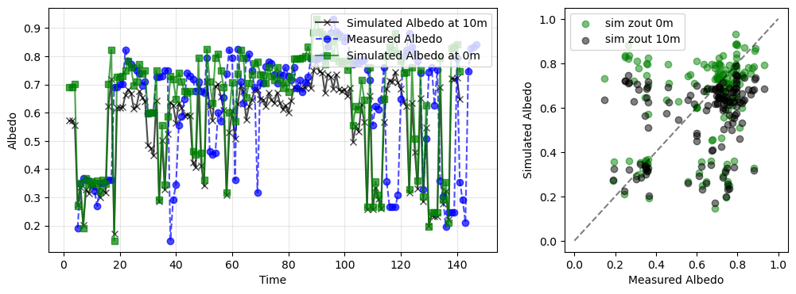

Advanced: Comparison with HALO-(AC)³ aircraft measurements (1)#
Here, we simulate the irradiance at 15 output altitudes along the flight path of the HALO aircraft during the HALO-(AC)³ campaign. The timesteps are filtered for cloud-free conditions and the simulated albedo is compared to aircraft observations over Arctic sea ice.
# Import PyRadtran components
from pyradtran.config import PathsConfig, SimulationDefaults, SimulationConfig, ExecutionConfig, OutputConfig, load_config
from pyradtran.core import Simulation, generate_input_content
from pyradtran.io import parse_uvspec_output
from pyradtran.interface import PyRadtranAccessor # This should register the accessor automatically
from dataclasses import asdict
import matplotlib.pyplot as plt
import numpy as np
import xarray as xr
from pathlib import Path
import os
import yaml
import pandas as pd
# Load the configuration from the YAML file
config_path = Path('config/HALO-AC3_HALO_solar_disort.yaml')
import logging
# Configure logging for pyradtran
logging.getLogger('pyradtran').setLevel(logging.CRITICAL)
ds = xr.open_dataset('data/HALO-AC3_HALO_aircraft_broadband_radiation_clear_sky_with_ocean_600s.nc').interpolate_na('time')
# the albedo has over 30% missing values, so we interpolate it for now
/projekt_agmwend/home_rad/Joshua/micromamba/envs/mamba_josh/lib/python3.12/site-packages/xarray/backends/plugins.py:110: RuntimeWarning: Engine 'gini' loading failed:
module 'numpy' has no attribute 'cumproduct'
external_backend_entrypoints = backends_dict_from_pkg(entrypoints_unique)
# Run a spectral simulation for the dataset
print("Running batch spectral simulation...")
ds_sim = ds.pyradtran.run_uvspec(
config_path=config_path,
return_dataset=True,
save_to_file=True,
output_path='data/Simulated_HALO-AC3_HALO_aircraft_broadband_radiation_clear_sky_with_ocean_600s.nc',
albedo_var='albedo',
)
print("\nSimulation complete!")
ds_sim
2025-07-22 00:56:56,861 - pyradtran.interface - INFO - Altitude found as coordinate - using 15 levels for zout: [ 0 1 2 3 4 5 6 7 8 9 10 11 12 13 14]
2025-07-22 00:56:56,862 - pyradtran.utils - INFO - Scanning for radiosondes under: /projekt_agmwend/data/HALO-AC3/01_soundings/RS_for_libradtran/Dropsondes_HALO
2025-07-22 00:56:56,873 - pyradtran.utils - INFO - Found and parsed 323 radiosonde files.
2025-07-22 00:56:56,936 - pyradtran.interface - INFO - Running 149 simulations across time/location points...
Running batch spectral simulation...
2025-07-22 00:56:57,124 - pyradtran.core - DEBUG - Time 2022-03-14 13:50:00 -> Closest Sonde: 20220314_51225SOD.dat
2025-07-22 00:56:57,124 - pyradtran.core - DEBUG - Time 2022-03-14 10:30:00 -> Closest Sonde: 20220314_37586SOD.dat
2025-07-22 00:56:57,127 - pyradtran.core - DEBUG - Time 2022-03-14 15:20:00 -> Closest Sonde: 20220314_55054SOD.dat
2025-07-22 00:56:57,128 - pyradtran.core - DEBUG - Time 2022-03-14 14:00:00 -> Closest Sonde: 20220314_51225SOD.dat
2025-07-22 00:56:57,130 - pyradtran.core - DEBUG - Generated input file: /projekt_agmwend/home_rad/Joshua/HALO-AC3_Arctic_leads/sim/pyradtran/notebooks/work/uvspec_20220314_135000_clobc0av.inp
2025-07-22 00:56:57,131 - pyradtran.core - DEBUG - Generated input file: /projekt_agmwend/home_rad/Joshua/HALO-AC3_Arctic_leads/sim/pyradtran/notebooks/work/uvspec_20220314_103000_2hzgu1xp.inp
2025-07-22 00:56:57,131 - pyradtran.core - DEBUG - Running uvspec: /opt/libradtran/2.0.4/bin/uvspec < uvspec_20220314_135000_clobc0av.inp > uvspec_20220314_135000_clobc0av.out
2025-07-22 00:56:57,132 - pyradtran.core - DEBUG - Generated input file: /projekt_agmwend/home_rad/Joshua/HALO-AC3_Arctic_leads/sim/pyradtran/notebooks/work/uvspec_20220314_152000_3c98dogi.inp
2025-07-22 00:56:57,130 - pyradtran.core - DEBUG - Time 2022-03-16 09:30:00 -> Closest Sonde: 20220316_38817SOD.dat
2025-07-22 00:56:57,130 - pyradtran.core - DEBUG - Time 2022-03-16 09:20:00 -> Closest Sonde: 20220316_38817SOD.dat
2025-07-22 00:56:57,131 - pyradtran.core - DEBUG - Time 2022-03-16 09:40:00 -> Closest Sonde: 20220316_38817SOD.dat
2025-07-22 00:56:57,132 - pyradtran.core - DEBUG - Running uvspec: /opt/libradtran/2.0.4/bin/uvspec < uvspec_20220314_103000_2hzgu1xp.inp > uvspec_20220314_103000_2hzgu1xp.out
2025-07-22 00:56:57,133 - pyradtran.core - DEBUG - Running uvspec: /opt/libradtran/2.0.4/bin/uvspec < uvspec_20220314_152000_3c98dogi.inp > uvspec_20220314_152000_3c98dogi.out
2025-07-22 00:56:57,133 - pyradtran.core - DEBUG - Generated input file: /projekt_agmwend/home_rad/Joshua/HALO-AC3_Arctic_leads/sim/pyradtran/notebooks/work/uvspec_20220314_140000_z1h0n7pk.inp
2025-07-22 00:56:57,134 - pyradtran.core - DEBUG - Running uvspec: /opt/libradtran/2.0.4/bin/uvspec < uvspec_20220314_140000_z1h0n7pk.inp > uvspec_20220314_140000_z1h0n7pk.out
2025-07-22 00:56:57,136 - pyradtran.core - DEBUG - Generated input file: /projekt_agmwend/home_rad/Joshua/HALO-AC3_Arctic_leads/sim/pyradtran/notebooks/work/uvspec_20220316_093000_z2pgzjbr.inp
2025-07-22 00:56:57,136 - pyradtran.core - DEBUG - Generated input file: /projekt_agmwend/home_rad/Joshua/HALO-AC3_Arctic_leads/sim/pyradtran/notebooks/work/uvspec_20220316_092000_i6ytfoie.inp
2025-07-22 00:56:57,135 - pyradtran.core - DEBUG - Time 2022-03-16 10:50:00 -> Closest Sonde: 20220316_38817SOD.dat
2025-07-22 00:56:57,137 - pyradtran.core - DEBUG - Running uvspec: /opt/libradtran/2.0.4/bin/uvspec < uvspec_20220316_093000_z2pgzjbr.inp > uvspec_20220316_093000_z2pgzjbr.out
2025-07-22 00:56:57,137 - pyradtran.core - DEBUG - Running uvspec: /opt/libradtran/2.0.4/bin/uvspec < uvspec_20220316_092000_i6ytfoie.inp > uvspec_20220316_092000_i6ytfoie.out
2025-07-22 00:56:57,135 - pyradtran.core - DEBUG - Time 2022-03-16 10:30:00 -> Closest Sonde: 20220316_38817SOD.dat
2025-07-22 00:56:57,136 - pyradtran.core - DEBUG - Time 2022-03-16 10:40:00 -> Closest Sonde: 20220316_38817SOD.dat
2025-07-22 00:56:57,138 - pyradtran.core - DEBUG - Generated input file: /projekt_agmwend/home_rad/Joshua/HALO-AC3_Arctic_leads/sim/pyradtran/notebooks/work/uvspec_20220316_094000_gtagzykz.inp
2025-07-22 00:56:57,139 - pyradtran.core - DEBUG - Running uvspec: /opt/libradtran/2.0.4/bin/uvspec < uvspec_20220316_094000_gtagzykz.inp > uvspec_20220316_094000_gtagzykz.out
2025-07-22 00:56:57,140 - pyradtran.core - DEBUG - Generated input file: /projekt_agmwend/home_rad/Joshua/HALO-AC3_Arctic_leads/sim/pyradtran/notebooks/work/uvspec_20220316_105000_xqjcu07f.inp
2025-07-22 00:56:57,141 - pyradtran.core - DEBUG - Generated input file: /projekt_agmwend/home_rad/Joshua/HALO-AC3_Arctic_leads/sim/pyradtran/notebooks/work/uvspec_20220316_103000_m7iyvj81.inp
2025-07-22 00:56:57,141 - pyradtran.core - DEBUG - Generated input file: /projekt_agmwend/home_rad/Joshua/HALO-AC3_Arctic_leads/sim/pyradtran/notebooks/work/uvspec_20220316_104000_i28r_a0b.inp
2025-07-22 00:56:57,141 - pyradtran.core - DEBUG - Running uvspec: /opt/libradtran/2.0.4/bin/uvspec < uvspec_20220316_105000_xqjcu07f.inp > uvspec_20220316_105000_xqjcu07f.out
2025-07-22 00:56:57,142 - pyradtran.core - DEBUG - Running uvspec: /opt/libradtran/2.0.4/bin/uvspec < uvspec_20220316_103000_m7iyvj81.inp > uvspec_20220316_103000_m7iyvj81.out
2025-07-22 00:56:57,140 - pyradtran.core - DEBUG - Time 2022-03-16 11:20:00 -> Closest Sonde: 20220316_40885SOD.dat
2025-07-22 00:56:57,140 - pyradtran.core - DEBUG - Time 2022-03-16 12:10:00 -> Closest Sonde: 20220316_43980SOD.dat
2025-07-22 00:56:57,142 - pyradtran.core - DEBUG - Running uvspec: /opt/libradtran/2.0.4/bin/uvspec < uvspec_20220316_104000_i28r_a0b.inp > uvspec_20220316_104000_i28r_a0b.out
2025-07-22 00:56:57,141 - pyradtran.core - DEBUG - Time 2022-03-16 14:10:00 -> Closest Sonde: 20220316_50837SOD.dat
2025-07-22 00:56:57,144 - pyradtran.core - DEBUG - Time 2022-03-16 14:20:00 -> Closest Sonde: 20220316_51379SOD.dat
2025-07-22 00:56:57,144 - pyradtran.core - DEBUG - Time 2022-03-16 16:00:00 -> Closest Sonde: 20220316_53206SOD.dat
2025-07-22 00:56:57,144 - pyradtran.core - DEBUG - Time 2022-03-16 14:50:00 -> Closest Sonde: 20220316_53206SOD.dat
2025-07-22 00:56:57,146 - pyradtran.core - DEBUG - Generated input file: /projekt_agmwend/home_rad/Joshua/HALO-AC3_Arctic_leads/sim/pyradtran/notebooks/work/uvspec_20220316_121000_o1p3r4ty.inp
2025-07-22 00:56:57,147 - pyradtran.core - DEBUG - Generated input file: /projekt_agmwend/home_rad/Joshua/HALO-AC3_Arctic_leads/sim/pyradtran/notebooks/work/uvspec_20220316_141000_utq9rnqq.inp
2025-07-22 00:56:57,147 - pyradtran.core - DEBUG - Generated input file: /projekt_agmwend/home_rad/Joshua/HALO-AC3_Arctic_leads/sim/pyradtran/notebooks/work/uvspec_20220316_112000_6m3cwoqq.inp
2025-07-22 00:56:57,147 - pyradtran.core - DEBUG - Running uvspec: /opt/libradtran/2.0.4/bin/uvspec < uvspec_20220316_121000_o1p3r4ty.inp > uvspec_20220316_121000_o1p3r4ty.out
2025-07-22 00:56:57,148 - pyradtran.core - DEBUG - Running uvspec: /opt/libradtran/2.0.4/bin/uvspec < uvspec_20220316_141000_utq9rnqq.inp > uvspec_20220316_141000_utq9rnqq.out
2025-07-22 00:56:57,148 - pyradtran.core - DEBUG - Running uvspec: /opt/libradtran/2.0.4/bin/uvspec < uvspec_20220316_112000_6m3cwoqq.inp > uvspec_20220316_112000_6m3cwoqq.out
2025-07-22 00:56:57,150 - pyradtran.core - DEBUG - Generated input file: /projekt_agmwend/home_rad/Joshua/HALO-AC3_Arctic_leads/sim/pyradtran/notebooks/work/uvspec_20220316_145000_co7e0crx.inp
2025-07-22 00:56:57,150 - pyradtran.core - DEBUG - Generated input file: /projekt_agmwend/home_rad/Joshua/HALO-AC3_Arctic_leads/sim/pyradtran/notebooks/work/uvspec_20220316_160000_ujkwert_.inp
2025-07-22 00:56:57,150 - pyradtran.core - DEBUG - Generated input file: /projekt_agmwend/home_rad/Joshua/HALO-AC3_Arctic_leads/sim/pyradtran/notebooks/work/uvspec_20220316_142000_hu6rm1y3.inp
2025-07-22 00:56:57,151 - pyradtran.core - DEBUG - Running uvspec: /opt/libradtran/2.0.4/bin/uvspec < uvspec_20220316_145000_co7e0crx.inp > uvspec_20220316_145000_co7e0crx.out
2025-07-22 00:56:57,151 - pyradtran.core - DEBUG - Running uvspec: /opt/libradtran/2.0.4/bin/uvspec < uvspec_20220316_160000_ujkwert_.inp > uvspec_20220316_160000_ujkwert_.out
2025-07-22 00:56:57,152 - pyradtran.core - DEBUG - Running uvspec: /opt/libradtran/2.0.4/bin/uvspec < uvspec_20220316_142000_hu6rm1y3.inp > uvspec_20220316_142000_hu6rm1y3.out
2025-07-22 00:56:57,168 - pyradtran.core - ERROR - uvspec failed for uvspec_20220314_135000_clobc0av.inp. Return code: 255.
2025-07-22 00:56:57,169 - pyradtran.core - ERROR - uvspec failed for uvspec_20220314_152000_3c98dogi.inp. Return code: 255.
2025-07-22 00:56:57,170 - pyradtran.core - ERROR - uvspec failed for uvspec_20220314_103000_2hzgu1xp.inp. Return code: 255.
2025-07-22 00:56:57,169 - pyradtran.core - ERROR - uvspec failed for uvspec_20220314_140000_z1h0n7pk.inp. Return code: 255.
2025-07-22 00:56:57,170 - pyradtran.interface - WARNING - No output file generated for time=2022-03-14 13:50:00, lat=82.60988041138904, lon=3.4754825839894723
2025-07-22 00:56:57,171 - pyradtran.interface - WARNING - No output file generated for time=2022-03-14 15:20:00, lat=80.13513767984179, lon=4.313989847567346
2025-07-22 00:56:57,171 - pyradtran.interface - WARNING - No output file generated for time=2022-03-14 14:00:00, lat=81.7949440401744, lon=1.5746667627396624
2025-07-22 00:56:57,171 - pyradtran.core - ERROR - uvspec failed for uvspec_20220316_092000_i6ytfoie.inp. Return code: 255.
2025-07-22 00:56:57,171 - pyradtran.interface - WARNING - No output file generated for time=2022-03-14 10:30:00, lat=79.37571511293069, lon=27.160194044846754
2025-07-22 00:56:57,173 - pyradtran.interface - WARNING - No output file generated for time=2022-03-16 09:20:00, lat=70.62135671640371, lon=19.940625054495676
2025-07-22 00:56:57,175 - pyradtran.core - DEBUG - Time 2022-03-16 17:40:00 -> Closest Sonde: 20220316_62532SOD.dat
2025-07-22 00:56:57,176 - pyradtran.interface - WARNING - Simulation 1/149 returned no output
2025-07-22 00:56:57,179 - pyradtran.interface - WARNING - Simulation 2/149 returned no output
2025-07-22 00:56:57,176 - pyradtran.core - DEBUG - Time 2022-03-16 17:50:00 -> Closest Sonde: 20220316_62532SOD.dat
2025-07-22 00:56:57,182 - pyradtran.interface - WARNING - Simulation 3/149 returned no output
2025-07-22 00:56:57,178 - pyradtran.core - DEBUG - Generated input file: /projekt_agmwend/home_rad/Joshua/HALO-AC3_Arctic_leads/sim/pyradtran/notebooks/work/uvspec_20220316_174000_837cix0w.inp
2025-07-22 00:56:57,182 - pyradtran.interface - WARNING - Simulation 4/149 returned no output
2025-07-22 00:56:57,178 - pyradtran.core - DEBUG - Time 2022-03-20 07:50:00 -> Closest Sonde: 20220320_32083SOD.dat
2025-07-22 00:56:57,183 - pyradtran.interface - WARNING - Simulation 5/149 returned no output
2025-07-22 00:56:57,178 - pyradtran.core - DEBUG - Running uvspec: /opt/libradtran/2.0.4/bin/uvspec < uvspec_20220316_174000_837cix0w.inp > uvspec_20220316_174000_837cix0w.out
2025-07-22 00:56:57,178 - pyradtran.core - DEBUG - Generated input file: /projekt_agmwend/home_rad/Joshua/HALO-AC3_Arctic_leads/sim/pyradtran/notebooks/work/uvspec_20220316_175000_3olizpvk.inp
2025-07-22 00:56:57,178 - pyradtran.core - DEBUG - Time 2022-03-20 08:00:00 -> Closest Sonde: 20220320_32083SOD.dat
2025-07-22 00:56:57,179 - pyradtran.core - DEBUG - Running uvspec: /opt/libradtran/2.0.4/bin/uvspec < uvspec_20220316_175000_3olizpvk.inp > uvspec_20220316_175000_3olizpvk.out
2025-07-22 00:56:57,180 - pyradtran.core - DEBUG - Generated input file: /projekt_agmwend/home_rad/Joshua/HALO-AC3_Arctic_leads/sim/pyradtran/notebooks/work/uvspec_20220320_075000_vndv8r1m.inp
2025-07-22 00:56:57,181 - pyradtran.core - DEBUG - Generated input file: /projekt_agmwend/home_rad/Joshua/HALO-AC3_Arctic_leads/sim/pyradtran/notebooks/work/uvspec_20220320_080000_mbfl1zu4.inp
2025-07-22 00:56:57,181 - pyradtran.core - DEBUG - Running uvspec: /opt/libradtran/2.0.4/bin/uvspec < uvspec_20220320_075000_vndv8r1m.inp > uvspec_20220320_075000_vndv8r1m.out
2025-07-22 00:56:57,181 - pyradtran.core - DEBUG - Time 2022-03-20 10:30:00 -> Closest Sonde: 20220320_34598SOD.dat
2025-07-22 00:56:57,182 - pyradtran.core - DEBUG - Running uvspec: /opt/libradtran/2.0.4/bin/uvspec < uvspec_20220320_080000_mbfl1zu4.inp > uvspec_20220320_080000_mbfl1zu4.out
2025-07-22 00:56:57,184 - pyradtran.core - DEBUG - Generated input file: /projekt_agmwend/home_rad/Joshua/HALO-AC3_Arctic_leads/sim/pyradtran/notebooks/work/uvspec_20220320_103000_4djh5frs.inp
2025-07-22 00:56:57,184 - pyradtran.core - DEBUG - Running uvspec: /opt/libradtran/2.0.4/bin/uvspec < uvspec_20220320_103000_4djh5frs.inp > uvspec_20220320_103000_4djh5frs.out
2025-07-22 00:56:59,300 - pyradtran.core - DEBUG - uvspec finished successfully for uvspec_20220316_175000_3olizpvk.inp.
2025-07-22 00:56:59,302 - pyradtran.io - DEBUG - Initialized parser with columns: ['zout', 'lambda', 'sza', 'edir', 'eglo', 'edn', 'eup', 'enet', 'albedo']
2025-07-22 00:56:59,303 - pyradtran.io - DEBUG - Original user columns: ['zout', 'sza', 'edir', 'eglo', 'edn', 'eup', 'enet', 'albedo']
2025-07-22 00:56:59,305 - pyradtran.io - INFO - Detected output type: integrated_multi_altitude
2025-07-22 00:56:59,311 - pyradtran.interface - DEBUG - Successfully processed simulation 6/149 for time 2022-03-16T17:50:00.000000000
2025-07-22 00:56:59,311 - pyradtran.core - DEBUG - Time 2022-03-20 10:40:00 -> Closest Sonde: 20220320_41390SOD.dat
2025-07-22 00:56:59,314 - pyradtran.core - DEBUG - Generated input file: /projekt_agmwend/home_rad/Joshua/HALO-AC3_Arctic_leads/sim/pyradtran/notebooks/work/uvspec_20220320_104000_kec5oal_.inp
2025-07-22 00:56:59,315 - pyradtran.core - DEBUG - Running uvspec: /opt/libradtran/2.0.4/bin/uvspec < uvspec_20220320_104000_kec5oal_.inp > uvspec_20220320_104000_kec5oal_.out
2025-07-22 00:56:59,348 - pyradtran.core - DEBUG - uvspec finished successfully for uvspec_20220316_174000_837cix0w.inp.
2025-07-22 00:56:59,350 - pyradtran.io - DEBUG - Initialized parser with columns: ['zout', 'lambda', 'sza', 'edir', 'eglo', 'edn', 'eup', 'enet', 'albedo']
2025-07-22 00:56:59,351 - pyradtran.io - DEBUG - Original user columns: ['zout', 'sza', 'edir', 'eglo', 'edn', 'eup', 'enet', 'albedo']
2025-07-22 00:56:59,353 - pyradtran.io - INFO - Detected output type: integrated_multi_altitude
2025-07-22 00:56:59,355 - pyradtran.interface - DEBUG - Successfully processed simulation 7/149 for time 2022-03-16T17:40:00.000000000
2025-07-22 00:56:59,356 - pyradtran.core - DEBUG - Time 2022-03-20 10:50:00 -> Closest Sonde: 20220320_41390SOD.dat
2025-07-22 00:56:59,359 - pyradtran.core - DEBUG - Generated input file: /projekt_agmwend/home_rad/Joshua/HALO-AC3_Arctic_leads/sim/pyradtran/notebooks/work/uvspec_20220320_105000_pu7t_bq9.inp
2025-07-22 00:56:59,360 - pyradtran.core - DEBUG - Running uvspec: /opt/libradtran/2.0.4/bin/uvspec < uvspec_20220320_105000_pu7t_bq9.inp > uvspec_20220320_105000_pu7t_bq9.out
2025-07-22 00:57:14,959 - pyradtran.core - DEBUG - uvspec finished successfully for uvspec_20220320_075000_vndv8r1m.inp.
2025-07-22 00:57:14,961 - pyradtran.io - DEBUG - Initialized parser with columns: ['zout', 'lambda', 'sza', 'edir', 'eglo', 'edn', 'eup', 'enet', 'albedo']
2025-07-22 00:57:14,962 - pyradtran.io - DEBUG - Original user columns: ['zout', 'sza', 'edir', 'eglo', 'edn', 'eup', 'enet', 'albedo']
2025-07-22 00:57:14,963 - pyradtran.io - INFO - Detected output type: integrated_multi_altitude
2025-07-22 00:57:14,966 - pyradtran.core - DEBUG - Time 2022-03-20 11:10:00 -> Closest Sonde: 20220320_41390SOD.dat
2025-07-22 00:57:14,967 - pyradtran.interface - DEBUG - Successfully processed simulation 8/149 for time 2022-03-20T07:50:00.000000000
2025-07-22 00:57:14,969 - pyradtran.core - DEBUG - Generated input file: /projekt_agmwend/home_rad/Joshua/HALO-AC3_Arctic_leads/sim/pyradtran/notebooks/work/uvspec_20220320_111000_zjppfbh9.inp
2025-07-22 00:57:14,969 - pyradtran.core - DEBUG - Running uvspec: /opt/libradtran/2.0.4/bin/uvspec < uvspec_20220320_111000_zjppfbh9.inp > uvspec_20220320_111000_zjppfbh9.out
2025-07-22 00:57:15,006 - pyradtran.core - DEBUG - uvspec finished successfully for uvspec_20220320_080000_mbfl1zu4.inp.
2025-07-22 00:57:15,008 - pyradtran.io - DEBUG - Initialized parser with columns: ['zout', 'lambda', 'sza', 'edir', 'eglo', 'edn', 'eup', 'enet', 'albedo']
2025-07-22 00:57:15,009 - pyradtran.io - DEBUG - Original user columns: ['zout', 'sza', 'edir', 'eglo', 'edn', 'eup', 'enet', 'albedo']
2025-07-22 00:57:15,010 - pyradtran.io - INFO - Detected output type: integrated_multi_altitude
2025-07-22 00:57:15,014 - pyradtran.core - DEBUG - Time 2022-03-20 11:20:00 -> Closest Sonde: 20220320_41390SOD.dat
2025-07-22 00:57:15,015 - pyradtran.interface - DEBUG - Successfully processed simulation 9/149 for time 2022-03-20T08:00:00.000000000
2025-07-22 00:57:15,016 - pyradtran.core - DEBUG - Generated input file: /projekt_agmwend/home_rad/Joshua/HALO-AC3_Arctic_leads/sim/pyradtran/notebooks/work/uvspec_20220320_112000_gwzme8dv.inp
2025-07-22 00:57:15,017 - pyradtran.core - DEBUG - Running uvspec: /opt/libradtran/2.0.4/bin/uvspec < uvspec_20220320_112000_gwzme8dv.inp > uvspec_20220320_112000_gwzme8dv.out
2025-07-22 00:57:15,017 - pyradtran.core - DEBUG - uvspec finished successfully for uvspec_20220320_103000_4djh5frs.inp.
2025-07-22 00:57:15,019 - pyradtran.io - DEBUG - Initialized parser with columns: ['zout', 'lambda', 'sza', 'edir', 'eglo', 'edn', 'eup', 'enet', 'albedo']
2025-07-22 00:57:15,020 - pyradtran.core - DEBUG - uvspec finished successfully for uvspec_20220316_141000_utq9rnqq.inp.
2025-07-22 00:57:15,021 - pyradtran.io - DEBUG - Original user columns: ['zout', 'sza', 'edir', 'eglo', 'edn', 'eup', 'enet', 'albedo']
2025-07-22 00:57:15,021 - pyradtran.io - DEBUG - Initialized parser with columns: ['zout', 'lambda', 'sza', 'edir', 'eglo', 'edn', 'eup', 'enet', 'albedo']
2025-07-22 00:57:15,022 - pyradtran.io - DEBUG - Original user columns: ['zout', 'sza', 'edir', 'eglo', 'edn', 'eup', 'enet', 'albedo']
2025-07-22 00:57:15,023 - pyradtran.io - INFO - Detected output type: integrated_multi_altitude
2025-07-22 00:57:15,023 - pyradtran.io - INFO - Detected output type: integrated_multi_altitude
2025-07-22 00:57:15,027 - pyradtran.core - DEBUG - Time 2022-03-20 11:30:00 -> Closest Sonde: 20220320_41390SOD.dat
2025-07-22 00:57:15,028 - pyradtran.core - DEBUG - Time 2022-03-20 11:40:00 -> Closest Sonde: 20220320_41390SOD.dat
2025-07-22 00:57:15,029 - pyradtran.interface - DEBUG - Successfully processed simulation 10/149 for time 2022-03-20T10:30:00.000000000
2025-07-22 00:57:15,030 - pyradtran.interface - DEBUG - Successfully processed simulation 11/149 for time 2022-03-16T14:10:00.000000000
2025-07-22 00:57:15,029 - pyradtran.core - DEBUG - Generated input file: /projekt_agmwend/home_rad/Joshua/HALO-AC3_Arctic_leads/sim/pyradtran/notebooks/work/uvspec_20220320_113000_g73qysbq.inp
2025-07-22 00:57:15,030 - pyradtran.core - DEBUG - Generated input file: /projekt_agmwend/home_rad/Joshua/HALO-AC3_Arctic_leads/sim/pyradtran/notebooks/work/uvspec_20220320_114000_p3d1skvf.inp
2025-07-22 00:57:15,030 - pyradtran.core - DEBUG - Running uvspec: /opt/libradtran/2.0.4/bin/uvspec < uvspec_20220320_113000_g73qysbq.inp > uvspec_20220320_113000_g73qysbq.out
2025-07-22 00:57:15,031 - pyradtran.core - DEBUG - Running uvspec: /opt/libradtran/2.0.4/bin/uvspec < uvspec_20220320_114000_p3d1skvf.inp > uvspec_20220320_114000_p3d1skvf.out
2025-07-22 00:57:15,043 - pyradtran.core - DEBUG - uvspec finished successfully for uvspec_20220316_142000_hu6rm1y3.inp.
2025-07-22 00:57:15,045 - pyradtran.io - DEBUG - Initialized parser with columns: ['zout', 'lambda', 'sza', 'edir', 'eglo', 'edn', 'eup', 'enet', 'albedo']
2025-07-22 00:57:15,045 - pyradtran.io - DEBUG - Original user columns: ['zout', 'sza', 'edir', 'eglo', 'edn', 'eup', 'enet', 'albedo']
2025-07-22 00:57:15,047 - pyradtran.io - INFO - Detected output type: integrated_multi_altitude
2025-07-22 00:57:15,052 - pyradtran.interface - DEBUG - Successfully processed simulation 12/149 for time 2022-03-16T14:20:00.000000000
2025-07-22 00:57:15,052 - pyradtran.core - DEBUG - Time 2022-03-20 11:50:00 -> Closest Sonde: 20220320_41390SOD.dat
2025-07-22 00:57:15,054 - pyradtran.core - DEBUG - Generated input file: /projekt_agmwend/home_rad/Joshua/HALO-AC3_Arctic_leads/sim/pyradtran/notebooks/work/uvspec_20220320_115000_g95jt9vw.inp
2025-07-22 00:57:15,055 - pyradtran.core - DEBUG - Running uvspec: /opt/libradtran/2.0.4/bin/uvspec < uvspec_20220320_115000_g95jt9vw.inp > uvspec_20220320_115000_g95jt9vw.out
2025-07-22 00:57:15,074 - pyradtran.core - DEBUG - uvspec finished successfully for uvspec_20220316_103000_m7iyvj81.inp.
2025-07-22 00:57:15,074 - pyradtran.core - DEBUG - uvspec finished successfully for uvspec_20220316_093000_z2pgzjbr.inp.
2025-07-22 00:57:15,075 - pyradtran.io - DEBUG - Initialized parser with columns: ['zout', 'lambda', 'sza', 'edir', 'eglo', 'edn', 'eup', 'enet', 'albedo']
2025-07-22 00:57:15,075 - pyradtran.io - DEBUG - Initialized parser with columns: ['zout', 'lambda', 'sza', 'edir', 'eglo', 'edn', 'eup', 'enet', 'albedo']
2025-07-22 00:57:15,076 - pyradtran.io - DEBUG - Original user columns: ['zout', 'sza', 'edir', 'eglo', 'edn', 'eup', 'enet', 'albedo']
2025-07-22 00:57:15,076 - pyradtran.io - DEBUG - Original user columns: ['zout', 'sza', 'edir', 'eglo', 'edn', 'eup', 'enet', 'albedo']
2025-07-22 00:57:15,077 - pyradtran.io - INFO - Detected output type: integrated_multi_altitude
2025-07-22 00:57:15,077 - pyradtran.io - INFO - Detected output type: integrated_multi_altitude
2025-07-22 00:57:15,082 - pyradtran.interface - DEBUG - Successfully processed simulation 13/149 for time 2022-03-16T09:30:00.000000000
2025-07-22 00:57:15,082 - pyradtran.core - DEBUG - uvspec finished successfully for uvspec_20220316_160000_ujkwert_.inp.
2025-07-22 00:57:15,084 - pyradtran.interface - DEBUG - Successfully processed simulation 14/149 for time 2022-03-16T10:30:00.000000000
2025-07-22 00:57:15,082 - pyradtran.core - DEBUG - uvspec finished successfully for uvspec_20220316_112000_6m3cwoqq.inp.
2025-07-22 00:57:15,083 - pyradtran.core - DEBUG - Time 2022-03-20 14:20:00 -> Closest Sonde: 20220320_51074SOD.dat
2025-07-22 00:57:15,083 - pyradtran.core - DEBUG - Time 2022-03-20 14:10:00 -> Closest Sonde: 20220320_51074SOD.dat
2025-07-22 00:57:15,084 - pyradtran.io - DEBUG - Initialized parser with columns: ['zout', 'lambda', 'sza', 'edir', 'eglo', 'edn', 'eup', 'enet', 'albedo']
2025-07-22 00:57:15,084 - pyradtran.io - DEBUG - Initialized parser with columns: ['zout', 'lambda', 'sza', 'edir', 'eglo', 'edn', 'eup', 'enet', 'albedo']
2025-07-22 00:57:15,084 - pyradtran.core - DEBUG - uvspec finished successfully for uvspec_20220316_145000_co7e0crx.inp.
2025-07-22 00:57:15,085 - pyradtran.io - DEBUG - Original user columns: ['zout', 'sza', 'edir', 'eglo', 'edn', 'eup', 'enet', 'albedo']
2025-07-22 00:57:15,085 - pyradtran.io - DEBUG - Original user columns: ['zout', 'sza', 'edir', 'eglo', 'edn', 'eup', 'enet', 'albedo']
2025-07-22 00:57:15,086 - pyradtran.core - DEBUG - Generated input file: /projekt_agmwend/home_rad/Joshua/HALO-AC3_Arctic_leads/sim/pyradtran/notebooks/work/uvspec_20220320_141000_4g7eudmg.inp
2025-07-22 00:57:15,086 - pyradtran.core - DEBUG - Generated input file: /projekt_agmwend/home_rad/Joshua/HALO-AC3_Arctic_leads/sim/pyradtran/notebooks/work/uvspec_20220320_142000_my7ej2_9.inp
2025-07-22 00:57:15,086 - pyradtran.core - DEBUG - Running uvspec: /opt/libradtran/2.0.4/bin/uvspec < uvspec_20220320_141000_4g7eudmg.inp > uvspec_20220320_141000_4g7eudmg.out
2025-07-22 00:57:15,086 - pyradtran.io - INFO - Detected output type: integrated_multi_altitude
2025-07-22 00:57:15,086 - pyradtran.io - DEBUG - Initialized parser with columns: ['zout', 'lambda', 'sza', 'edir', 'eglo', 'edn', 'eup', 'enet', 'albedo']
2025-07-22 00:57:15,086 - pyradtran.io - INFO - Detected output type: integrated_multi_altitude
2025-07-22 00:57:15,087 - pyradtran.core - DEBUG - Running uvspec: /opt/libradtran/2.0.4/bin/uvspec < uvspec_20220320_142000_my7ej2_9.inp > uvspec_20220320_142000_my7ej2_9.out
2025-07-22 00:57:15,087 - pyradtran.io - DEBUG - Original user columns: ['zout', 'sza', 'edir', 'eglo', 'edn', 'eup', 'enet', 'albedo']
2025-07-22 00:57:15,089 - pyradtran.io - INFO - Detected output type: integrated_multi_altitude
2025-07-22 00:57:15,092 - pyradtran.core - DEBUG - Time 2022-03-20 16:20:00 -> Closest Sonde: 20220320_58742SOD.dat
2025-07-22 00:57:15,092 - pyradtran.core - DEBUG - Time 2022-03-20 16:30:00 -> Closest Sonde: 20220320_59082SOD.dat
2025-07-22 00:57:15,090 - pyradtran.interface - DEBUG - Successfully processed simulation 15/149 for time 2022-03-16T11:20:00.000000000
2025-07-22 00:57:15,094 - pyradtran.core - DEBUG - Generated input file: /projekt_agmwend/home_rad/Joshua/HALO-AC3_Arctic_leads/sim/pyradtran/notebooks/work/uvspec_20220320_162000_e8sankit.inp
2025-07-22 00:57:15,099 - pyradtran.interface - DEBUG - Successfully processed simulation 16/149 for time 2022-03-16T16:00:00.000000000
2025-07-22 00:57:15,094 - pyradtran.core - DEBUG - Generated input file: /projekt_agmwend/home_rad/Joshua/HALO-AC3_Arctic_leads/sim/pyradtran/notebooks/work/uvspec_20220320_163000_v3d6o4za.inp
2025-07-22 00:57:15,094 - pyradtran.core - DEBUG - Running uvspec: /opt/libradtran/2.0.4/bin/uvspec < uvspec_20220320_162000_e8sankit.inp > uvspec_20220320_162000_e8sankit.out
2025-07-22 00:57:15,099 - pyradtran.interface - DEBUG - Successfully processed simulation 17/149 for time 2022-03-16T14:50:00.000000000
2025-07-22 00:57:15,094 - pyradtran.core - DEBUG - Time 2022-03-20 16:40:00 -> Closest Sonde: 20220320_59082SOD.dat
2025-07-22 00:57:15,095 - pyradtran.core - DEBUG - Running uvspec: /opt/libradtran/2.0.4/bin/uvspec < uvspec_20220320_163000_v3d6o4za.inp > uvspec_20220320_163000_v3d6o4za.out
2025-07-22 00:57:15,097 - pyradtran.core - DEBUG - Generated input file: /projekt_agmwend/home_rad/Joshua/HALO-AC3_Arctic_leads/sim/pyradtran/notebooks/work/uvspec_20220320_164000_b70lhujz.inp
2025-07-22 00:57:15,098 - pyradtran.core - DEBUG - Running uvspec: /opt/libradtran/2.0.4/bin/uvspec < uvspec_20220320_164000_b70lhujz.inp > uvspec_20220320_164000_b70lhujz.out
2025-07-22 00:57:15,124 - pyradtran.core - DEBUG - uvspec finished successfully for uvspec_20220316_105000_xqjcu07f.inp.
2025-07-22 00:57:15,126 - pyradtran.io - DEBUG - Initialized parser with columns: ['zout', 'lambda', 'sza', 'edir', 'eglo', 'edn', 'eup', 'enet', 'albedo']
2025-07-22 00:57:15,126 - pyradtran.io - DEBUG - Original user columns: ['zout', 'sza', 'edir', 'eglo', 'edn', 'eup', 'enet', 'albedo']
2025-07-22 00:57:15,128 - pyradtran.io - INFO - Detected output type: integrated_multi_altitude
2025-07-22 00:57:15,132 - pyradtran.interface - DEBUG - Successfully processed simulation 18/149 for time 2022-03-16T10:50:00.000000000
2025-07-22 00:57:15,132 - pyradtran.core - DEBUG - Time 2022-03-21 08:40:00 -> Closest Sonde: 20220321_34435SOD.dat
2025-07-22 00:57:15,135 - pyradtran.core - DEBUG - Generated input file: /projekt_agmwend/home_rad/Joshua/HALO-AC3_Arctic_leads/sim/pyradtran/notebooks/work/uvspec_20220321_084000_srj2c7ue.inp
2025-07-22 00:57:15,136 - pyradtran.core - DEBUG - Running uvspec: /opt/libradtran/2.0.4/bin/uvspec < uvspec_20220321_084000_srj2c7ue.inp > uvspec_20220321_084000_srj2c7ue.out
2025-07-22 00:57:15,230 - pyradtran.core - DEBUG - uvspec finished successfully for uvspec_20220316_121000_o1p3r4ty.inp.
2025-07-22 00:57:15,232 - pyradtran.io - DEBUG - Initialized parser with columns: ['zout', 'lambda', 'sza', 'edir', 'eglo', 'edn', 'eup', 'enet', 'albedo']
2025-07-22 00:57:15,233 - pyradtran.io - DEBUG - Original user columns: ['zout', 'sza', 'edir', 'eglo', 'edn', 'eup', 'enet', 'albedo']
2025-07-22 00:57:15,235 - pyradtran.io - INFO - Detected output type: integrated_multi_altitude
2025-07-22 00:57:15,240 - pyradtran.interface - DEBUG - Successfully processed simulation 19/149 for time 2022-03-16T12:10:00.000000000
2025-07-22 00:57:15,240 - pyradtran.core - DEBUG - Time 2022-03-21 08:50:00 -> Closest Sonde: 20220321_34435SOD.dat
2025-07-22 00:57:15,242 - pyradtran.core - DEBUG - Generated input file: /projekt_agmwend/home_rad/Joshua/HALO-AC3_Arctic_leads/sim/pyradtran/notebooks/work/uvspec_20220321_085000_qv5ylzu5.inp
2025-07-22 00:57:15,243 - pyradtran.core - DEBUG - Running uvspec: /opt/libradtran/2.0.4/bin/uvspec < uvspec_20220321_085000_qv5ylzu5.inp > uvspec_20220321_085000_qv5ylzu5.out
2025-07-22 00:57:15,275 - pyradtran.core - DEBUG - uvspec finished successfully for uvspec_20220316_104000_i28r_a0b.inp.
2025-07-22 00:57:15,276 - pyradtran.io - DEBUG - Initialized parser with columns: ['zout', 'lambda', 'sza', 'edir', 'eglo', 'edn', 'eup', 'enet', 'albedo']
2025-07-22 00:57:15,277 - pyradtran.io - DEBUG - Original user columns: ['zout', 'sza', 'edir', 'eglo', 'edn', 'eup', 'enet', 'albedo']
2025-07-22 00:57:15,278 - pyradtran.io - INFO - Detected output type: integrated_multi_altitude
2025-07-22 00:57:15,282 - pyradtran.core - DEBUG - uvspec finished successfully for uvspec_20220316_094000_gtagzykz.inp.
2025-07-22 00:57:15,283 - pyradtran.interface - DEBUG - Successfully processed simulation 20/149 for time 2022-03-16T10:40:00.000000000
2025-07-22 00:57:15,283 - pyradtran.core - DEBUG - Time 2022-03-21 09:10:00 -> Closest Sonde: 20220321_34435SOD.dat
2025-07-22 00:57:15,283 - pyradtran.io - DEBUG - Initialized parser with columns: ['zout', 'lambda', 'sza', 'edir', 'eglo', 'edn', 'eup', 'enet', 'albedo']
2025-07-22 00:57:15,284 - pyradtran.io - DEBUG - Original user columns: ['zout', 'sza', 'edir', 'eglo', 'edn', 'eup', 'enet', 'albedo']
2025-07-22 00:57:15,285 - pyradtran.core - DEBUG - Generated input file: /projekt_agmwend/home_rad/Joshua/HALO-AC3_Arctic_leads/sim/pyradtran/notebooks/work/uvspec_20220321_091000_262449hf.inp
2025-07-22 00:57:15,285 - pyradtran.io - INFO - Detected output type: integrated_multi_altitude
2025-07-22 00:57:15,286 - pyradtran.core - DEBUG - Running uvspec: /opt/libradtran/2.0.4/bin/uvspec < uvspec_20220321_091000_262449hf.inp > uvspec_20220321_091000_262449hf.out
2025-07-22 00:57:15,289 - pyradtran.core - DEBUG - Time 2022-03-21 11:30:00 -> Closest Sonde: 20220321_39780SOD.dat
2025-07-22 00:57:15,289 - pyradtran.interface - DEBUG - Successfully processed simulation 21/149 for time 2022-03-16T09:40:00.000000000
2025-07-22 00:57:15,291 - pyradtran.core - DEBUG - Generated input file: /projekt_agmwend/home_rad/Joshua/HALO-AC3_Arctic_leads/sim/pyradtran/notebooks/work/uvspec_20220321_113000_2xomxt7u.inp
2025-07-22 00:57:15,291 - pyradtran.core - DEBUG - Running uvspec: /opt/libradtran/2.0.4/bin/uvspec < uvspec_20220321_113000_2xomxt7u.inp > uvspec_20220321_113000_2xomxt7u.out
2025-07-22 00:57:16,390 - pyradtran.core - DEBUG - uvspec finished successfully for uvspec_20220320_104000_kec5oal_.inp.
2025-07-22 00:57:16,392 - pyradtran.io - DEBUG - Initialized parser with columns: ['zout', 'lambda', 'sza', 'edir', 'eglo', 'edn', 'eup', 'enet', 'albedo']
2025-07-22 00:57:16,393 - pyradtran.io - DEBUG - Original user columns: ['zout', 'sza', 'edir', 'eglo', 'edn', 'eup', 'enet', 'albedo']
2025-07-22 00:57:16,394 - pyradtran.io - INFO - Detected output type: integrated_multi_altitude
2025-07-22 00:57:16,397 - pyradtran.interface - DEBUG - Successfully processed simulation 22/149 for time 2022-03-20T10:40:00.000000000
2025-07-22 00:57:16,397 - pyradtran.core - DEBUG - Time 2022-03-21 11:40:00 -> Closest Sonde: 20220321_39780SOD.dat
2025-07-22 00:57:16,399 - pyradtran.core - DEBUG - Generated input file: /projekt_agmwend/home_rad/Joshua/HALO-AC3_Arctic_leads/sim/pyradtran/notebooks/work/uvspec_20220321_114000_gvoj5nk9.inp
2025-07-22 00:57:16,400 - pyradtran.core - DEBUG - Running uvspec: /opt/libradtran/2.0.4/bin/uvspec < uvspec_20220321_114000_gvoj5nk9.inp > uvspec_20220321_114000_gvoj5nk9.out
2025-07-22 00:57:16,439 - pyradtran.core - DEBUG - uvspec finished successfully for uvspec_20220320_105000_pu7t_bq9.inp.
2025-07-22 00:57:16,441 - pyradtran.io - DEBUG - Initialized parser with columns: ['zout', 'lambda', 'sza', 'edir', 'eglo', 'edn', 'eup', 'enet', 'albedo']
2025-07-22 00:57:16,442 - pyradtran.io - DEBUG - Original user columns: ['zout', 'sza', 'edir', 'eglo', 'edn', 'eup', 'enet', 'albedo']
2025-07-22 00:57:16,443 - pyradtran.io - INFO - Detected output type: integrated_multi_altitude
2025-07-22 00:57:16,446 - pyradtran.interface - DEBUG - Successfully processed simulation 23/149 for time 2022-03-20T10:50:00.000000000
2025-07-22 00:57:16,446 - pyradtran.core - DEBUG - Time 2022-03-28 09:00:00 -> Closest Sonde: 20220328_37218SOD.dat
2025-07-22 00:57:16,448 - pyradtran.core - DEBUG - Generated input file: /projekt_agmwend/home_rad/Joshua/HALO-AC3_Arctic_leads/sim/pyradtran/notebooks/work/uvspec_20220328_090000_j9a2jo_p.inp
2025-07-22 00:57:16,448 - pyradtran.core - DEBUG - Running uvspec: /opt/libradtran/2.0.4/bin/uvspec < uvspec_20220328_090000_j9a2jo_p.inp > uvspec_20220328_090000_j9a2jo_p.out
2025-07-22 00:57:31,915 - pyradtran.core - DEBUG - uvspec finished successfully for uvspec_20220328_090000_j9a2jo_p.inp.
2025-07-22 00:57:31,918 - pyradtran.io - DEBUG - Initialized parser with columns: ['zout', 'lambda', 'sza', 'edir', 'eglo', 'edn', 'eup', 'enet', 'albedo']
2025-07-22 00:57:31,919 - pyradtran.io - DEBUG - Original user columns: ['zout', 'sza', 'edir', 'eglo', 'edn', 'eup', 'enet', 'albedo']
2025-07-22 00:57:31,920 - pyradtran.io - INFO - Detected output type: integrated_multi_altitude
2025-07-22 00:57:31,924 - pyradtran.interface - DEBUG - Successfully processed simulation 24/149 for time 2022-03-28T09:00:00.000000000
2025-07-22 00:57:31,924 - pyradtran.core - DEBUG - Time 2022-03-28 09:10:00 -> Closest Sonde: 20220328_37218SOD.dat
2025-07-22 00:57:31,927 - pyradtran.core - DEBUG - Generated input file: /projekt_agmwend/home_rad/Joshua/HALO-AC3_Arctic_leads/sim/pyradtran/notebooks/work/uvspec_20220328_091000_m3sadd1f.inp
2025-07-22 00:57:31,928 - pyradtran.core - DEBUG - Running uvspec: /opt/libradtran/2.0.4/bin/uvspec < uvspec_20220328_091000_m3sadd1f.inp > uvspec_20220328_091000_m3sadd1f.out
2025-07-22 00:57:32,152 - pyradtran.core - DEBUG - uvspec finished successfully for uvspec_20220321_084000_srj2c7ue.inp.
2025-07-22 00:57:32,154 - pyradtran.io - DEBUG - Initialized parser with columns: ['zout', 'lambda', 'sza', 'edir', 'eglo', 'edn', 'eup', 'enet', 'albedo']
2025-07-22 00:57:32,155 - pyradtran.io - DEBUG - Original user columns: ['zout', 'sza', 'edir', 'eglo', 'edn', 'eup', 'enet', 'albedo']
2025-07-22 00:57:32,156 - pyradtran.io - INFO - Detected output type: integrated_multi_altitude
2025-07-22 00:57:32,159 - pyradtran.core - DEBUG - Time 2022-03-28 09:20:00 -> Closest Sonde: 20220328_37218SOD.dat
2025-07-22 00:57:32,160 - pyradtran.interface - DEBUG - Successfully processed simulation 25/149 for time 2022-03-21T08:40:00.000000000
2025-07-22 00:57:32,161 - pyradtran.core - DEBUG - Generated input file: /projekt_agmwend/home_rad/Joshua/HALO-AC3_Arctic_leads/sim/pyradtran/notebooks/work/uvspec_20220328_092000_wa_7leu1.inp
2025-07-22 00:57:32,162 - pyradtran.core - DEBUG - Running uvspec: /opt/libradtran/2.0.4/bin/uvspec < uvspec_20220328_092000_wa_7leu1.inp > uvspec_20220328_092000_wa_7leu1.out
2025-07-22 00:57:32,226 - pyradtran.core - DEBUG - uvspec finished successfully for uvspec_20220321_085000_qv5ylzu5.inp.
2025-07-22 00:57:32,228 - pyradtran.io - DEBUG - Initialized parser with columns: ['zout', 'lambda', 'sza', 'edir', 'eglo', 'edn', 'eup', 'enet', 'albedo']
2025-07-22 00:57:32,229 - pyradtran.io - DEBUG - Original user columns: ['zout', 'sza', 'edir', 'eglo', 'edn', 'eup', 'enet', 'albedo']
2025-07-22 00:57:32,230 - pyradtran.io - INFO - Detected output type: integrated_multi_altitude
2025-07-22 00:57:32,233 - pyradtran.core - DEBUG - Time 2022-03-28 10:30:00 -> Closest Sonde: 20220328_37831SOD.dat
2025-07-22 00:57:32,234 - pyradtran.interface - DEBUG - Successfully processed simulation 26/149 for time 2022-03-21T08:50:00.000000000
2025-07-22 00:57:32,235 - pyradtran.core - DEBUG - Generated input file: /projekt_agmwend/home_rad/Joshua/HALO-AC3_Arctic_leads/sim/pyradtran/notebooks/work/uvspec_20220328_103000_sbn9vvhe.inp
2025-07-22 00:57:32,236 - pyradtran.core - DEBUG - Running uvspec: /opt/libradtran/2.0.4/bin/uvspec < uvspec_20220328_103000_sbn9vvhe.inp > uvspec_20220328_103000_sbn9vvhe.out
2025-07-22 00:57:32,297 - pyradtran.core - DEBUG - uvspec finished successfully for uvspec_20220321_091000_262449hf.inp.
2025-07-22 00:57:32,298 - pyradtran.io - DEBUG - Initialized parser with columns: ['zout', 'lambda', 'sza', 'edir', 'eglo', 'edn', 'eup', 'enet', 'albedo']
2025-07-22 00:57:32,299 - pyradtran.io - DEBUG - Original user columns: ['zout', 'sza', 'edir', 'eglo', 'edn', 'eup', 'enet', 'albedo']
2025-07-22 00:57:32,301 - pyradtran.io - INFO - Detected output type: integrated_multi_altitude
2025-07-22 00:57:32,304 - pyradtran.core - DEBUG - Time 2022-03-28 10:40:00 -> Closest Sonde: 20220328_37831SOD.dat
2025-07-22 00:57:32,305 - pyradtran.interface - DEBUG - Successfully processed simulation 27/149 for time 2022-03-21T09:10:00.000000000
2025-07-22 00:57:32,307 - pyradtran.core - DEBUG - Generated input file: /projekt_agmwend/home_rad/Joshua/HALO-AC3_Arctic_leads/sim/pyradtran/notebooks/work/uvspec_20220328_104000_kcwtar_1.inp
2025-07-22 00:57:32,307 - pyradtran.core - DEBUG - uvspec finished successfully for uvspec_20220320_114000_p3d1skvf.inp.
2025-07-22 00:57:32,307 - pyradtran.core - DEBUG - Running uvspec: /opt/libradtran/2.0.4/bin/uvspec < uvspec_20220328_104000_kcwtar_1.inp > uvspec_20220328_104000_kcwtar_1.out
2025-07-22 00:57:32,308 - pyradtran.io - DEBUG - Initialized parser with columns: ['zout', 'lambda', 'sza', 'edir', 'eglo', 'edn', 'eup', 'enet', 'albedo']
2025-07-22 00:57:32,309 - pyradtran.io - DEBUG - Original user columns: ['zout', 'sza', 'edir', 'eglo', 'edn', 'eup', 'enet', 'albedo']
2025-07-22 00:57:32,310 - pyradtran.io - INFO - Detected output type: integrated_multi_altitude
2025-07-22 00:57:32,313 - pyradtran.core - DEBUG - Time 2022-03-28 11:00:00 -> Closest Sonde: 20220328_40256SOD.dat
2025-07-22 00:57:32,314 - pyradtran.interface - DEBUG - Successfully processed simulation 28/149 for time 2022-03-20T11:40:00.000000000
2025-07-22 00:57:32,315 - pyradtran.core - DEBUG - Generated input file: /projekt_agmwend/home_rad/Joshua/HALO-AC3_Arctic_leads/sim/pyradtran/notebooks/work/uvspec_20220328_110000_hw2uh_rr.inp
2025-07-22 00:57:32,316 - pyradtran.core - DEBUG - Running uvspec: /opt/libradtran/2.0.4/bin/uvspec < uvspec_20220328_110000_hw2uh_rr.inp > uvspec_20220328_110000_hw2uh_rr.out
2025-07-22 00:57:32,337 - pyradtran.core - DEBUG - uvspec finished successfully for uvspec_20220320_111000_zjppfbh9.inp.
2025-07-22 00:57:32,338 - pyradtran.io - DEBUG - Initialized parser with columns: ['zout', 'lambda', 'sza', 'edir', 'eglo', 'edn', 'eup', 'enet', 'albedo']
2025-07-22 00:57:32,339 - pyradtran.io - DEBUG - Original user columns: ['zout', 'sza', 'edir', 'eglo', 'edn', 'eup', 'enet', 'albedo']
2025-07-22 00:57:32,340 - pyradtran.io - INFO - Detected output type: integrated_multi_altitude
2025-07-22 00:57:32,345 - pyradtran.interface - DEBUG - Successfully processed simulation 29/149 for time 2022-03-20T11:10:00.000000000
2025-07-22 00:57:32,344 - pyradtran.core - DEBUG - Time 2022-03-28 12:00:00 -> Closest Sonde: 20220328_42700SOD.dat
2025-07-22 00:57:32,346 - pyradtran.core - DEBUG - Generated input file: /projekt_agmwend/home_rad/Joshua/HALO-AC3_Arctic_leads/sim/pyradtran/notebooks/work/uvspec_20220328_120000_lnhs1rh1.inp
2025-07-22 00:57:32,347 - pyradtran.core - DEBUG - Running uvspec: /opt/libradtran/2.0.4/bin/uvspec < uvspec_20220328_120000_lnhs1rh1.inp > uvspec_20220328_120000_lnhs1rh1.out
2025-07-22 00:57:32,358 - pyradtran.core - DEBUG - uvspec finished successfully for uvspec_20220320_113000_g73qysbq.inp.
2025-07-22 00:57:32,360 - pyradtran.io - DEBUG - Initialized parser with columns: ['zout', 'lambda', 'sza', 'edir', 'eglo', 'edn', 'eup', 'enet', 'albedo']
2025-07-22 00:57:32,360 - pyradtran.io - DEBUG - Original user columns: ['zout', 'sza', 'edir', 'eglo', 'edn', 'eup', 'enet', 'albedo']
2025-07-22 00:57:32,361 - pyradtran.io - INFO - Detected output type: integrated_multi_altitude
2025-07-22 00:57:32,364 - pyradtran.interface - DEBUG - Successfully processed simulation 30/149 for time 2022-03-20T11:30:00.000000000
2025-07-22 00:57:32,364 - pyradtran.core - DEBUG - Time 2022-03-28 12:10:00 -> Closest Sonde: 20220328_44650SOD.dat
2025-07-22 00:57:32,366 - pyradtran.core - DEBUG - Generated input file: /projekt_agmwend/home_rad/Joshua/HALO-AC3_Arctic_leads/sim/pyradtran/notebooks/work/uvspec_20220328_121000_ycq5k9bx.inp
2025-07-22 00:57:32,367 - pyradtran.core - DEBUG - Running uvspec: /opt/libradtran/2.0.4/bin/uvspec < uvspec_20220328_121000_ycq5k9bx.inp > uvspec_20220328_121000_ycq5k9bx.out
2025-07-22 00:57:32,399 - pyradtran.core - DEBUG - uvspec finished successfully for uvspec_20220320_141000_4g7eudmg.inp.
2025-07-22 00:57:32,400 - pyradtran.io - DEBUG - Initialized parser with columns: ['zout', 'lambda', 'sza', 'edir', 'eglo', 'edn', 'eup', 'enet', 'albedo']
2025-07-22 00:57:32,401 - pyradtran.io - DEBUG - Original user columns: ['zout', 'sza', 'edir', 'eglo', 'edn', 'eup', 'enet', 'albedo']
2025-07-22 00:57:32,402 - pyradtran.io - INFO - Detected output type: integrated_multi_altitude
2025-07-22 00:57:32,406 - pyradtran.interface - DEBUG - Successfully processed simulation 31/149 for time 2022-03-20T14:10:00.000000000
2025-07-22 00:57:32,406 - pyradtran.core - DEBUG - Time 2022-03-28 12:20:00 -> Closest Sonde: 20220328_44650SOD.dat
2025-07-22 00:57:32,407 - pyradtran.core - DEBUG - uvspec finished successfully for uvspec_20220320_142000_my7ej2_9.inp.
2025-07-22 00:57:32,408 - pyradtran.io - DEBUG - Initialized parser with columns: ['zout', 'lambda', 'sza', 'edir', 'eglo', 'edn', 'eup', 'enet', 'albedo']
2025-07-22 00:57:32,409 - pyradtran.io - DEBUG - Original user columns: ['zout', 'sza', 'edir', 'eglo', 'edn', 'eup', 'enet', 'albedo']
2025-07-22 00:57:32,409 - pyradtran.core - DEBUG - Generated input file: /projekt_agmwend/home_rad/Joshua/HALO-AC3_Arctic_leads/sim/pyradtran/notebooks/work/uvspec_20220328_122000_d_6_qtbt.inp
2025-07-22 00:57:32,410 - pyradtran.io - INFO - Detected output type: integrated_multi_altitude
2025-07-22 00:57:32,410 - pyradtran.core - DEBUG - Running uvspec: /opt/libradtran/2.0.4/bin/uvspec < uvspec_20220328_122000_d_6_qtbt.inp > uvspec_20220328_122000_d_6_qtbt.out
2025-07-22 00:57:32,412 - pyradtran.core - DEBUG - Time 2022-03-28 13:00:00 -> Closest Sonde: 20220328_46849SOD.dat
2025-07-22 00:57:32,411 - pyradtran.interface - DEBUG - Successfully processed simulation 32/149 for time 2022-03-20T14:20:00.000000000
2025-07-22 00:57:32,414 - pyradtran.core - DEBUG - Generated input file: /projekt_agmwend/home_rad/Joshua/HALO-AC3_Arctic_leads/sim/pyradtran/notebooks/work/uvspec_20220328_130000_ou3iewjj.inp
2025-07-22 00:57:32,415 - pyradtran.core - DEBUG - Running uvspec: /opt/libradtran/2.0.4/bin/uvspec < uvspec_20220328_130000_ou3iewjj.inp > uvspec_20220328_130000_ou3iewjj.out
2025-07-22 00:57:32,445 - pyradtran.core - DEBUG - uvspec finished successfully for uvspec_20220320_112000_gwzme8dv.inp.
2025-07-22 00:57:32,447 - pyradtran.io - DEBUG - Initialized parser with columns: ['zout', 'lambda', 'sza', 'edir', 'eglo', 'edn', 'eup', 'enet', 'albedo']
2025-07-22 00:57:32,448 - pyradtran.io - DEBUG - Original user columns: ['zout', 'sza', 'edir', 'eglo', 'edn', 'eup', 'enet', 'albedo']
2025-07-22 00:57:32,449 - pyradtran.io - INFO - Detected output type: integrated_multi_altitude
2025-07-22 00:57:32,452 - pyradtran.interface - DEBUG - Successfully processed simulation 33/149 for time 2022-03-20T11:20:00.000000000
2025-07-22 00:57:32,452 - pyradtran.core - DEBUG - Time 2022-03-28 13:10:00 -> Closest Sonde: 20220328_46849SOD.dat
2025-07-22 00:57:32,454 - pyradtran.core - DEBUG - Generated input file: /projekt_agmwend/home_rad/Joshua/HALO-AC3_Arctic_leads/sim/pyradtran/notebooks/work/uvspec_20220328_131000_ww7uh5n7.inp
2025-07-22 00:57:32,454 - pyradtran.core - DEBUG - Running uvspec: /opt/libradtran/2.0.4/bin/uvspec < uvspec_20220328_131000_ww7uh5n7.inp > uvspec_20220328_131000_ww7uh5n7.out
2025-07-22 00:57:32,476 - pyradtran.core - DEBUG - uvspec finished successfully for uvspec_20220320_115000_g95jt9vw.inp.
2025-07-22 00:57:32,478 - pyradtran.io - DEBUG - Initialized parser with columns: ['zout', 'lambda', 'sza', 'edir', 'eglo', 'edn', 'eup', 'enet', 'albedo']
2025-07-22 00:57:32,479 - pyradtran.io - DEBUG - Original user columns: ['zout', 'sza', 'edir', 'eglo', 'edn', 'eup', 'enet', 'albedo']
2025-07-22 00:57:32,480 - pyradtran.io - INFO - Detected output type: integrated_multi_altitude
2025-07-22 00:57:32,482 - pyradtran.interface - DEBUG - Successfully processed simulation 34/149 for time 2022-03-20T11:50:00.000000000
2025-07-22 00:57:32,484 - pyradtran.core - DEBUG - Time 2022-03-28 14:00:00 -> Closest Sonde: 20220328_50346SOD.dat
2025-07-22 00:57:32,486 - pyradtran.core - DEBUG - Generated input file: /projekt_agmwend/home_rad/Joshua/HALO-AC3_Arctic_leads/sim/pyradtran/notebooks/work/uvspec_20220328_140000_azg2gd5v.inp
2025-07-22 00:57:32,486 - pyradtran.core - DEBUG - Running uvspec: /opt/libradtran/2.0.4/bin/uvspec < uvspec_20220328_140000_azg2gd5v.inp > uvspec_20220328_140000_azg2gd5v.out
2025-07-22 00:57:32,512 - pyradtran.core - DEBUG - uvspec finished successfully for uvspec_20220321_113000_2xomxt7u.inp.
2025-07-22 00:57:32,513 - pyradtran.io - DEBUG - Initialized parser with columns: ['zout', 'lambda', 'sza', 'edir', 'eglo', 'edn', 'eup', 'enet', 'albedo']
2025-07-22 00:57:32,514 - pyradtran.io - DEBUG - Original user columns: ['zout', 'sza', 'edir', 'eglo', 'edn', 'eup', 'enet', 'albedo']
2025-07-22 00:57:32,515 - pyradtran.io - INFO - Detected output type: integrated_multi_altitude
2025-07-22 00:57:32,518 - pyradtran.interface - DEBUG - Successfully processed simulation 35/149 for time 2022-03-21T11:30:00.000000000
2025-07-22 00:57:32,518 - pyradtran.core - DEBUG - Time 2022-03-28 14:10:00 -> Closest Sonde: 20220328_50789SOD.dat
2025-07-22 00:57:32,519 - pyradtran.core - DEBUG - Generated input file: /projekt_agmwend/home_rad/Joshua/HALO-AC3_Arctic_leads/sim/pyradtran/notebooks/work/uvspec_20220328_141000_nfb67l4c.inp
2025-07-22 00:57:32,520 - pyradtran.core - DEBUG - Running uvspec: /opt/libradtran/2.0.4/bin/uvspec < uvspec_20220328_141000_nfb67l4c.inp > uvspec_20220328_141000_nfb67l4c.out
2025-07-22 00:57:32,765 - pyradtran.core - DEBUG - uvspec finished successfully for uvspec_20220320_162000_e8sankit.inp.
2025-07-22 00:57:32,767 - pyradtran.io - DEBUG - Initialized parser with columns: ['zout', 'lambda', 'sza', 'edir', 'eglo', 'edn', 'eup', 'enet', 'albedo']
2025-07-22 00:57:32,768 - pyradtran.io - DEBUG - Original user columns: ['zout', 'sza', 'edir', 'eglo', 'edn', 'eup', 'enet', 'albedo']
2025-07-22 00:57:32,769 - pyradtran.io - INFO - Detected output type: integrated_multi_altitude
2025-07-22 00:57:32,772 - pyradtran.core - DEBUG - Time 2022-03-28 14:20:00 -> Closest Sonde: 20220328_50789SOD.dat
2025-07-22 00:57:32,773 - pyradtran.interface - DEBUG - Successfully processed simulation 36/149 for time 2022-03-20T16:20:00.000000000
2025-07-22 00:57:32,775 - pyradtran.core - DEBUG - Generated input file: /projekt_agmwend/home_rad/Joshua/HALO-AC3_Arctic_leads/sim/pyradtran/notebooks/work/uvspec_20220328_142000_s5d1gngw.inp
2025-07-22 00:57:32,776 - pyradtran.core - DEBUG - Running uvspec: /opt/libradtran/2.0.4/bin/uvspec < uvspec_20220328_142000_s5d1gngw.inp > uvspec_20220328_142000_s5d1gngw.out
2025-07-22 00:57:32,874 - pyradtran.core - DEBUG - uvspec finished successfully for uvspec_20220320_163000_v3d6o4za.inp.
2025-07-22 00:57:32,876 - pyradtran.io - DEBUG - Initialized parser with columns: ['zout', 'lambda', 'sza', 'edir', 'eglo', 'edn', 'eup', 'enet', 'albedo']
2025-07-22 00:57:32,876 - pyradtran.io - DEBUG - Original user columns: ['zout', 'sza', 'edir', 'eglo', 'edn', 'eup', 'enet', 'albedo']
2025-07-22 00:57:32,878 - pyradtran.io - INFO - Detected output type: integrated_multi_altitude
2025-07-22 00:57:32,881 - pyradtran.core - DEBUG - Time 2022-03-28 15:30:00 -> Closest Sonde: 20220328_52667SOD.dat
2025-07-22 00:57:32,882 - pyradtran.interface - DEBUG - Successfully processed simulation 37/149 for time 2022-03-20T16:30:00.000000000
2025-07-22 00:57:32,883 - pyradtran.core - DEBUG - Generated input file: /projekt_agmwend/home_rad/Joshua/HALO-AC3_Arctic_leads/sim/pyradtran/notebooks/work/uvspec_20220328_153000_pq8o_uip.inp
2025-07-22 00:57:32,884 - pyradtran.core - DEBUG - Running uvspec: /opt/libradtran/2.0.4/bin/uvspec < uvspec_20220328_153000_pq8o_uip.inp > uvspec_20220328_153000_pq8o_uip.out
2025-07-22 00:57:32,971 - pyradtran.core - DEBUG - uvspec finished successfully for uvspec_20220320_164000_b70lhujz.inp.
2025-07-22 00:57:32,973 - pyradtran.io - DEBUG - Initialized parser with columns: ['zout', 'lambda', 'sza', 'edir', 'eglo', 'edn', 'eup', 'enet', 'albedo']
2025-07-22 00:57:32,974 - pyradtran.io - DEBUG - Original user columns: ['zout', 'sza', 'edir', 'eglo', 'edn', 'eup', 'enet', 'albedo']
2025-07-22 00:57:32,975 - pyradtran.io - INFO - Detected output type: integrated_multi_altitude
2025-07-22 00:57:32,978 - pyradtran.core - DEBUG - Time 2022-03-29 08:50:00 -> Closest Sonde: 20220329_31759SOD.dat
2025-07-22 00:57:32,979 - pyradtran.interface - DEBUG - Successfully processed simulation 38/149 for time 2022-03-20T16:40:00.000000000
2025-07-22 00:57:32,980 - pyradtran.core - DEBUG - Generated input file: /projekt_agmwend/home_rad/Joshua/HALO-AC3_Arctic_leads/sim/pyradtran/notebooks/work/uvspec_20220329_085000_yhijb9hx.inp
2025-07-22 00:57:32,981 - pyradtran.core - DEBUG - Running uvspec: /opt/libradtran/2.0.4/bin/uvspec < uvspec_20220329_085000_yhijb9hx.inp > uvspec_20220329_085000_yhijb9hx.out
2025-07-22 00:57:33,256 - pyradtran.core - DEBUG - uvspec finished successfully for uvspec_20220321_114000_gvoj5nk9.inp.
2025-07-22 00:57:33,258 - pyradtran.io - DEBUG - Initialized parser with columns: ['zout', 'lambda', 'sza', 'edir', 'eglo', 'edn', 'eup', 'enet', 'albedo']
2025-07-22 00:57:33,259 - pyradtran.io - DEBUG - Original user columns: ['zout', 'sza', 'edir', 'eglo', 'edn', 'eup', 'enet', 'albedo']
2025-07-22 00:57:33,261 - pyradtran.io - INFO - Detected output type: integrated_multi_altitude
2025-07-22 00:57:33,262 - pyradtran.interface - DEBUG - Successfully processed simulation 39/149 for time 2022-03-21T11:40:00.000000000
2025-07-22 00:57:33,264 - pyradtran.core - DEBUG - Time 2022-03-29 09:00:00 -> Closest Sonde: 20220329_32779SOD.dat
2025-07-22 00:57:33,266 - pyradtran.core - DEBUG - Generated input file: /projekt_agmwend/home_rad/Joshua/HALO-AC3_Arctic_leads/sim/pyradtran/notebooks/work/uvspec_20220329_090000_dzkcipaa.inp
2025-07-22 00:57:33,267 - pyradtran.core - DEBUG - Running uvspec: /opt/libradtran/2.0.4/bin/uvspec < uvspec_20220329_090000_dzkcipaa.inp > uvspec_20220329_090000_dzkcipaa.out
2025-07-22 00:57:47,449 - pyradtran.core - DEBUG - uvspec finished successfully for uvspec_20220328_091000_m3sadd1f.inp.
2025-07-22 00:57:47,451 - pyradtran.io - DEBUG - Initialized parser with columns: ['zout', 'lambda', 'sza', 'edir', 'eglo', 'edn', 'eup', 'enet', 'albedo']
2025-07-22 00:57:47,453 - pyradtran.io - DEBUG - Original user columns: ['zout', 'sza', 'edir', 'eglo', 'edn', 'eup', 'enet', 'albedo']
2025-07-22 00:57:47,454 - pyradtran.io - INFO - Detected output type: integrated_multi_altitude
2025-07-22 00:57:47,459 - pyradtran.interface - DEBUG - Successfully processed simulation 40/149 for time 2022-03-28T09:10:00.000000000
2025-07-22 00:57:47,459 - pyradtran.core - DEBUG - Time 2022-03-29 13:40:00 -> Closest Sonde: 20220329_49660SOD.dat
2025-07-22 00:57:47,462 - pyradtran.core - DEBUG - Generated input file: /projekt_agmwend/home_rad/Joshua/HALO-AC3_Arctic_leads/sim/pyradtran/notebooks/work/uvspec_20220329_134000_k4plbm1z.inp
2025-07-22 00:57:47,464 - pyradtran.core - DEBUG - Running uvspec: /opt/libradtran/2.0.4/bin/uvspec < uvspec_20220329_134000_k4plbm1z.inp > uvspec_20220329_134000_k4plbm1z.out
2025-07-22 00:57:47,707 - pyradtran.core - DEBUG - uvspec finished successfully for uvspec_20220328_103000_sbn9vvhe.inp.
2025-07-22 00:57:47,709 - pyradtran.io - DEBUG - Initialized parser with columns: ['zout', 'lambda', 'sza', 'edir', 'eglo', 'edn', 'eup', 'enet', 'albedo']
2025-07-22 00:57:47,710 - pyradtran.io - DEBUG - Original user columns: ['zout', 'sza', 'edir', 'eglo', 'edn', 'eup', 'enet', 'albedo']
2025-07-22 00:57:47,711 - pyradtran.io - INFO - Detected output type: integrated_multi_altitude
2025-07-22 00:57:47,714 - pyradtran.interface - DEBUG - Successfully processed simulation 41/149 for time 2022-03-28T10:30:00.000000000
2025-07-22 00:57:47,713 - pyradtran.core - DEBUG - Time 2022-03-29 13:50:00 -> Closest Sonde: 20220329_49660SOD.dat
2025-07-22 00:57:47,716 - pyradtran.core - DEBUG - Generated input file: /projekt_agmwend/home_rad/Joshua/HALO-AC3_Arctic_leads/sim/pyradtran/notebooks/work/uvspec_20220329_135000_inyjdb_3.inp
2025-07-22 00:57:47,716 - pyradtran.core - DEBUG - Running uvspec: /opt/libradtran/2.0.4/bin/uvspec < uvspec_20220329_135000_inyjdb_3.inp > uvspec_20220329_135000_inyjdb_3.out
2025-07-22 00:57:47,730 - pyradtran.core - DEBUG - uvspec finished successfully for uvspec_20220328_092000_wa_7leu1.inp.
2025-07-22 00:57:47,732 - pyradtran.io - DEBUG - Initialized parser with columns: ['zout', 'lambda', 'sza', 'edir', 'eglo', 'edn', 'eup', 'enet', 'albedo']
2025-07-22 00:57:47,733 - pyradtran.io - DEBUG - Original user columns: ['zout', 'sza', 'edir', 'eglo', 'edn', 'eup', 'enet', 'albedo']
2025-07-22 00:57:47,734 - pyradtran.io - INFO - Detected output type: integrated_multi_altitude
2025-07-22 00:57:47,739 - pyradtran.interface - DEBUG - Successfully processed simulation 42/149 for time 2022-03-28T09:20:00.000000000
2025-07-22 00:57:47,739 - pyradtran.core - DEBUG - Time 2022-03-29 14:00:00 -> Closest Sonde: 20220329_50386SOD.dat
2025-07-22 00:57:47,742 - pyradtran.core - DEBUG - Generated input file: /projekt_agmwend/home_rad/Joshua/HALO-AC3_Arctic_leads/sim/pyradtran/notebooks/work/uvspec_20220329_140000_735iiyw1.inp
2025-07-22 00:57:47,743 - pyradtran.core - DEBUG - Running uvspec: /opt/libradtran/2.0.4/bin/uvspec < uvspec_20220329_140000_735iiyw1.inp > uvspec_20220329_140000_735iiyw1.out
2025-07-22 00:57:47,826 - pyradtran.core - DEBUG - uvspec finished successfully for uvspec_20220328_104000_kcwtar_1.inp.
2025-07-22 00:57:47,828 - pyradtran.io - DEBUG - Initialized parser with columns: ['zout', 'lambda', 'sza', 'edir', 'eglo', 'edn', 'eup', 'enet', 'albedo']
2025-07-22 00:57:47,829 - pyradtran.io - DEBUG - Original user columns: ['zout', 'sza', 'edir', 'eglo', 'edn', 'eup', 'enet', 'albedo']
2025-07-22 00:57:47,830 - pyradtran.io - INFO - Detected output type: integrated_multi_altitude
2025-07-22 00:57:47,834 - pyradtran.interface - DEBUG - Successfully processed simulation 43/149 for time 2022-03-28T10:40:00.000000000
2025-07-22 00:57:47,835 - pyradtran.core - DEBUG - Time 2022-03-29 14:10:00 -> Closest Sonde: 20220329_51112SOD.dat
2025-07-22 00:57:47,838 - pyradtran.core - DEBUG - Generated input file: /projekt_agmwend/home_rad/Joshua/HALO-AC3_Arctic_leads/sim/pyradtran/notebooks/work/uvspec_20220329_141000_zy8ue_j0.inp
2025-07-22 00:57:47,839 - pyradtran.core - DEBUG - Running uvspec: /opt/libradtran/2.0.4/bin/uvspec < uvspec_20220329_141000_zy8ue_j0.inp > uvspec_20220329_141000_zy8ue_j0.out
2025-07-22 00:57:47,839 - pyradtran.core - DEBUG - uvspec finished successfully for uvspec_20220328_121000_ycq5k9bx.inp.
2025-07-22 00:57:47,841 - pyradtran.io - DEBUG - Initialized parser with columns: ['zout', 'lambda', 'sza', 'edir', 'eglo', 'edn', 'eup', 'enet', 'albedo']
2025-07-22 00:57:47,842 - pyradtran.io - DEBUG - Original user columns: ['zout', 'sza', 'edir', 'eglo', 'edn', 'eup', 'enet', 'albedo']
2025-07-22 00:57:47,843 - pyradtran.io - INFO - Detected output type: integrated_multi_altitude
2025-07-22 00:57:47,846 - pyradtran.interface - DEBUG - Successfully processed simulation 44/149 for time 2022-03-28T12:10:00.000000000
2025-07-22 00:57:47,846 - pyradtran.core - DEBUG - Time 2022-03-29 14:20:00 -> Closest Sonde: 20220329_51112SOD.dat
2025-07-22 00:57:47,848 - pyradtran.core - DEBUG - Generated input file: /projekt_agmwend/home_rad/Joshua/HALO-AC3_Arctic_leads/sim/pyradtran/notebooks/work/uvspec_20220329_142000_n20n8efg.inp
2025-07-22 00:57:47,849 - pyradtran.core - DEBUG - Running uvspec: /opt/libradtran/2.0.4/bin/uvspec < uvspec_20220329_142000_n20n8efg.inp > uvspec_20220329_142000_n20n8efg.out
2025-07-22 00:57:47,924 - pyradtran.core - DEBUG - uvspec finished successfully for uvspec_20220328_122000_d_6_qtbt.inp.
2025-07-22 00:57:47,927 - pyradtran.io - DEBUG - Initialized parser with columns: ['zout', 'lambda', 'sza', 'edir', 'eglo', 'edn', 'eup', 'enet', 'albedo']
2025-07-22 00:57:47,928 - pyradtran.io - DEBUG - Original user columns: ['zout', 'sza', 'edir', 'eglo', 'edn', 'eup', 'enet', 'albedo']
2025-07-22 00:57:47,929 - pyradtran.io - INFO - Detected output type: integrated_multi_altitude
2025-07-22 00:57:47,935 - pyradtran.interface - DEBUG - Successfully processed simulation 45/149 for time 2022-03-28T12:20:00.000000000
2025-07-22 00:57:47,934 - pyradtran.core - DEBUG - Time 2022-03-29 14:30:00 -> Closest Sonde: 20220329_51112SOD.dat
2025-07-22 00:57:47,937 - pyradtran.core - DEBUG - uvspec finished successfully for uvspec_20220328_110000_hw2uh_rr.inp.
2025-07-22 00:57:47,937 - pyradtran.core - DEBUG - Generated input file: /projekt_agmwend/home_rad/Joshua/HALO-AC3_Arctic_leads/sim/pyradtran/notebooks/work/uvspec_20220329_143000_axve_3jd.inp
2025-07-22 00:57:47,938 - pyradtran.io - DEBUG - Initialized parser with columns: ['zout', 'lambda', 'sza', 'edir', 'eglo', 'edn', 'eup', 'enet', 'albedo']
2025-07-22 00:57:47,938 - pyradtran.core - DEBUG - Running uvspec: /opt/libradtran/2.0.4/bin/uvspec < uvspec_20220329_143000_axve_3jd.inp > uvspec_20220329_143000_axve_3jd.out
2025-07-22 00:57:47,939 - pyradtran.io - DEBUG - Original user columns: ['zout', 'sza', 'edir', 'eglo', 'edn', 'eup', 'enet', 'albedo']
2025-07-22 00:57:47,940 - pyradtran.io - INFO - Detected output type: integrated_multi_altitude
2025-07-22 00:57:47,944 - pyradtran.interface - DEBUG - Successfully processed simulation 46/149 for time 2022-03-28T11:00:00.000000000
2025-07-22 00:57:47,943 - pyradtran.core - DEBUG - Time 2022-03-30 08:30:00 -> Closest Sonde: 20220330_35265SOD.dat
2025-07-22 00:57:47,945 - pyradtran.core - DEBUG - Generated input file: /projekt_agmwend/home_rad/Joshua/HALO-AC3_Arctic_leads/sim/pyradtran/notebooks/work/uvspec_20220330_083000_s4bvkdd6.inp
2025-07-22 00:57:47,946 - pyradtran.core - DEBUG - Running uvspec: /opt/libradtran/2.0.4/bin/uvspec < uvspec_20220330_083000_s4bvkdd6.inp > uvspec_20220330_083000_s4bvkdd6.out
2025-07-22 00:57:48,070 - pyradtran.core - DEBUG - uvspec finished successfully for uvspec_20220328_120000_lnhs1rh1.inp.
2025-07-22 00:57:48,072 - pyradtran.io - DEBUG - Initialized parser with columns: ['zout', 'lambda', 'sza', 'edir', 'eglo', 'edn', 'eup', 'enet', 'albedo']
2025-07-22 00:57:48,073 - pyradtran.io - DEBUG - Original user columns: ['zout', 'sza', 'edir', 'eglo', 'edn', 'eup', 'enet', 'albedo']
2025-07-22 00:57:48,074 - pyradtran.io - INFO - Detected output type: integrated_multi_altitude
2025-07-22 00:57:48,077 - pyradtran.core - DEBUG - Time 2022-03-30 09:50:00 -> Closest Sonde: 20220330_35265SOD.dat
2025-07-22 00:57:48,078 - pyradtran.interface - DEBUG - Successfully processed simulation 47/149 for time 2022-03-28T12:00:00.000000000
2025-07-22 00:57:48,079 - pyradtran.core - DEBUG - Generated input file: /projekt_agmwend/home_rad/Joshua/HALO-AC3_Arctic_leads/sim/pyradtran/notebooks/work/uvspec_20220330_095000_cjc6p5dl.inp
2025-07-22 00:57:48,080 - pyradtran.core - DEBUG - Running uvspec: /opt/libradtran/2.0.4/bin/uvspec < uvspec_20220330_095000_cjc6p5dl.inp > uvspec_20220330_095000_cjc6p5dl.out
2025-07-22 00:57:48,128 - pyradtran.core - DEBUG - uvspec finished successfully for uvspec_20220328_131000_ww7uh5n7.inp.
2025-07-22 00:57:48,130 - pyradtran.io - DEBUG - Initialized parser with columns: ['zout', 'lambda', 'sza', 'edir', 'eglo', 'edn', 'eup', 'enet', 'albedo']
2025-07-22 00:57:48,131 - pyradtran.io - DEBUG - Original user columns: ['zout', 'sza', 'edir', 'eglo', 'edn', 'eup', 'enet', 'albedo']
2025-07-22 00:57:48,132 - pyradtran.io - INFO - Detected output type: integrated_multi_altitude
2025-07-22 00:57:48,133 - pyradtran.interface - DEBUG - Successfully processed simulation 48/149 for time 2022-03-28T13:10:00.000000000
2025-07-22 00:57:48,136 - pyradtran.core - DEBUG - Time 2022-03-30 10:00:00 -> Closest Sonde: 20220330_35898SOD.dat
2025-07-22 00:57:48,138 - pyradtran.core - DEBUG - Generated input file: /projekt_agmwend/home_rad/Joshua/HALO-AC3_Arctic_leads/sim/pyradtran/notebooks/work/uvspec_20220330_100000_95perep5.inp
2025-07-22 00:57:48,139 - pyradtran.core - DEBUG - Running uvspec: /opt/libradtran/2.0.4/bin/uvspec < uvspec_20220330_100000_95perep5.inp > uvspec_20220330_100000_95perep5.out
2025-07-22 00:57:48,232 - pyradtran.core - DEBUG - uvspec finished successfully for uvspec_20220328_130000_ou3iewjj.inp.
2025-07-22 00:57:48,234 - pyradtran.io - DEBUG - Initialized parser with columns: ['zout', 'lambda', 'sza', 'edir', 'eglo', 'edn', 'eup', 'enet', 'albedo']
2025-07-22 00:57:48,235 - pyradtran.io - DEBUG - Original user columns: ['zout', 'sza', 'edir', 'eglo', 'edn', 'eup', 'enet', 'albedo']
2025-07-22 00:57:48,236 - pyradtran.io - INFO - Detected output type: integrated_multi_altitude
2025-07-22 00:57:48,240 - pyradtran.core - DEBUG - Time 2022-03-30 10:10:00 -> Closest Sonde: 20220330_36686SOD.dat
2025-07-22 00:57:48,240 - pyradtran.interface - DEBUG - Successfully processed simulation 49/149 for time 2022-03-28T13:00:00.000000000
2025-07-22 00:57:48,241 - pyradtran.core - DEBUG - uvspec finished successfully for uvspec_20220328_141000_nfb67l4c.inp.
2025-07-22 00:57:48,242 - pyradtran.core - DEBUG - Generated input file: /projekt_agmwend/home_rad/Joshua/HALO-AC3_Arctic_leads/sim/pyradtran/notebooks/work/uvspec_20220330_101000_6w6tdisg.inp
2025-07-22 00:57:48,242 - pyradtran.io - DEBUG - Initialized parser with columns: ['zout', 'lambda', 'sza', 'edir', 'eglo', 'edn', 'eup', 'enet', 'albedo']
2025-07-22 00:57:48,243 - pyradtran.core - DEBUG - Running uvspec: /opt/libradtran/2.0.4/bin/uvspec < uvspec_20220330_101000_6w6tdisg.inp > uvspec_20220330_101000_6w6tdisg.out
2025-07-22 00:57:48,244 - pyradtran.io - DEBUG - Original user columns: ['zout', 'sza', 'edir', 'eglo', 'edn', 'eup', 'enet', 'albedo']
2025-07-22 00:57:48,245 - pyradtran.io - INFO - Detected output type: integrated_multi_altitude
2025-07-22 00:57:48,250 - pyradtran.interface - DEBUG - Successfully processed simulation 50/149 for time 2022-03-28T14:10:00.000000000
2025-07-22 00:57:48,250 - pyradtran.core - DEBUG - Time 2022-03-30 10:20:00 -> Closest Sonde: 20220330_37236SOD.dat
2025-07-22 00:57:48,253 - pyradtran.core - DEBUG - Generated input file: /projekt_agmwend/home_rad/Joshua/HALO-AC3_Arctic_leads/sim/pyradtran/notebooks/work/uvspec_20220330_102000_dhqrritn.inp
2025-07-22 00:57:48,254 - pyradtran.core - DEBUG - Running uvspec: /opt/libradtran/2.0.4/bin/uvspec < uvspec_20220330_102000_dhqrritn.inp > uvspec_20220330_102000_dhqrritn.out
2025-07-22 00:57:48,304 - pyradtran.core - DEBUG - uvspec finished successfully for uvspec_20220328_140000_azg2gd5v.inp.
2025-07-22 00:57:48,305 - pyradtran.io - DEBUG - Initialized parser with columns: ['zout', 'lambda', 'sza', 'edir', 'eglo', 'edn', 'eup', 'enet', 'albedo']
2025-07-22 00:57:48,307 - pyradtran.io - DEBUG - Original user columns: ['zout', 'sza', 'edir', 'eglo', 'edn', 'eup', 'enet', 'albedo']
2025-07-22 00:57:48,308 - pyradtran.io - INFO - Detected output type: integrated_multi_altitude
2025-07-22 00:57:48,312 - pyradtran.core - DEBUG - Time 2022-03-30 10:30:00 -> Closest Sonde: 20220330_37530SOD.dat
2025-07-22 00:57:48,312 - pyradtran.interface - DEBUG - Successfully processed simulation 51/149 for time 2022-03-28T14:00:00.000000000
2025-07-22 00:57:48,314 - pyradtran.core - DEBUG - Generated input file: /projekt_agmwend/home_rad/Joshua/HALO-AC3_Arctic_leads/sim/pyradtran/notebooks/work/uvspec_20220330_103000_4j6e1vre.inp
2025-07-22 00:57:48,315 - pyradtran.core - DEBUG - Running uvspec: /opt/libradtran/2.0.4/bin/uvspec < uvspec_20220330_103000_4j6e1vre.inp > uvspec_20220330_103000_4j6e1vre.out
2025-07-22 00:57:48,401 - pyradtran.core - DEBUG - uvspec finished successfully for uvspec_20220328_153000_pq8o_uip.inp.
2025-07-22 00:57:48,403 - pyradtran.io - DEBUG - Initialized parser with columns: ['zout', 'lambda', 'sza', 'edir', 'eglo', 'edn', 'eup', 'enet', 'albedo']
2025-07-22 00:57:48,405 - pyradtran.io - DEBUG - Original user columns: ['zout', 'sza', 'edir', 'eglo', 'edn', 'eup', 'enet', 'albedo']
2025-07-22 00:57:48,406 - pyradtran.io - INFO - Detected output type: integrated_multi_altitude
2025-07-22 00:57:48,409 - pyradtran.interface - DEBUG - Successfully processed simulation 52/149 for time 2022-03-28T15:30:00.000000000
2025-07-22 00:57:48,409 - pyradtran.core - DEBUG - Time 2022-03-30 10:40:00 -> Closest Sonde: 20220330_38693SOD.dat
2025-07-22 00:57:48,411 - pyradtran.core - DEBUG - Generated input file: /projekt_agmwend/home_rad/Joshua/HALO-AC3_Arctic_leads/sim/pyradtran/notebooks/work/uvspec_20220330_104000_xa0g_p1z.inp
2025-07-22 00:57:48,413 - pyradtran.core - DEBUG - Running uvspec: /opt/libradtran/2.0.4/bin/uvspec < uvspec_20220330_104000_xa0g_p1z.inp > uvspec_20220330_104000_xa0g_p1z.out
2025-07-22 00:57:48,444 - pyradtran.core - DEBUG - uvspec finished successfully for uvspec_20220328_142000_s5d1gngw.inp.
2025-07-22 00:57:48,444 - pyradtran.core - DEBUG - uvspec finished successfully for uvspec_20220329_085000_yhijb9hx.inp.
2025-07-22 00:57:48,446 - pyradtran.io - DEBUG - Initialized parser with columns: ['zout', 'lambda', 'sza', 'edir', 'eglo', 'edn', 'eup', 'enet', 'albedo']
2025-07-22 00:57:48,446 - pyradtran.io - DEBUG - Initialized parser with columns: ['zout', 'lambda', 'sza', 'edir', 'eglo', 'edn', 'eup', 'enet', 'albedo']
2025-07-22 00:57:48,447 - pyradtran.io - DEBUG - Original user columns: ['zout', 'sza', 'edir', 'eglo', 'edn', 'eup', 'enet', 'albedo']
2025-07-22 00:57:48,447 - pyradtran.io - DEBUG - Original user columns: ['zout', 'sza', 'edir', 'eglo', 'edn', 'eup', 'enet', 'albedo']
2025-07-22 00:57:48,448 - pyradtran.io - INFO - Detected output type: integrated_multi_altitude
2025-07-22 00:57:48,449 - pyradtran.io - INFO - Detected output type: integrated_multi_altitude
2025-07-22 00:57:48,451 - pyradtran.interface - DEBUG - Successfully processed simulation 53/149 for time 2022-03-29T08:50:00.000000000
2025-07-22 00:57:48,451 - pyradtran.core - DEBUG - Time 2022-03-30 10:50:00 -> Closest Sonde: 20220330_38902SOD.dat
2025-07-22 00:57:48,452 - pyradtran.core - DEBUG - Time 2022-03-30 11:00:00 -> Closest Sonde: 20220330_39781SOD.dat
2025-07-22 00:57:48,454 - pyradtran.interface - DEBUG - Successfully processed simulation 54/149 for time 2022-03-28T14:20:00.000000000
2025-07-22 00:57:48,453 - pyradtran.core - DEBUG - Generated input file: /projekt_agmwend/home_rad/Joshua/HALO-AC3_Arctic_leads/sim/pyradtran/notebooks/work/uvspec_20220330_105000_mnk9spyk.inp
2025-07-22 00:57:48,455 - pyradtran.core - DEBUG - Running uvspec: /opt/libradtran/2.0.4/bin/uvspec < uvspec_20220330_105000_mnk9spyk.inp > uvspec_20220330_105000_mnk9spyk.out
2025-07-22 00:57:48,455 - pyradtran.core - DEBUG - Generated input file: /projekt_agmwend/home_rad/Joshua/HALO-AC3_Arctic_leads/sim/pyradtran/notebooks/work/uvspec_20220330_110000_ud173z3j.inp
2025-07-22 00:57:48,456 - pyradtran.core - DEBUG - Running uvspec: /opt/libradtran/2.0.4/bin/uvspec < uvspec_20220330_110000_ud173z3j.inp > uvspec_20220330_110000_ud173z3j.out
2025-07-22 00:57:48,787 - pyradtran.core - DEBUG - uvspec finished successfully for uvspec_20220329_090000_dzkcipaa.inp.
2025-07-22 00:57:48,790 - pyradtran.io - DEBUG - Initialized parser with columns: ['zout', 'lambda', 'sza', 'edir', 'eglo', 'edn', 'eup', 'enet', 'albedo']
2025-07-22 00:57:48,791 - pyradtran.io - DEBUG - Original user columns: ['zout', 'sza', 'edir', 'eglo', 'edn', 'eup', 'enet', 'albedo']
2025-07-22 00:57:48,792 - pyradtran.io - INFO - Detected output type: integrated_multi_altitude
2025-07-22 00:57:48,798 - pyradtran.interface - DEBUG - Successfully processed simulation 55/149 for time 2022-03-29T09:00:00.000000000
2025-07-22 00:57:48,798 - pyradtran.core - DEBUG - Time 2022-03-30 13:30:00 -> Closest Sonde: 20220330_47179SOD.dat
2025-07-22 00:57:48,801 - pyradtran.core - DEBUG - Generated input file: /projekt_agmwend/home_rad/Joshua/HALO-AC3_Arctic_leads/sim/pyradtran/notebooks/work/uvspec_20220330_133000_0daqkjdh.inp
2025-07-22 00:57:48,802 - pyradtran.core - DEBUG - Running uvspec: /opt/libradtran/2.0.4/bin/uvspec < uvspec_20220330_133000_0daqkjdh.inp > uvspec_20220330_133000_0daqkjdh.out
2025-07-22 00:58:03,679 - pyradtran.core - DEBUG - uvspec finished successfully for uvspec_20220330_083000_s4bvkdd6.inp.
2025-07-22 00:58:03,681 - pyradtran.io - DEBUG - Initialized parser with columns: ['zout', 'lambda', 'sza', 'edir', 'eglo', 'edn', 'eup', 'enet', 'albedo']
2025-07-22 00:58:03,682 - pyradtran.io - DEBUG - Original user columns: ['zout', 'sza', 'edir', 'eglo', 'edn', 'eup', 'enet', 'albedo']
2025-07-22 00:58:03,684 - pyradtran.io - INFO - Detected output type: integrated_multi_altitude
2025-07-22 00:58:03,687 - pyradtran.interface - DEBUG - Successfully processed simulation 56/149 for time 2022-03-30T08:30:00.000000000
2025-07-22 00:58:03,687 - pyradtran.core - DEBUG - Time 2022-04-01 09:20:00 -> Closest Sonde: 20220401_33832SOD.dat
2025-07-22 00:58:03,690 - pyradtran.core - DEBUG - Generated input file: /projekt_agmwend/home_rad/Joshua/HALO-AC3_Arctic_leads/sim/pyradtran/notebooks/work/uvspec_20220401_092000_3n0hkw_d.inp
2025-07-22 00:58:03,691 - pyradtran.core - DEBUG - Running uvspec: /opt/libradtran/2.0.4/bin/uvspec < uvspec_20220401_092000_3n0hkw_d.inp > uvspec_20220401_092000_3n0hkw_d.out
2025-07-22 00:58:03,757 - pyradtran.core - DEBUG - uvspec finished successfully for uvspec_20220330_095000_cjc6p5dl.inp.
2025-07-22 00:58:03,759 - pyradtran.io - DEBUG - Initialized parser with columns: ['zout', 'lambda', 'sza', 'edir', 'eglo', 'edn', 'eup', 'enet', 'albedo']
2025-07-22 00:58:03,760 - pyradtran.io - DEBUG - Original user columns: ['zout', 'sza', 'edir', 'eglo', 'edn', 'eup', 'enet', 'albedo']
2025-07-22 00:58:03,761 - pyradtran.io - INFO - Detected output type: integrated_multi_altitude
2025-07-22 00:58:03,763 - pyradtran.interface - DEBUG - Successfully processed simulation 57/149 for time 2022-03-30T09:50:00.000000000
2025-07-22 00:58:03,764 - pyradtran.core - DEBUG - Time 2022-04-01 09:30:00 -> Closest Sonde: ._20220401_34281SOD.dat
2025-07-22 00:58:03,766 - pyradtran.core - DEBUG - Generated input file: /projekt_agmwend/home_rad/Joshua/HALO-AC3_Arctic_leads/sim/pyradtran/notebooks/work/uvspec_20220401_093000_dsxg9fmm.inp
2025-07-22 00:58:03,767 - pyradtran.core - DEBUG - Running uvspec: /opt/libradtran/2.0.4/bin/uvspec < uvspec_20220401_093000_dsxg9fmm.inp > uvspec_20220401_093000_dsxg9fmm.out
2025-07-22 00:58:03,780 - pyradtran.core - DEBUG - uvspec finished successfully for uvspec_20220330_100000_95perep5.inp.
2025-07-22 00:58:03,782 - pyradtran.io - DEBUG - Initialized parser with columns: ['zout', 'lambda', 'sza', 'edir', 'eglo', 'edn', 'eup', 'enet', 'albedo']
2025-07-22 00:58:03,783 - pyradtran.io - DEBUG - Original user columns: ['zout', 'sza', 'edir', 'eglo', 'edn', 'eup', 'enet', 'albedo']
2025-07-22 00:58:03,784 - pyradtran.io - INFO - Detected output type: integrated_multi_altitude
2025-07-22 00:58:03,787 - pyradtran.core - DEBUG - Time 2022-04-01 09:40:00 -> Closest Sonde: 20220401_34712SOD.dat
2025-07-22 00:58:03,787 - pyradtran.interface - DEBUG - Successfully processed simulation 58/149 for time 2022-03-30T10:00:00.000000000
2025-07-22 00:58:03,789 - pyradtran.core - DEBUG - Generated input file: /projekt_agmwend/home_rad/Joshua/HALO-AC3_Arctic_leads/sim/pyradtran/notebooks/work/uvspec_20220401_094000_z7ehjrk8.inp
2025-07-22 00:58:03,790 - pyradtran.core - DEBUG - Running uvspec: /opt/libradtran/2.0.4/bin/uvspec < uvspec_20220401_094000_z7ehjrk8.inp > uvspec_20220401_094000_z7ehjrk8.out
2025-07-22 00:58:03,800 - pyradtran.core - ERROR - uvspec failed for uvspec_20220401_093000_dsxg9fmm.inp. Return code: 255.
2025-07-22 00:58:03,801 - pyradtran.interface - WARNING - No output file generated for time=2022-04-01 09:30:00, lat=80.40358031136648, lon=5.736938428878784
2025-07-22 00:58:03,804 - pyradtran.core - DEBUG - Time 2022-04-01 09:50:00 -> Closest Sonde: 20220401_35335SOD.dat
2025-07-22 00:58:03,803 - pyradtran.interface - WARNING - Simulation 59/149 returned no output
2025-07-22 00:58:03,806 - pyradtran.core - DEBUG - Generated input file: /projekt_agmwend/home_rad/Joshua/HALO-AC3_Arctic_leads/sim/pyradtran/notebooks/work/uvspec_20220401_095000_sqj9ya1n.inp
2025-07-22 00:58:03,807 - pyradtran.core - DEBUG - Running uvspec: /opt/libradtran/2.0.4/bin/uvspec < uvspec_20220401_095000_sqj9ya1n.inp > uvspec_20220401_095000_sqj9ya1n.out
2025-07-22 00:58:03,919 - pyradtran.core - DEBUG - uvspec finished successfully for uvspec_20220330_101000_6w6tdisg.inp.
2025-07-22 00:58:03,921 - pyradtran.io - DEBUG - Initialized parser with columns: ['zout', 'lambda', 'sza', 'edir', 'eglo', 'edn', 'eup', 'enet', 'albedo']
2025-07-22 00:58:03,922 - pyradtran.io - DEBUG - Original user columns: ['zout', 'sza', 'edir', 'eglo', 'edn', 'eup', 'enet', 'albedo']
2025-07-22 00:58:03,923 - pyradtran.io - INFO - Detected output type: integrated_multi_altitude
2025-07-22 00:58:03,927 - pyradtran.interface - DEBUG - Successfully processed simulation 60/149 for time 2022-03-30T10:10:00.000000000
2025-07-22 00:58:03,926 - pyradtran.core - DEBUG - Time 2022-04-01 10:20:00 -> Closest Sonde: 20220401_37064SOD.dat
2025-07-22 00:58:03,928 - pyradtran.core - DEBUG - Generated input file: /projekt_agmwend/home_rad/Joshua/HALO-AC3_Arctic_leads/sim/pyradtran/notebooks/work/uvspec_20220401_102000_xxc_uad_.inp
2025-07-22 00:58:03,929 - pyradtran.core - DEBUG - Running uvspec: /opt/libradtran/2.0.4/bin/uvspec < uvspec_20220401_102000_xxc_uad_.inp > uvspec_20220401_102000_xxc_uad_.out
2025-07-22 00:58:03,988 - pyradtran.core - DEBUG - uvspec finished successfully for uvspec_20220330_102000_dhqrritn.inp.
2025-07-22 00:58:03,990 - pyradtran.io - DEBUG - Initialized parser with columns: ['zout', 'lambda', 'sza', 'edir', 'eglo', 'edn', 'eup', 'enet', 'albedo']
2025-07-22 00:58:03,991 - pyradtran.io - DEBUG - Original user columns: ['zout', 'sza', 'edir', 'eglo', 'edn', 'eup', 'enet', 'albedo']
2025-07-22 00:58:03,992 - pyradtran.io - INFO - Detected output type: integrated_multi_altitude
2025-07-22 00:58:03,996 - pyradtran.interface - DEBUG - Successfully processed simulation 61/149 for time 2022-03-30T10:20:00.000000000
2025-07-22 00:58:03,995 - pyradtran.core - DEBUG - Time 2022-04-01 10:30:00 -> Closest Sonde: 20220401_37715SOD.dat
2025-07-22 00:58:03,998 - pyradtran.core - DEBUG - Generated input file: /projekt_agmwend/home_rad/Joshua/HALO-AC3_Arctic_leads/sim/pyradtran/notebooks/work/uvspec_20220401_103000_kaeqi5fh.inp
2025-07-22 00:58:03,999 - pyradtran.core - DEBUG - Running uvspec: /opt/libradtran/2.0.4/bin/uvspec < uvspec_20220401_103000_kaeqi5fh.inp > uvspec_20220401_103000_kaeqi5fh.out
2025-07-22 00:58:04,092 - pyradtran.core - DEBUG - uvspec finished successfully for uvspec_20220330_103000_4j6e1vre.inp.
2025-07-22 00:58:04,093 - pyradtran.io - DEBUG - Initialized parser with columns: ['zout', 'lambda', 'sza', 'edir', 'eglo', 'edn', 'eup', 'enet', 'albedo']
2025-07-22 00:58:04,094 - pyradtran.io - DEBUG - Original user columns: ['zout', 'sza', 'edir', 'eglo', 'edn', 'eup', 'enet', 'albedo']
2025-07-22 00:58:04,095 - pyradtran.io - INFO - Detected output type: integrated_multi_altitude
2025-07-22 00:58:04,098 - pyradtran.interface - DEBUG - Successfully processed simulation 62/149 for time 2022-03-30T10:30:00.000000000
2025-07-22 00:58:04,098 - pyradtran.core - DEBUG - Time 2022-04-01 10:40:00 -> Closest Sonde: 20220401_38496SOD.dat
2025-07-22 00:58:04,100 - pyradtran.core - DEBUG - Generated input file: /projekt_agmwend/home_rad/Joshua/HALO-AC3_Arctic_leads/sim/pyradtran/notebooks/work/uvspec_20220401_104000_9q_c681a.inp
2025-07-22 00:58:04,101 - pyradtran.core - DEBUG - Running uvspec: /opt/libradtran/2.0.4/bin/uvspec < uvspec_20220401_104000_9q_c681a.inp > uvspec_20220401_104000_9q_c681a.out
2025-07-22 00:58:04,191 - pyradtran.core - DEBUG - uvspec finished successfully for uvspec_20220330_104000_xa0g_p1z.inp.
2025-07-22 00:58:04,193 - pyradtran.io - DEBUG - Initialized parser with columns: ['zout', 'lambda', 'sza', 'edir', 'eglo', 'edn', 'eup', 'enet', 'albedo']
2025-07-22 00:58:04,194 - pyradtran.io - DEBUG - Original user columns: ['zout', 'sza', 'edir', 'eglo', 'edn', 'eup', 'enet', 'albedo']
2025-07-22 00:58:04,195 - pyradtran.io - INFO - Detected output type: integrated_multi_altitude
2025-07-22 00:58:04,198 - pyradtran.core - DEBUG - Time 2022-04-01 10:50:00 -> Closest Sonde: 20220401_39066SOD.dat
2025-07-22 00:58:04,199 - pyradtran.interface - DEBUG - Successfully processed simulation 63/149 for time 2022-03-30T10:40:00.000000000
2025-07-22 00:58:04,201 - pyradtran.core - DEBUG - Generated input file: /projekt_agmwend/home_rad/Joshua/HALO-AC3_Arctic_leads/sim/pyradtran/notebooks/work/uvspec_20220401_105000_csr4yhgw.inp
2025-07-22 00:58:04,201 - pyradtran.core - DEBUG - Running uvspec: /opt/libradtran/2.0.4/bin/uvspec < uvspec_20220401_105000_csr4yhgw.inp > uvspec_20220401_105000_csr4yhgw.out
2025-07-22 00:58:04,237 - pyradtran.core - DEBUG - uvspec finished successfully for uvspec_20220330_105000_mnk9spyk.inp.
2025-07-22 00:58:04,239 - pyradtran.io - DEBUG - Initialized parser with columns: ['zout', 'lambda', 'sza', 'edir', 'eglo', 'edn', 'eup', 'enet', 'albedo']
2025-07-22 00:58:04,240 - pyradtran.io - DEBUG - Original user columns: ['zout', 'sza', 'edir', 'eglo', 'edn', 'eup', 'enet', 'albedo']
2025-07-22 00:58:04,242 - pyradtran.io - INFO - Detected output type: integrated_multi_altitude
2025-07-22 00:58:04,245 - pyradtran.core - DEBUG - Time 2022-04-01 11:20:00 -> Closest Sonde: 20220401_41942SOD.dat
2025-07-22 00:58:04,246 - pyradtran.interface - DEBUG - Successfully processed simulation 64/149 for time 2022-03-30T10:50:00.000000000
2025-07-22 00:58:04,247 - pyradtran.core - DEBUG - Generated input file: /projekt_agmwend/home_rad/Joshua/HALO-AC3_Arctic_leads/sim/pyradtran/notebooks/work/uvspec_20220401_112000_zi32zen4.inp
2025-07-22 00:58:04,248 - pyradtran.core - DEBUG - Running uvspec: /opt/libradtran/2.0.4/bin/uvspec < uvspec_20220401_112000_zi32zen4.inp > uvspec_20220401_112000_zi32zen4.out
2025-07-22 00:58:04,487 - pyradtran.core - DEBUG - uvspec finished successfully for uvspec_20220330_110000_ud173z3j.inp.
2025-07-22 00:58:04,489 - pyradtran.io - DEBUG - Initialized parser with columns: ['zout', 'lambda', 'sza', 'edir', 'eglo', 'edn', 'eup', 'enet', 'albedo']
2025-07-22 00:58:04,490 - pyradtran.io - DEBUG - Original user columns: ['zout', 'sza', 'edir', 'eglo', 'edn', 'eup', 'enet', 'albedo']
2025-07-22 00:58:04,491 - pyradtran.io - INFO - Detected output type: integrated_multi_altitude
2025-07-22 00:58:04,492 - pyradtran.interface - DEBUG - Successfully processed simulation 65/149 for time 2022-03-30T11:00:00.000000000
2025-07-22 00:58:04,494 - pyradtran.core - DEBUG - Time 2022-04-01 11:30:00 -> Closest Sonde: 20220401_41942SOD.dat
2025-07-22 00:58:04,496 - pyradtran.core - DEBUG - Generated input file: /projekt_agmwend/home_rad/Joshua/HALO-AC3_Arctic_leads/sim/pyradtran/notebooks/work/uvspec_20220401_113000_98nk6ph9.inp
2025-07-22 00:58:04,497 - pyradtran.core - DEBUG - Running uvspec: /opt/libradtran/2.0.4/bin/uvspec < uvspec_20220401_113000_98nk6ph9.inp > uvspec_20220401_113000_98nk6ph9.out
2025-07-22 00:58:04,997 - pyradtran.core - DEBUG - uvspec finished successfully for uvspec_20220329_134000_k4plbm1z.inp.
2025-07-22 00:58:04,999 - pyradtran.io - DEBUG - Initialized parser with columns: ['zout', 'lambda', 'sza', 'edir', 'eglo', 'edn', 'eup', 'enet', 'albedo']
2025-07-22 00:58:05,001 - pyradtran.io - DEBUG - Original user columns: ['zout', 'sza', 'edir', 'eglo', 'edn', 'eup', 'enet', 'albedo']
2025-07-22 00:58:05,002 - pyradtran.io - INFO - Detected output type: integrated_multi_altitude
2025-07-22 00:58:05,004 - pyradtran.interface - DEBUG - Successfully processed simulation 66/149 for time 2022-03-29T13:40:00.000000000
2025-07-22 00:58:05,006 - pyradtran.core - DEBUG - Time 2022-04-01 11:40:00 -> Closest Sonde: 20220401_41942SOD.dat
2025-07-22 00:58:05,009 - pyradtran.core - DEBUG - Generated input file: /projekt_agmwend/home_rad/Joshua/HALO-AC3_Arctic_leads/sim/pyradtran/notebooks/work/uvspec_20220401_114000_hkj7amjx.inp
2025-07-22 00:58:05,010 - pyradtran.core - DEBUG - Running uvspec: /opt/libradtran/2.0.4/bin/uvspec < uvspec_20220401_114000_hkj7amjx.inp > uvspec_20220401_114000_hkj7amjx.out
2025-07-22 00:58:05,090 - pyradtran.core - DEBUG - uvspec finished successfully for uvspec_20220330_133000_0daqkjdh.inp.
2025-07-22 00:58:05,092 - pyradtran.io - DEBUG - Initialized parser with columns: ['zout', 'lambda', 'sza', 'edir', 'eglo', 'edn', 'eup', 'enet', 'albedo']
2025-07-22 00:58:05,093 - pyradtran.io - DEBUG - Original user columns: ['zout', 'sza', 'edir', 'eglo', 'edn', 'eup', 'enet', 'albedo']
2025-07-22 00:58:05,094 - pyradtran.io - INFO - Detected output type: integrated_multi_altitude
2025-07-22 00:58:05,099 - pyradtran.interface - DEBUG - Successfully processed simulation 67/149 for time 2022-03-30T13:30:00.000000000
2025-07-22 00:58:05,098 - pyradtran.core - DEBUG - Time 2022-04-01 12:20:00 -> Closest Sonde: 20220401_44465SOD.dat
2025-07-22 00:58:05,101 - pyradtran.core - DEBUG - Generated input file: /projekt_agmwend/home_rad/Joshua/HALO-AC3_Arctic_leads/sim/pyradtran/notebooks/work/uvspec_20220401_122000_2zwix37n.inp
2025-07-22 00:58:05,101 - pyradtran.core - DEBUG - Running uvspec: /opt/libradtran/2.0.4/bin/uvspec < uvspec_20220401_122000_2zwix37n.inp > uvspec_20220401_122000_2zwix37n.out
2025-07-22 00:58:05,198 - pyradtran.core - DEBUG - uvspec finished successfully for uvspec_20220329_135000_inyjdb_3.inp.
2025-07-22 00:58:05,200 - pyradtran.io - DEBUG - Initialized parser with columns: ['zout', 'lambda', 'sza', 'edir', 'eglo', 'edn', 'eup', 'enet', 'albedo']
2025-07-22 00:58:05,201 - pyradtran.io - DEBUG - Original user columns: ['zout', 'sza', 'edir', 'eglo', 'edn', 'eup', 'enet', 'albedo']
2025-07-22 00:58:05,202 - pyradtran.io - INFO - Detected output type: integrated_multi_altitude
2025-07-22 00:58:05,205 - pyradtran.interface - DEBUG - Successfully processed simulation 68/149 for time 2022-03-29T13:50:00.000000000
2025-07-22 00:58:05,205 - pyradtran.core - DEBUG - Time 2022-04-01 12:30:00 -> Closest Sonde: 20220401_44849SOD.dat
2025-07-22 00:58:05,207 - pyradtran.core - DEBUG - Generated input file: /projekt_agmwend/home_rad/Joshua/HALO-AC3_Arctic_leads/sim/pyradtran/notebooks/work/uvspec_20220401_123000_s8d2onvl.inp
2025-07-22 00:58:05,208 - pyradtran.core - DEBUG - Running uvspec: /opt/libradtran/2.0.4/bin/uvspec < uvspec_20220401_123000_s8d2onvl.inp > uvspec_20220401_123000_s8d2onvl.out
2025-07-22 00:58:05,371 - pyradtran.core - DEBUG - uvspec finished successfully for uvspec_20220329_141000_zy8ue_j0.inp.
2025-07-22 00:58:05,373 - pyradtran.io - DEBUG - Initialized parser with columns: ['zout', 'lambda', 'sza', 'edir', 'eglo', 'edn', 'eup', 'enet', 'albedo']
2025-07-22 00:58:05,374 - pyradtran.io - DEBUG - Original user columns: ['zout', 'sza', 'edir', 'eglo', 'edn', 'eup', 'enet', 'albedo']
2025-07-22 00:58:05,376 - pyradtran.io - INFO - Detected output type: integrated_multi_altitude
2025-07-22 00:58:05,379 - pyradtran.interface - DEBUG - Successfully processed simulation 69/149 for time 2022-03-29T14:10:00.000000000
2025-07-22 00:58:05,379 - pyradtran.core - DEBUG - Time 2022-04-01 12:40:00 -> Closest Sonde: 20220401_44849SOD.dat
2025-07-22 00:58:05,381 - pyradtran.core - DEBUG - Generated input file: /projekt_agmwend/home_rad/Joshua/HALO-AC3_Arctic_leads/sim/pyradtran/notebooks/work/uvspec_20220401_124000_mlzkeocr.inp
2025-07-22 00:58:05,382 - pyradtran.core - DEBUG - Running uvspec: /opt/libradtran/2.0.4/bin/uvspec < uvspec_20220401_124000_mlzkeocr.inp > uvspec_20220401_124000_mlzkeocr.out
2025-07-22 00:58:05,475 - pyradtran.core - DEBUG - uvspec finished successfully for uvspec_20220329_142000_n20n8efg.inp.
2025-07-22 00:58:05,477 - pyradtran.io - DEBUG - Initialized parser with columns: ['zout', 'lambda', 'sza', 'edir', 'eglo', 'edn', 'eup', 'enet', 'albedo']
2025-07-22 00:58:05,479 - pyradtran.io - DEBUG - Original user columns: ['zout', 'sza', 'edir', 'eglo', 'edn', 'eup', 'enet', 'albedo']
2025-07-22 00:58:05,480 - pyradtran.io - INFO - Detected output type: integrated_multi_altitude
2025-07-22 00:58:05,482 - pyradtran.interface - DEBUG - Successfully processed simulation 70/149 for time 2022-03-29T14:20:00.000000000
2025-07-22 00:58:05,484 - pyradtran.core - DEBUG - Time 2022-04-01 13:30:00 -> Closest Sonde: 20220401_48570SOD.dat
2025-07-22 00:58:05,486 - pyradtran.core - DEBUG - Generated input file: /projekt_agmwend/home_rad/Joshua/HALO-AC3_Arctic_leads/sim/pyradtran/notebooks/work/uvspec_20220401_133000_khzrjrfv.inp
2025-07-22 00:58:05,487 - pyradtran.core - DEBUG - Running uvspec: /opt/libradtran/2.0.4/bin/uvspec < uvspec_20220401_133000_khzrjrfv.inp > uvspec_20220401_133000_khzrjrfv.out
2025-07-22 00:58:05,521 - pyradtran.core - DEBUG - uvspec finished successfully for uvspec_20220329_143000_axve_3jd.inp.
2025-07-22 00:58:05,523 - pyradtran.io - DEBUG - Initialized parser with columns: ['zout', 'lambda', 'sza', 'edir', 'eglo', 'edn', 'eup', 'enet', 'albedo']
2025-07-22 00:58:05,523 - pyradtran.io - DEBUG - Original user columns: ['zout', 'sza', 'edir', 'eglo', 'edn', 'eup', 'enet', 'albedo']
2025-07-22 00:58:05,525 - pyradtran.io - INFO - Detected output type: integrated_multi_altitude
2025-07-22 00:58:05,527 - pyradtran.interface - DEBUG - Successfully processed simulation 71/149 for time 2022-03-29T14:30:00.000000000
2025-07-22 00:58:05,528 - pyradtran.core - DEBUG - Time 2022-04-01 13:40:00 -> Closest Sonde: 20220401_49005SOD.dat
2025-07-22 00:58:05,531 - pyradtran.core - DEBUG - Generated input file: /projekt_agmwend/home_rad/Joshua/HALO-AC3_Arctic_leads/sim/pyradtran/notebooks/work/uvspec_20220401_134000_sk63fd3f.inp
2025-07-22 00:58:05,532 - pyradtran.core - DEBUG - Running uvspec: /opt/libradtran/2.0.4/bin/uvspec < uvspec_20220401_134000_sk63fd3f.inp > uvspec_20220401_134000_sk63fd3f.out
2025-07-22 00:58:05,584 - pyradtran.core - DEBUG - uvspec finished successfully for uvspec_20220329_140000_735iiyw1.inp.
2025-07-22 00:58:05,586 - pyradtran.io - DEBUG - Initialized parser with columns: ['zout', 'lambda', 'sza', 'edir', 'eglo', 'edn', 'eup', 'enet', 'albedo']
2025-07-22 00:58:05,586 - pyradtran.io - DEBUG - Original user columns: ['zout', 'sza', 'edir', 'eglo', 'edn', 'eup', 'enet', 'albedo']
2025-07-22 00:58:05,588 - pyradtran.io - INFO - Detected output type: integrated_multi_altitude
2025-07-22 00:58:05,590 - pyradtran.interface - DEBUG - Successfully processed simulation 72/149 for time 2022-03-29T14:00:00.000000000
2025-07-22 00:58:05,591 - pyradtran.core - DEBUG - Time 2022-04-01 13:50:00 -> Closest Sonde: 20220401_49005SOD.dat
2025-07-22 00:58:05,593 - pyradtran.core - DEBUG - Generated input file: /projekt_agmwend/home_rad/Joshua/HALO-AC3_Arctic_leads/sim/pyradtran/notebooks/work/uvspec_20220401_135000_1t5a1ewj.inp
2025-07-22 00:58:05,594 - pyradtran.core - DEBUG - Running uvspec: /opt/libradtran/2.0.4/bin/uvspec < uvspec_20220401_135000_1t5a1ewj.inp > uvspec_20220401_135000_1t5a1ewj.out
2025-07-22 00:58:19,058 - pyradtran.core - DEBUG - uvspec finished successfully for uvspec_20220401_092000_3n0hkw_d.inp.
2025-07-22 00:58:19,060 - pyradtran.io - DEBUG - Initialized parser with columns: ['zout', 'lambda', 'sza', 'edir', 'eglo', 'edn', 'eup', 'enet', 'albedo']
2025-07-22 00:58:19,061 - pyradtran.io - DEBUG - Original user columns: ['zout', 'sza', 'edir', 'eglo', 'edn', 'eup', 'enet', 'albedo']
2025-07-22 00:58:19,063 - pyradtran.io - INFO - Detected output type: integrated_multi_altitude
2025-07-22 00:58:19,065 - pyradtran.interface - DEBUG - Successfully processed simulation 73/149 for time 2022-04-01T09:20:00.000000000
2025-07-22 00:58:19,068 - pyradtran.core - DEBUG - Time 2022-04-04 07:50:00 -> Closest Sonde: 20220404_33985SOD.dat
2025-07-22 00:58:19,070 - pyradtran.core - DEBUG - Generated input file: /projekt_agmwend/home_rad/Joshua/HALO-AC3_Arctic_leads/sim/pyradtran/notebooks/work/uvspec_20220404_075000_vu2wof3v.inp
2025-07-22 00:58:19,071 - pyradtran.core - DEBUG - Running uvspec: /opt/libradtran/2.0.4/bin/uvspec < uvspec_20220404_075000_vu2wof3v.inp > uvspec_20220404_075000_vu2wof3v.out
2025-07-22 00:58:19,242 - pyradtran.core - DEBUG - uvspec finished successfully for uvspec_20220401_102000_xxc_uad_.inp.
2025-07-22 00:58:19,244 - pyradtran.io - DEBUG - Initialized parser with columns: ['zout', 'lambda', 'sza', 'edir', 'eglo', 'edn', 'eup', 'enet', 'albedo']
2025-07-22 00:58:19,245 - pyradtran.io - DEBUG - Original user columns: ['zout', 'sza', 'edir', 'eglo', 'edn', 'eup', 'enet', 'albedo']
2025-07-22 00:58:19,247 - pyradtran.io - INFO - Detected output type: integrated_multi_altitude
2025-07-22 00:58:19,251 - pyradtran.interface - DEBUG - Successfully processed simulation 74/149 for time 2022-04-01T10:20:00.000000000
2025-07-22 00:58:19,250 - pyradtran.core - DEBUG - Time 2022-04-04 09:10:00 -> Closest Sonde: 20220404_33985SOD.dat
2025-07-22 00:58:19,253 - pyradtran.core - DEBUG - Generated input file: /projekt_agmwend/home_rad/Joshua/HALO-AC3_Arctic_leads/sim/pyradtran/notebooks/work/uvspec_20220404_091000__ew7jcoq.inp
2025-07-22 00:58:19,253 - pyradtran.core - DEBUG - Running uvspec: /opt/libradtran/2.0.4/bin/uvspec < uvspec_20220404_091000__ew7jcoq.inp > uvspec_20220404_091000__ew7jcoq.out
2025-07-22 00:58:19,419 - pyradtran.core - DEBUG - uvspec finished successfully for uvspec_20220401_095000_sqj9ya1n.inp.
2025-07-22 00:58:19,421 - pyradtran.io - DEBUG - Initialized parser with columns: ['zout', 'lambda', 'sza', 'edir', 'eglo', 'edn', 'eup', 'enet', 'albedo']
2025-07-22 00:58:19,422 - pyradtran.io - DEBUG - Original user columns: ['zout', 'sza', 'edir', 'eglo', 'edn', 'eup', 'enet', 'albedo']
2025-07-22 00:58:19,424 - pyradtran.io - INFO - Detected output type: integrated_multi_altitude
2025-07-22 00:58:19,427 - pyradtran.interface - DEBUG - Successfully processed simulation 75/149 for time 2022-04-01T09:50:00.000000000
2025-07-22 00:58:19,427 - pyradtran.core - DEBUG - Time 2022-04-04 09:20:00 -> Closest Sonde: 20220404_33985SOD.dat
2025-07-22 00:58:19,429 - pyradtran.core - DEBUG - Generated input file: /projekt_agmwend/home_rad/Joshua/HALO-AC3_Arctic_leads/sim/pyradtran/notebooks/work/uvspec_20220404_092000_60twv_m9.inp
2025-07-22 00:58:19,430 - pyradtran.core - DEBUG - Running uvspec: /opt/libradtran/2.0.4/bin/uvspec < uvspec_20220404_092000_60twv_m9.inp > uvspec_20220404_092000_60twv_m9.out
2025-07-22 00:58:19,557 - pyradtran.core - DEBUG - uvspec finished successfully for uvspec_20220401_094000_z7ehjrk8.inp.
2025-07-22 00:58:19,558 - pyradtran.io - DEBUG - Initialized parser with columns: ['zout', 'lambda', 'sza', 'edir', 'eglo', 'edn', 'eup', 'enet', 'albedo']
2025-07-22 00:58:19,559 - pyradtran.io - DEBUG - Original user columns: ['zout', 'sza', 'edir', 'eglo', 'edn', 'eup', 'enet', 'albedo']
2025-07-22 00:58:19,561 - pyradtran.io - INFO - Detected output type: integrated_multi_altitude
2025-07-22 00:58:19,565 - pyradtran.interface - DEBUG - Successfully processed simulation 76/149 for time 2022-04-01T09:40:00.000000000
2025-07-22 00:58:19,566 - pyradtran.core - DEBUG - Time 2022-04-04 09:30:00 -> Closest Sonde: 20220404_33985SOD.dat
2025-07-22 00:58:19,568 - pyradtran.core - DEBUG - Generated input file: /projekt_agmwend/home_rad/Joshua/HALO-AC3_Arctic_leads/sim/pyradtran/notebooks/work/uvspec_20220404_093000_9hntpfqy.inp
2025-07-22 00:58:19,569 - pyradtran.core - DEBUG - Running uvspec: /opt/libradtran/2.0.4/bin/uvspec < uvspec_20220404_093000_9hntpfqy.inp > uvspec_20220404_093000_9hntpfqy.out
2025-07-22 00:58:19,620 - pyradtran.core - DEBUG - uvspec finished successfully for uvspec_20220401_105000_csr4yhgw.inp.
2025-07-22 00:58:19,620 - pyradtran.core - DEBUG - uvspec finished successfully for uvspec_20220401_104000_9q_c681a.inp.
2025-07-22 00:58:19,621 - pyradtran.io - DEBUG - Initialized parser with columns: ['zout', 'lambda', 'sza', 'edir', 'eglo', 'edn', 'eup', 'enet', 'albedo']
2025-07-22 00:58:19,621 - pyradtran.io - DEBUG - Initialized parser with columns: ['zout', 'lambda', 'sza', 'edir', 'eglo', 'edn', 'eup', 'enet', 'albedo']
2025-07-22 00:58:19,622 - pyradtran.io - DEBUG - Original user columns: ['zout', 'sza', 'edir', 'eglo', 'edn', 'eup', 'enet', 'albedo']
2025-07-22 00:58:19,622 - pyradtran.io - DEBUG - Original user columns: ['zout', 'sza', 'edir', 'eglo', 'edn', 'eup', 'enet', 'albedo']
2025-07-22 00:58:19,623 - pyradtran.io - INFO - Detected output type: integrated_multi_altitude
2025-07-22 00:58:19,623 - pyradtran.io - INFO - Detected output type: integrated_multi_altitude
2025-07-22 00:58:19,625 - pyradtran.core - DEBUG - Time 2022-04-04 09:40:00 -> Closest Sonde: 20220404_33985SOD.dat
2025-07-22 00:58:19,627 - pyradtran.core - DEBUG - Time 2022-04-04 09:50:00 -> Closest Sonde: 20220404_35696SOD.dat
2025-07-22 00:58:19,626 - pyradtran.interface - DEBUG - Successfully processed simulation 77/149 for time 2022-04-01T10:40:00.000000000
2025-07-22 00:58:19,628 - pyradtran.core - DEBUG - Generated input file: /projekt_agmwend/home_rad/Joshua/HALO-AC3_Arctic_leads/sim/pyradtran/notebooks/work/uvspec_20220404_094000_60ru2ocy.inp
2025-07-22 00:58:19,628 - pyradtran.interface - DEBUG - Successfully processed simulation 78/149 for time 2022-04-01T10:50:00.000000000
2025-07-22 00:58:19,628 - pyradtran.core - DEBUG - Running uvspec: /opt/libradtran/2.0.4/bin/uvspec < uvspec_20220404_094000_60ru2ocy.inp > uvspec_20220404_094000_60ru2ocy.out
2025-07-22 00:58:19,629 - pyradtran.core - DEBUG - Generated input file: /projekt_agmwend/home_rad/Joshua/HALO-AC3_Arctic_leads/sim/pyradtran/notebooks/work/uvspec_20220404_095000_wg5vaxxa.inp
2025-07-22 00:58:19,630 - pyradtran.core - DEBUG - Running uvspec: /opt/libradtran/2.0.4/bin/uvspec < uvspec_20220404_095000_wg5vaxxa.inp > uvspec_20220404_095000_wg5vaxxa.out
2025-07-22 00:58:19,668 - pyradtran.core - DEBUG - uvspec finished successfully for uvspec_20220401_103000_kaeqi5fh.inp.
2025-07-22 00:58:19,670 - pyradtran.io - DEBUG - Initialized parser with columns: ['zout', 'lambda', 'sza', 'edir', 'eglo', 'edn', 'eup', 'enet', 'albedo']
2025-07-22 00:58:19,671 - pyradtran.io - DEBUG - Original user columns: ['zout', 'sza', 'edir', 'eglo', 'edn', 'eup', 'enet', 'albedo']
2025-07-22 00:58:19,672 - pyradtran.io - INFO - Detected output type: integrated_multi_altitude
2025-07-22 00:58:19,675 - pyradtran.core - DEBUG - Time 2022-04-04 10:00:00 -> Closest Sonde: 20220404_35696SOD.dat
2025-07-22 00:58:19,675 - pyradtran.interface - DEBUG - Successfully processed simulation 79/149 for time 2022-04-01T10:30:00.000000000
2025-07-22 00:58:19,677 - pyradtran.core - DEBUG - Generated input file: /projekt_agmwend/home_rad/Joshua/HALO-AC3_Arctic_leads/sim/pyradtran/notebooks/work/uvspec_20220404_100000__8xtrt05.inp
2025-07-22 00:58:19,677 - pyradtran.core - DEBUG - Running uvspec: /opt/libradtran/2.0.4/bin/uvspec < uvspec_20220404_100000__8xtrt05.inp > uvspec_20220404_100000__8xtrt05.out
2025-07-22 00:58:19,908 - pyradtran.core - DEBUG - uvspec finished successfully for uvspec_20220401_112000_zi32zen4.inp.
2025-07-22 00:58:19,910 - pyradtran.io - DEBUG - Initialized parser with columns: ['zout', 'lambda', 'sza', 'edir', 'eglo', 'edn', 'eup', 'enet', 'albedo']
2025-07-22 00:58:19,911 - pyradtran.io - DEBUG - Original user columns: ['zout', 'sza', 'edir', 'eglo', 'edn', 'eup', 'enet', 'albedo']
2025-07-22 00:58:19,913 - pyradtran.io - INFO - Detected output type: integrated_multi_altitude
2025-07-22 00:58:19,915 - pyradtran.interface - DEBUG - Successfully processed simulation 80/149 for time 2022-04-01T11:20:00.000000000
2025-07-22 00:58:19,917 - pyradtran.core - DEBUG - Time 2022-04-04 10:10:00 -> Closest Sonde: 20220404_36772SOD.dat
2025-07-22 00:58:19,920 - pyradtran.core - DEBUG - Generated input file: /projekt_agmwend/home_rad/Joshua/HALO-AC3_Arctic_leads/sim/pyradtran/notebooks/work/uvspec_20220404_101000_h2oxsnqv.inp
2025-07-22 00:58:19,920 - pyradtran.core - DEBUG - Running uvspec: /opt/libradtran/2.0.4/bin/uvspec < uvspec_20220404_101000_h2oxsnqv.inp > uvspec_20220404_101000_h2oxsnqv.out
2025-07-22 00:58:20,208 - pyradtran.core - DEBUG - uvspec finished successfully for uvspec_20220401_113000_98nk6ph9.inp.
2025-07-22 00:58:20,210 - pyradtran.io - DEBUG - Initialized parser with columns: ['zout', 'lambda', 'sza', 'edir', 'eglo', 'edn', 'eup', 'enet', 'albedo']
2025-07-22 00:58:20,210 - pyradtran.io - DEBUG - Original user columns: ['zout', 'sza', 'edir', 'eglo', 'edn', 'eup', 'enet', 'albedo']
2025-07-22 00:58:20,212 - pyradtran.io - INFO - Detected output type: integrated_multi_altitude
2025-07-22 00:58:20,214 - pyradtran.core - DEBUG - Time 2022-04-04 10:20:00 -> Closest Sonde: 20220404_36772SOD.dat
2025-07-22 00:58:20,215 - pyradtran.interface - DEBUG - Successfully processed simulation 81/149 for time 2022-04-01T11:30:00.000000000
2025-07-22 00:58:20,216 - pyradtran.core - DEBUG - Generated input file: /projekt_agmwend/home_rad/Joshua/HALO-AC3_Arctic_leads/sim/pyradtran/notebooks/work/uvspec_20220404_102000_4ielriq5.inp
2025-07-22 00:58:20,217 - pyradtran.core - DEBUG - Running uvspec: /opt/libradtran/2.0.4/bin/uvspec < uvspec_20220404_102000_4ielriq5.inp > uvspec_20220404_102000_4ielriq5.out
2025-07-22 00:58:20,545 - pyradtran.core - DEBUG - uvspec finished successfully for uvspec_20220401_114000_hkj7amjx.inp.
2025-07-22 00:58:20,546 - pyradtran.io - DEBUG - Initialized parser with columns: ['zout', 'lambda', 'sza', 'edir', 'eglo', 'edn', 'eup', 'enet', 'albedo']
2025-07-22 00:58:20,547 - pyradtran.io - DEBUG - Original user columns: ['zout', 'sza', 'edir', 'eglo', 'edn', 'eup', 'enet', 'albedo']
2025-07-22 00:58:20,548 - pyradtran.io - INFO - Detected output type: integrated_multi_altitude
2025-07-22 00:58:20,551 - pyradtran.interface - DEBUG - Successfully processed simulation 82/149 for time 2022-04-01T11:40:00.000000000
2025-07-22 00:58:20,552 - pyradtran.core - DEBUG - Time 2022-04-04 10:40:00 -> Closest Sonde: 20220404_38938SOD.dat
2025-07-22 00:58:20,554 - pyradtran.core - DEBUG - Generated input file: /projekt_agmwend/home_rad/Joshua/HALO-AC3_Arctic_leads/sim/pyradtran/notebooks/work/uvspec_20220404_104000_d8b8ekw0.inp
2025-07-22 00:58:20,555 - pyradtran.core - DEBUG - Running uvspec: /opt/libradtran/2.0.4/bin/uvspec < uvspec_20220404_104000_d8b8ekw0.inp > uvspec_20220404_104000_d8b8ekw0.out
2025-07-22 00:58:20,719 - pyradtran.core - DEBUG - uvspec finished successfully for uvspec_20220401_122000_2zwix37n.inp.
2025-07-22 00:58:20,721 - pyradtran.io - DEBUG - Initialized parser with columns: ['zout', 'lambda', 'sza', 'edir', 'eglo', 'edn', 'eup', 'enet', 'albedo']
2025-07-22 00:58:20,722 - pyradtran.io - DEBUG - Original user columns: ['zout', 'sza', 'edir', 'eglo', 'edn', 'eup', 'enet', 'albedo']
2025-07-22 00:58:20,724 - pyradtran.io - INFO - Detected output type: integrated_multi_altitude
2025-07-22 00:58:20,728 - pyradtran.interface - DEBUG - Successfully processed simulation 83/149 for time 2022-04-01T12:20:00.000000000
2025-07-22 00:58:20,728 - pyradtran.core - DEBUG - Time 2022-04-04 10:50:00 -> Closest Sonde: 20220404_38938SOD.dat
2025-07-22 00:58:20,731 - pyradtran.core - DEBUG - Generated input file: /projekt_agmwend/home_rad/Joshua/HALO-AC3_Arctic_leads/sim/pyradtran/notebooks/work/uvspec_20220404_105000_jfz_74vf.inp
2025-07-22 00:58:20,732 - pyradtran.core - DEBUG - Running uvspec: /opt/libradtran/2.0.4/bin/uvspec < uvspec_20220404_105000_jfz_74vf.inp > uvspec_20220404_105000_jfz_74vf.out
2025-07-22 00:58:20,949 - pyradtran.core - DEBUG - uvspec finished successfully for uvspec_20220401_124000_mlzkeocr.inp.
2025-07-22 00:58:20,951 - pyradtran.io - DEBUG - Initialized parser with columns: ['zout', 'lambda', 'sza', 'edir', 'eglo', 'edn', 'eup', 'enet', 'albedo']
2025-07-22 00:58:20,952 - pyradtran.io - DEBUG - Original user columns: ['zout', 'sza', 'edir', 'eglo', 'edn', 'eup', 'enet', 'albedo']
2025-07-22 00:58:20,953 - pyradtran.io - INFO - Detected output type: integrated_multi_altitude
2025-07-22 00:58:20,954 - pyradtran.interface - DEBUG - Successfully processed simulation 84/149 for time 2022-04-01T12:40:00.000000000
2025-07-22 00:58:20,956 - pyradtran.core - DEBUG - Time 2022-04-04 11:00:00 -> Closest Sonde: 20220404_38938SOD.dat
2025-07-22 00:58:20,958 - pyradtran.core - DEBUG - Generated input file: /projekt_agmwend/home_rad/Joshua/HALO-AC3_Arctic_leads/sim/pyradtran/notebooks/work/uvspec_20220404_110000_3wz6mbxr.inp
2025-07-22 00:58:20,958 - pyradtran.core - DEBUG - Running uvspec: /opt/libradtran/2.0.4/bin/uvspec < uvspec_20220404_110000_3wz6mbxr.inp > uvspec_20220404_110000_3wz6mbxr.out
2025-07-22 00:58:21,124 - pyradtran.core - DEBUG - uvspec finished successfully for uvspec_20220401_123000_s8d2onvl.inp.
2025-07-22 00:58:21,126 - pyradtran.io - DEBUG - Initialized parser with columns: ['zout', 'lambda', 'sza', 'edir', 'eglo', 'edn', 'eup', 'enet', 'albedo']
2025-07-22 00:58:21,127 - pyradtran.io - DEBUG - Original user columns: ['zout', 'sza', 'edir', 'eglo', 'edn', 'eup', 'enet', 'albedo']
2025-07-22 00:58:21,128 - pyradtran.io - INFO - Detected output type: integrated_multi_altitude
2025-07-22 00:58:21,130 - pyradtran.interface - DEBUG - Successfully processed simulation 85/149 for time 2022-04-01T12:30:00.000000000
2025-07-22 00:58:21,130 - pyradtran.core - DEBUG - Time 2022-04-04 11:20:00 -> Closest Sonde: 20220404_38938SOD.dat
2025-07-22 00:58:21,132 - pyradtran.core - DEBUG - Generated input file: /projekt_agmwend/home_rad/Joshua/HALO-AC3_Arctic_leads/sim/pyradtran/notebooks/work/uvspec_20220404_112000_lh6vsf0a.inp
2025-07-22 00:58:21,133 - pyradtran.core - DEBUG - Running uvspec: /opt/libradtran/2.0.4/bin/uvspec < uvspec_20220404_112000_lh6vsf0a.inp > uvspec_20220404_112000_lh6vsf0a.out
2025-07-22 00:58:21,349 - pyradtran.core - DEBUG - uvspec finished successfully for uvspec_20220401_134000_sk63fd3f.inp.
2025-07-22 00:58:21,352 - pyradtran.io - DEBUG - Initialized parser with columns: ['zout', 'lambda', 'sza', 'edir', 'eglo', 'edn', 'eup', 'enet', 'albedo']
2025-07-22 00:58:21,352 - pyradtran.io - DEBUG - Original user columns: ['zout', 'sza', 'edir', 'eglo', 'edn', 'eup', 'enet', 'albedo']
2025-07-22 00:58:21,353 - pyradtran.core - DEBUG - uvspec finished successfully for uvspec_20220401_133000_khzrjrfv.inp.
2025-07-22 00:58:21,354 - pyradtran.io - INFO - Detected output type: integrated_multi_altitude
2025-07-22 00:58:21,355 - pyradtran.io - DEBUG - Initialized parser with columns: ['zout', 'lambda', 'sza', 'edir', 'eglo', 'edn', 'eup', 'enet', 'albedo']
2025-07-22 00:58:21,356 - pyradtran.io - DEBUG - Original user columns: ['zout', 'sza', 'edir', 'eglo', 'edn', 'eup', 'enet', 'albedo']
2025-07-22 00:58:21,360 - pyradtran.interface - DEBUG - Successfully processed simulation 86/149 for time 2022-04-01T13:40:00.000000000
2025-07-22 00:58:21,357 - pyradtran.io - INFO - Detected output type: integrated_multi_altitude
2025-07-22 00:58:21,361 - pyradtran.interface - DEBUG - Successfully processed simulation 87/149 for time 2022-04-01T13:30:00.000000000
2025-07-22 00:58:21,357 - pyradtran.core - DEBUG - Time 2022-04-04 11:30:00 -> Closest Sonde: 20220404_38938SOD.dat
2025-07-22 00:58:21,360 - pyradtran.core - DEBUG - Generated input file: /projekt_agmwend/home_rad/Joshua/HALO-AC3_Arctic_leads/sim/pyradtran/notebooks/work/uvspec_20220404_113000_amiiexhy.inp
2025-07-22 00:58:21,360 - pyradtran.core - DEBUG - Time 2022-04-04 11:50:00 -> Closest Sonde: 20220404_38938SOD.dat
2025-07-22 00:58:21,360 - pyradtran.core - DEBUG - Running uvspec: /opt/libradtran/2.0.4/bin/uvspec < uvspec_20220404_113000_amiiexhy.inp > uvspec_20220404_113000_amiiexhy.out
2025-07-22 00:58:21,362 - pyradtran.core - DEBUG - Generated input file: /projekt_agmwend/home_rad/Joshua/HALO-AC3_Arctic_leads/sim/pyradtran/notebooks/work/uvspec_20220404_115000_y2oifbsi.inp
2025-07-22 00:58:21,363 - pyradtran.core - DEBUG - Running uvspec: /opt/libradtran/2.0.4/bin/uvspec < uvspec_20220404_115000_y2oifbsi.inp > uvspec_20220404_115000_y2oifbsi.out
2025-07-22 00:58:21,410 - pyradtran.core - DEBUG - uvspec finished successfully for uvspec_20220401_135000_1t5a1ewj.inp.
2025-07-22 00:58:21,412 - pyradtran.io - DEBUG - Initialized parser with columns: ['zout', 'lambda', 'sza', 'edir', 'eglo', 'edn', 'eup', 'enet', 'albedo']
2025-07-22 00:58:21,413 - pyradtran.io - DEBUG - Original user columns: ['zout', 'sza', 'edir', 'eglo', 'edn', 'eup', 'enet', 'albedo']
2025-07-22 00:58:21,414 - pyradtran.io - INFO - Detected output type: integrated_multi_altitude
2025-07-22 00:58:21,418 - pyradtran.interface - DEBUG - Successfully processed simulation 88/149 for time 2022-04-01T13:50:00.000000000
2025-07-22 00:58:21,417 - pyradtran.core - DEBUG - Time 2022-04-04 12:00:00 -> Closest Sonde: 20220404_46530SOD.dat
2025-07-22 00:58:21,419 - pyradtran.core - DEBUG - Generated input file: /projekt_agmwend/home_rad/Joshua/HALO-AC3_Arctic_leads/sim/pyradtran/notebooks/work/uvspec_20220404_120000___l2402x.inp
2025-07-22 00:58:21,420 - pyradtran.core - DEBUG - Running uvspec: /opt/libradtran/2.0.4/bin/uvspec < uvspec_20220404_120000___l2402x.inp > uvspec_20220404_120000___l2402x.out
2025-07-22 00:58:36,236 - pyradtran.core - DEBUG - uvspec finished successfully for uvspec_20220404_075000_vu2wof3v.inp.
2025-07-22 00:58:36,238 - pyradtran.io - DEBUG - Initialized parser with columns: ['zout', 'lambda', 'sza', 'edir', 'eglo', 'edn', 'eup', 'enet', 'albedo']
2025-07-22 00:58:36,239 - pyradtran.io - DEBUG - Original user columns: ['zout', 'sza', 'edir', 'eglo', 'edn', 'eup', 'enet', 'albedo']
2025-07-22 00:58:36,242 - pyradtran.io - INFO - Detected output type: integrated_multi_altitude
2025-07-22 00:58:36,244 - pyradtran.interface - DEBUG - Successfully processed simulation 89/149 for time 2022-04-04T07:50:00.000000000
2025-07-22 00:58:36,246 - pyradtran.core - DEBUG - Time 2022-04-04 12:10:00 -> Closest Sonde: 20220404_46530SOD.dat
2025-07-22 00:58:36,248 - pyradtran.core - DEBUG - Generated input file: /projekt_agmwend/home_rad/Joshua/HALO-AC3_Arctic_leads/sim/pyradtran/notebooks/work/uvspec_20220404_121000_z7ap7959.inp
2025-07-22 00:58:36,249 - pyradtran.core - DEBUG - Running uvspec: /opt/libradtran/2.0.4/bin/uvspec < uvspec_20220404_121000_z7ap7959.inp > uvspec_20220404_121000_z7ap7959.out
2025-07-22 00:58:36,619 - pyradtran.core - DEBUG - uvspec finished successfully for uvspec_20220404_091000__ew7jcoq.inp.
2025-07-22 00:58:36,621 - pyradtran.io - DEBUG - Initialized parser with columns: ['zout', 'lambda', 'sza', 'edir', 'eglo', 'edn', 'eup', 'enet', 'albedo']
2025-07-22 00:58:36,622 - pyradtran.io - DEBUG - Original user columns: ['zout', 'sza', 'edir', 'eglo', 'edn', 'eup', 'enet', 'albedo']
2025-07-22 00:58:36,623 - pyradtran.io - INFO - Detected output type: integrated_multi_altitude
2025-07-22 00:58:36,625 - pyradtran.interface - DEBUG - Successfully processed simulation 90/149 for time 2022-04-04T09:10:00.000000000
2025-07-22 00:58:36,627 - pyradtran.core - DEBUG - Time 2022-04-04 12:20:00 -> Closest Sonde: 20220404_46530SOD.dat
2025-07-22 00:58:36,629 - pyradtran.core - DEBUG - Generated input file: /projekt_agmwend/home_rad/Joshua/HALO-AC3_Arctic_leads/sim/pyradtran/notebooks/work/uvspec_20220404_122000_wzgj_v76.inp
2025-07-22 00:58:36,630 - pyradtran.core - DEBUG - Running uvspec: /opt/libradtran/2.0.4/bin/uvspec < uvspec_20220404_122000_wzgj_v76.inp > uvspec_20220404_122000_wzgj_v76.out
2025-07-22 00:58:36,633 - pyradtran.core - DEBUG - uvspec finished successfully for uvspec_20220404_092000_60twv_m9.inp.
2025-07-22 00:58:36,635 - pyradtran.io - DEBUG - Initialized parser with columns: ['zout', 'lambda', 'sza', 'edir', 'eglo', 'edn', 'eup', 'enet', 'albedo']
2025-07-22 00:58:36,636 - pyradtran.io - DEBUG - Original user columns: ['zout', 'sza', 'edir', 'eglo', 'edn', 'eup', 'enet', 'albedo']
2025-07-22 00:58:36,637 - pyradtran.io - INFO - Detected output type: integrated_multi_altitude
2025-07-22 00:58:36,638 - pyradtran.interface - DEBUG - Successfully processed simulation 91/149 for time 2022-04-04T09:20:00.000000000
2025-07-22 00:58:36,640 - pyradtran.core - DEBUG - Time 2022-04-04 12:30:00 -> Closest Sonde: 20220404_46530SOD.dat
2025-07-22 00:58:36,642 - pyradtran.core - DEBUG - Generated input file: /projekt_agmwend/home_rad/Joshua/HALO-AC3_Arctic_leads/sim/pyradtran/notebooks/work/uvspec_20220404_123000_q_e343nv.inp
2025-07-22 00:58:36,643 - pyradtran.core - DEBUG - Running uvspec: /opt/libradtran/2.0.4/bin/uvspec < uvspec_20220404_123000_q_e343nv.inp > uvspec_20220404_123000_q_e343nv.out
2025-07-22 00:58:36,831 - pyradtran.core - DEBUG - uvspec finished successfully for uvspec_20220404_093000_9hntpfqy.inp.
2025-07-22 00:58:36,833 - pyradtran.io - DEBUG - Initialized parser with columns: ['zout', 'lambda', 'sza', 'edir', 'eglo', 'edn', 'eup', 'enet', 'albedo']
2025-07-22 00:58:36,834 - pyradtran.io - DEBUG - Original user columns: ['zout', 'sza', 'edir', 'eglo', 'edn', 'eup', 'enet', 'albedo']
2025-07-22 00:58:36,835 - pyradtran.io - INFO - Detected output type: integrated_multi_altitude
2025-07-22 00:58:36,837 - pyradtran.interface - DEBUG - Successfully processed simulation 92/149 for time 2022-04-04T09:30:00.000000000
2025-07-22 00:58:36,839 - pyradtran.core - DEBUG - Time 2022-04-04 12:40:00 -> Closest Sonde: 20220404_46530SOD.dat
2025-07-22 00:58:36,842 - pyradtran.core - DEBUG - Generated input file: /projekt_agmwend/home_rad/Joshua/HALO-AC3_Arctic_leads/sim/pyradtran/notebooks/work/uvspec_20220404_124000_hkphoxbk.inp
2025-07-22 00:58:36,843 - pyradtran.core - DEBUG - Running uvspec: /opt/libradtran/2.0.4/bin/uvspec < uvspec_20220404_124000_hkphoxbk.inp > uvspec_20220404_124000_hkphoxbk.out
2025-07-22 00:58:36,847 - pyradtran.core - DEBUG - uvspec finished successfully for uvspec_20220404_094000_60ru2ocy.inp.
2025-07-22 00:58:36,848 - pyradtran.io - DEBUG - Initialized parser with columns: ['zout', 'lambda', 'sza', 'edir', 'eglo', 'edn', 'eup', 'enet', 'albedo']
2025-07-22 00:58:36,849 - pyradtran.io - DEBUG - Original user columns: ['zout', 'sza', 'edir', 'eglo', 'edn', 'eup', 'enet', 'albedo']
2025-07-22 00:58:36,850 - pyradtran.io - INFO - Detected output type: integrated_multi_altitude
2025-07-22 00:58:36,853 - pyradtran.interface - DEBUG - Successfully processed simulation 93/149 for time 2022-04-04T09:40:00.000000000
2025-07-22 00:58:36,853 - pyradtran.core - DEBUG - Time 2022-04-04 12:50:00 -> Closest Sonde: 20220404_46530SOD.dat
2025-07-22 00:58:36,855 - pyradtran.core - DEBUG - Generated input file: /projekt_agmwend/home_rad/Joshua/HALO-AC3_Arctic_leads/sim/pyradtran/notebooks/work/uvspec_20220404_125000_5sth4nvk.inp
2025-07-22 00:58:36,856 - pyradtran.core - DEBUG - Running uvspec: /opt/libradtran/2.0.4/bin/uvspec < uvspec_20220404_125000_5sth4nvk.inp > uvspec_20220404_125000_5sth4nvk.out
2025-07-22 00:58:36,991 - pyradtran.core - DEBUG - uvspec finished successfully for uvspec_20220404_100000__8xtrt05.inp.
2025-07-22 00:58:36,993 - pyradtran.io - DEBUG - Initialized parser with columns: ['zout', 'lambda', 'sza', 'edir', 'eglo', 'edn', 'eup', 'enet', 'albedo']
2025-07-22 00:58:36,993 - pyradtran.io - DEBUG - Original user columns: ['zout', 'sza', 'edir', 'eglo', 'edn', 'eup', 'enet', 'albedo']
2025-07-22 00:58:36,995 - pyradtran.io - INFO - Detected output type: integrated_multi_altitude
2025-07-22 00:58:36,997 - pyradtran.interface - DEBUG - Successfully processed simulation 94/149 for time 2022-04-04T10:00:00.000000000
2025-07-22 00:58:36,998 - pyradtran.core - DEBUG - Time 2022-04-04 13:00:00 -> Closest Sonde: 20220404_46530SOD.dat
2025-07-22 00:58:37,000 - pyradtran.core - DEBUG - Generated input file: /projekt_agmwend/home_rad/Joshua/HALO-AC3_Arctic_leads/sim/pyradtran/notebooks/work/uvspec_20220404_130000_dv2lr2cl.inp
2025-07-22 00:58:37,001 - pyradtran.core - DEBUG - Running uvspec: /opt/libradtran/2.0.4/bin/uvspec < uvspec_20220404_130000_dv2lr2cl.inp > uvspec_20220404_130000_dv2lr2cl.out
2025-07-22 00:58:37,036 - pyradtran.core - DEBUG - uvspec finished successfully for uvspec_20220404_095000_wg5vaxxa.inp.
2025-07-22 00:58:37,038 - pyradtran.io - DEBUG - Initialized parser with columns: ['zout', 'lambda', 'sza', 'edir', 'eglo', 'edn', 'eup', 'enet', 'albedo']
2025-07-22 00:58:37,039 - pyradtran.io - DEBUG - Original user columns: ['zout', 'sza', 'edir', 'eglo', 'edn', 'eup', 'enet', 'albedo']
2025-07-22 00:58:37,040 - pyradtran.io - INFO - Detected output type: integrated_multi_altitude
2025-07-22 00:58:37,042 - pyradtran.core - DEBUG - Time 2022-04-04 13:20:00 -> Closest Sonde: 20220404_47808SOD.dat
2025-07-22 00:58:37,043 - pyradtran.interface - DEBUG - Successfully processed simulation 95/149 for time 2022-04-04T09:50:00.000000000
2025-07-22 00:58:37,045 - pyradtran.core - DEBUG - Generated input file: /projekt_agmwend/home_rad/Joshua/HALO-AC3_Arctic_leads/sim/pyradtran/notebooks/work/uvspec_20220404_132000_3mz0mbza.inp
2025-07-22 00:58:37,047 - pyradtran.core - DEBUG - Running uvspec: /opt/libradtran/2.0.4/bin/uvspec < uvspec_20220404_132000_3mz0mbza.inp > uvspec_20220404_132000_3mz0mbza.out
2025-07-22 00:58:37,291 - pyradtran.core - DEBUG - uvspec finished successfully for uvspec_20220404_101000_h2oxsnqv.inp.
2025-07-22 00:58:37,294 - pyradtran.io - DEBUG - Initialized parser with columns: ['zout', 'lambda', 'sza', 'edir', 'eglo', 'edn', 'eup', 'enet', 'albedo']
2025-07-22 00:58:37,295 - pyradtran.io - DEBUG - Original user columns: ['zout', 'sza', 'edir', 'eglo', 'edn', 'eup', 'enet', 'albedo']
2025-07-22 00:58:37,297 - pyradtran.io - INFO - Detected output type: integrated_multi_altitude
2025-07-22 00:58:37,302 - pyradtran.interface - DEBUG - Successfully processed simulation 96/149 for time 2022-04-04T10:10:00.000000000
2025-07-22 00:58:37,302 - pyradtran.core - DEBUG - Time 2022-04-04 13:30:00 -> Closest Sonde: 20220404_47808SOD.dat
2025-07-22 00:58:37,305 - pyradtran.core - DEBUG - Generated input file: /projekt_agmwend/home_rad/Joshua/HALO-AC3_Arctic_leads/sim/pyradtran/notebooks/work/uvspec_20220404_133000_fmh0k370.inp
2025-07-22 00:58:37,306 - pyradtran.core - DEBUG - Running uvspec: /opt/libradtran/2.0.4/bin/uvspec < uvspec_20220404_133000_fmh0k370.inp > uvspec_20220404_133000_fmh0k370.out
2025-07-22 00:58:37,951 - pyradtran.core - DEBUG - uvspec finished successfully for uvspec_20220404_102000_4ielriq5.inp.
2025-07-22 00:58:37,953 - pyradtran.io - DEBUG - Initialized parser with columns: ['zout', 'lambda', 'sza', 'edir', 'eglo', 'edn', 'eup', 'enet', 'albedo']
2025-07-22 00:58:37,954 - pyradtran.io - DEBUG - Original user columns: ['zout', 'sza', 'edir', 'eglo', 'edn', 'eup', 'enet', 'albedo']
2025-07-22 00:58:37,956 - pyradtran.io - INFO - Detected output type: integrated_multi_altitude
2025-07-22 00:58:37,958 - pyradtran.interface - DEBUG - Successfully processed simulation 97/149 for time 2022-04-04T10:20:00.000000000
2025-07-22 00:58:37,958 - pyradtran.core - DEBUG - Time 2022-04-04 14:00:00 -> Closest Sonde: 20220404_49574SOD.dat
2025-07-22 00:58:37,960 - pyradtran.core - DEBUG - Generated input file: /projekt_agmwend/home_rad/Joshua/HALO-AC3_Arctic_leads/sim/pyradtran/notebooks/work/uvspec_20220404_140000_863l9nfb.inp
2025-07-22 00:58:37,961 - pyradtran.core - DEBUG - Running uvspec: /opt/libradtran/2.0.4/bin/uvspec < uvspec_20220404_140000_863l9nfb.inp > uvspec_20220404_140000_863l9nfb.out
2025-07-22 00:58:37,989 - pyradtran.core - DEBUG - uvspec finished successfully for uvspec_20220404_104000_d8b8ekw0.inp.
2025-07-22 00:58:37,990 - pyradtran.io - DEBUG - Initialized parser with columns: ['zout', 'lambda', 'sza', 'edir', 'eglo', 'edn', 'eup', 'enet', 'albedo']
2025-07-22 00:58:37,991 - pyradtran.io - DEBUG - Original user columns: ['zout', 'sza', 'edir', 'eglo', 'edn', 'eup', 'enet', 'albedo']
2025-07-22 00:58:37,992 - pyradtran.io - INFO - Detected output type: integrated_multi_altitude
2025-07-22 00:58:37,994 - pyradtran.interface - DEBUG - Successfully processed simulation 98/149 for time 2022-04-04T10:40:00.000000000
2025-07-22 00:58:37,995 - pyradtran.core - DEBUG - Time 2022-04-04 14:10:00 -> Closest Sonde: 20220404_52299SOD.dat
2025-07-22 00:58:37,998 - pyradtran.core - DEBUG - Generated input file: /projekt_agmwend/home_rad/Joshua/HALO-AC3_Arctic_leads/sim/pyradtran/notebooks/work/uvspec_20220404_141000_ucweo5iv.inp
2025-07-22 00:58:37,998 - pyradtran.core - DEBUG - Running uvspec: /opt/libradtran/2.0.4/bin/uvspec < uvspec_20220404_141000_ucweo5iv.inp > uvspec_20220404_141000_ucweo5iv.out
2025-07-22 00:58:38,105 - pyradtran.core - DEBUG - uvspec finished successfully for uvspec_20220404_105000_jfz_74vf.inp.
2025-07-22 00:58:38,108 - pyradtran.io - DEBUG - Initialized parser with columns: ['zout', 'lambda', 'sza', 'edir', 'eglo', 'edn', 'eup', 'enet', 'albedo']
2025-07-22 00:58:38,109 - pyradtran.io - DEBUG - Original user columns: ['zout', 'sza', 'edir', 'eglo', 'edn', 'eup', 'enet', 'albedo']
2025-07-22 00:58:38,110 - pyradtran.io - INFO - Detected output type: integrated_multi_altitude
2025-07-22 00:58:38,114 - pyradtran.interface - DEBUG - Successfully processed simulation 99/149 for time 2022-04-04T10:50:00.000000000
2025-07-22 00:58:38,114 - pyradtran.core - DEBUG - Time 2022-04-04 14:20:00 -> Closest Sonde: 20220404_52299SOD.dat
2025-07-22 00:58:38,117 - pyradtran.core - DEBUG - Generated input file: /projekt_agmwend/home_rad/Joshua/HALO-AC3_Arctic_leads/sim/pyradtran/notebooks/work/uvspec_20220404_142000_ek2q03ml.inp
2025-07-22 00:58:38,118 - pyradtran.core - DEBUG - Running uvspec: /opt/libradtran/2.0.4/bin/uvspec < uvspec_20220404_142000_ek2q03ml.inp > uvspec_20220404_142000_ek2q03ml.out
2025-07-22 00:58:38,235 - pyradtran.core - DEBUG - uvspec finished successfully for uvspec_20220404_120000___l2402x.inp.
2025-07-22 00:58:38,237 - pyradtran.io - DEBUG - Initialized parser with columns: ['zout', 'lambda', 'sza', 'edir', 'eglo', 'edn', 'eup', 'enet', 'albedo']
2025-07-22 00:58:38,238 - pyradtran.io - DEBUG - Original user columns: ['zout', 'sza', 'edir', 'eglo', 'edn', 'eup', 'enet', 'albedo']
2025-07-22 00:58:38,240 - pyradtran.io - INFO - Detected output type: integrated_multi_altitude
2025-07-22 00:58:38,243 - pyradtran.core - DEBUG - Time 2022-04-04 15:30:00 -> Closest Sonde: 20220404_56100SOD.dat
2025-07-22 00:58:38,244 - pyradtran.interface - DEBUG - Successfully processed simulation 100/149 for time 2022-04-04T12:00:00.000000000
2025-07-22 00:58:38,246 - pyradtran.core - DEBUG - Generated input file: /projekt_agmwend/home_rad/Joshua/HALO-AC3_Arctic_leads/sim/pyradtran/notebooks/work/uvspec_20220404_153000_23ikt97y.inp
2025-07-22 00:58:38,247 - pyradtran.core - DEBUG - Running uvspec: /opt/libradtran/2.0.4/bin/uvspec < uvspec_20220404_153000_23ikt97y.inp > uvspec_20220404_153000_23ikt97y.out
2025-07-22 00:58:38,339 - pyradtran.core - DEBUG - uvspec finished successfully for uvspec_20220404_110000_3wz6mbxr.inp.
2025-07-22 00:58:38,341 - pyradtran.io - DEBUG - Initialized parser with columns: ['zout', 'lambda', 'sza', 'edir', 'eglo', 'edn', 'eup', 'enet', 'albedo']
2025-07-22 00:58:38,342 - pyradtran.io - DEBUG - Original user columns: ['zout', 'sza', 'edir', 'eglo', 'edn', 'eup', 'enet', 'albedo']
2025-07-22 00:58:38,344 - pyradtran.io - INFO - Detected output type: integrated_multi_altitude
2025-07-22 00:58:38,349 - pyradtran.interface - DEBUG - Successfully processed simulation 101/149 for time 2022-04-04T11:00:00.000000000
2025-07-22 00:58:38,349 - pyradtran.core - DEBUG - Time 2022-04-07 08:30:00 -> Closest Sonde: 20220407_37394SOD.dat
2025-07-22 00:58:38,351 - pyradtran.core - DEBUG - Generated input file: /projekt_agmwend/home_rad/Joshua/HALO-AC3_Arctic_leads/sim/pyradtran/notebooks/work/uvspec_20220407_083000_kbrugd4_.inp
2025-07-22 00:58:38,353 - pyradtran.core - DEBUG - Running uvspec: /opt/libradtran/2.0.4/bin/uvspec < uvspec_20220407_083000_kbrugd4_.inp > uvspec_20220407_083000_kbrugd4_.out
2025-07-22 00:58:38,666 - pyradtran.core - DEBUG - uvspec finished successfully for uvspec_20220404_112000_lh6vsf0a.inp.
2025-07-22 00:58:38,668 - pyradtran.io - DEBUG - Initialized parser with columns: ['zout', 'lambda', 'sza', 'edir', 'eglo', 'edn', 'eup', 'enet', 'albedo']
2025-07-22 00:58:38,669 - pyradtran.io - DEBUG - Original user columns: ['zout', 'sza', 'edir', 'eglo', 'edn', 'eup', 'enet', 'albedo']
2025-07-22 00:58:38,670 - pyradtran.io - INFO - Detected output type: integrated_multi_altitude
2025-07-22 00:58:38,673 - pyradtran.core - DEBUG - Time 2022-04-07 09:00:00 -> Closest Sonde: 20220407_37394SOD.dat
2025-07-22 00:58:38,674 - pyradtran.interface - DEBUG - Successfully processed simulation 102/149 for time 2022-04-04T11:20:00.000000000
2025-07-22 00:58:38,675 - pyradtran.core - DEBUG - Generated input file: /projekt_agmwend/home_rad/Joshua/HALO-AC3_Arctic_leads/sim/pyradtran/notebooks/work/uvspec_20220407_090000_xf85fjk7.inp
2025-07-22 00:58:38,676 - pyradtran.core - DEBUG - Running uvspec: /opt/libradtran/2.0.4/bin/uvspec < uvspec_20220407_090000_xf85fjk7.inp > uvspec_20220407_090000_xf85fjk7.out
2025-07-22 00:58:39,040 - pyradtran.core - DEBUG - uvspec finished successfully for uvspec_20220404_115000_y2oifbsi.inp.
2025-07-22 00:58:39,042 - pyradtran.io - DEBUG - Initialized parser with columns: ['zout', 'lambda', 'sza', 'edir', 'eglo', 'edn', 'eup', 'enet', 'albedo']
2025-07-22 00:58:39,043 - pyradtran.io - DEBUG - Original user columns: ['zout', 'sza', 'edir', 'eglo', 'edn', 'eup', 'enet', 'albedo']
2025-07-22 00:58:39,045 - pyradtran.io - INFO - Detected output type: integrated_multi_altitude
2025-07-22 00:58:39,044 - pyradtran.core - DEBUG - uvspec finished successfully for uvspec_20220404_113000_amiiexhy.inp.
2025-07-22 00:58:39,046 - pyradtran.interface - DEBUG - Successfully processed simulation 103/149 for time 2022-04-04T11:50:00.000000000
2025-07-22 00:58:39,046 - pyradtran.io - DEBUG - Initialized parser with columns: ['zout', 'lambda', 'sza', 'edir', 'eglo', 'edn', 'eup', 'enet', 'albedo']
2025-07-22 00:58:39,047 - pyradtran.io - DEBUG - Original user columns: ['zout', 'sza', 'edir', 'eglo', 'edn', 'eup', 'enet', 'albedo']
2025-07-22 00:58:39,047 - pyradtran.core - DEBUG - Time 2022-04-07 09:10:00 -> Closest Sonde: 20220407_37394SOD.dat
2025-07-22 00:58:39,048 - pyradtran.io - INFO - Detected output type: integrated_multi_altitude
2025-07-22 00:58:39,050 - pyradtran.core - DEBUG - Generated input file: /projekt_agmwend/home_rad/Joshua/HALO-AC3_Arctic_leads/sim/pyradtran/notebooks/work/uvspec_20220407_091000_qc6b_nhw.inp
2025-07-22 00:58:39,050 - pyradtran.core - DEBUG - Running uvspec: /opt/libradtran/2.0.4/bin/uvspec < uvspec_20220407_091000_qc6b_nhw.inp > uvspec_20220407_091000_qc6b_nhw.out
2025-07-22 00:58:39,052 - pyradtran.interface - DEBUG - Successfully processed simulation 104/149 for time 2022-04-04T11:30:00.000000000
2025-07-22 00:58:39,052 - pyradtran.core - DEBUG - Time 2022-04-07 09:20:00 -> Closest Sonde: 20220407_37394SOD.dat
2025-07-22 00:58:39,054 - pyradtran.core - DEBUG - Generated input file: /projekt_agmwend/home_rad/Joshua/HALO-AC3_Arctic_leads/sim/pyradtran/notebooks/work/uvspec_20220407_092000_rdftigc0.inp
2025-07-22 00:58:39,055 - pyradtran.core - DEBUG - Running uvspec: /opt/libradtran/2.0.4/bin/uvspec < uvspec_20220407_092000_rdftigc0.inp > uvspec_20220407_092000_rdftigc0.out
2025-07-22 00:58:52,978 - pyradtran.core - DEBUG - uvspec finished successfully for uvspec_20220404_121000_z7ap7959.inp.
2025-07-22 00:58:52,981 - pyradtran.io - DEBUG - Initialized parser with columns: ['zout', 'lambda', 'sza', 'edir', 'eglo', 'edn', 'eup', 'enet', 'albedo']
2025-07-22 00:58:52,982 - pyradtran.io - DEBUG - Original user columns: ['zout', 'sza', 'edir', 'eglo', 'edn', 'eup', 'enet', 'albedo']
2025-07-22 00:58:52,983 - pyradtran.io - INFO - Detected output type: integrated_multi_altitude
2025-07-22 00:58:52,986 - pyradtran.interface - DEBUG - Successfully processed simulation 105/149 for time 2022-04-04T12:10:00.000000000
2025-07-22 00:58:52,988 - pyradtran.core - DEBUG - Time 2022-04-07 11:50:00 -> Closest Sonde: 20220407_43165SOD.dat
2025-07-22 00:58:52,991 - pyradtran.core - DEBUG - Generated input file: /projekt_agmwend/home_rad/Joshua/HALO-AC3_Arctic_leads/sim/pyradtran/notebooks/work/uvspec_20220407_115000_i8y34h1d.inp
2025-07-22 00:58:52,992 - pyradtran.core - DEBUG - Running uvspec: /opt/libradtran/2.0.4/bin/uvspec < uvspec_20220407_115000_i8y34h1d.inp > uvspec_20220407_115000_i8y34h1d.out
2025-07-22 00:58:53,521 - pyradtran.core - DEBUG - uvspec finished successfully for uvspec_20220404_122000_wzgj_v76.inp.
2025-07-22 00:58:53,523 - pyradtran.io - DEBUG - Initialized parser with columns: ['zout', 'lambda', 'sza', 'edir', 'eglo', 'edn', 'eup', 'enet', 'albedo']
2025-07-22 00:58:53,525 - pyradtran.io - DEBUG - Original user columns: ['zout', 'sza', 'edir', 'eglo', 'edn', 'eup', 'enet', 'albedo']
2025-07-22 00:58:53,526 - pyradtran.io - INFO - Detected output type: integrated_multi_altitude
2025-07-22 00:58:53,529 - pyradtran.core - DEBUG - Time 2022-04-07 12:10:00 -> Closest Sonde: 20220407_43165SOD.dat
2025-07-22 00:58:53,528 - pyradtran.interface - DEBUG - Successfully processed simulation 106/149 for time 2022-04-04T12:20:00.000000000
2025-07-22 00:58:53,531 - pyradtran.core - DEBUG - Generated input file: /projekt_agmwend/home_rad/Joshua/HALO-AC3_Arctic_leads/sim/pyradtran/notebooks/work/uvspec_20220407_121000_kswn_plj.inp
2025-07-22 00:58:53,532 - pyradtran.core - DEBUG - Running uvspec: /opt/libradtran/2.0.4/bin/uvspec < uvspec_20220407_121000_kswn_plj.inp > uvspec_20220407_121000_kswn_plj.out
2025-07-22 00:58:53,621 - pyradtran.core - DEBUG - uvspec finished successfully for uvspec_20220404_123000_q_e343nv.inp.
2025-07-22 00:58:53,621 - pyradtran.core - DEBUG - uvspec finished successfully for uvspec_20220404_125000_5sth4nvk.inp.
2025-07-22 00:58:53,622 - pyradtran.io - DEBUG - Initialized parser with columns: ['zout', 'lambda', 'sza', 'edir', 'eglo', 'edn', 'eup', 'enet', 'albedo']
2025-07-22 00:58:53,623 - pyradtran.io - DEBUG - Original user columns: ['zout', 'sza', 'edir', 'eglo', 'edn', 'eup', 'enet', 'albedo']
2025-07-22 00:58:53,623 - pyradtran.io - DEBUG - Initialized parser with columns: ['zout', 'lambda', 'sza', 'edir', 'eglo', 'edn', 'eup', 'enet', 'albedo']
2025-07-22 00:58:53,624 - pyradtran.io - DEBUG - Original user columns: ['zout', 'sza', 'edir', 'eglo', 'edn', 'eup', 'enet', 'albedo']
2025-07-22 00:58:53,625 - pyradtran.io - INFO - Detected output type: integrated_multi_altitude
2025-07-22 00:58:53,626 - pyradtran.io - INFO - Detected output type: integrated_multi_altitude
2025-07-22 00:58:53,627 - pyradtran.core - DEBUG - Time 2022-04-07 12:20:00 -> Closest Sonde: 20220407_44659SOD.dat
2025-07-22 00:58:53,628 - pyradtran.interface - DEBUG - Successfully processed simulation 107/149 for time 2022-04-04T12:30:00.000000000
2025-07-22 00:58:53,630 - pyradtran.interface - DEBUG - Successfully processed simulation 108/149 for time 2022-04-04T12:50:00.000000000
2025-07-22 00:58:53,630 - pyradtran.core - DEBUG - Generated input file: /projekt_agmwend/home_rad/Joshua/HALO-AC3_Arctic_leads/sim/pyradtran/notebooks/work/uvspec_20220407_122000_c3tqbees.inp
2025-07-22 00:58:53,630 - pyradtran.core - DEBUG - Running uvspec: /opt/libradtran/2.0.4/bin/uvspec < uvspec_20220407_122000_c3tqbees.inp > uvspec_20220407_122000_c3tqbees.out
2025-07-22 00:58:53,631 - pyradtran.core - DEBUG - Time 2022-04-07 12:40:00 -> Closest Sonde: 20220407_45760SOD.dat
2025-07-22 00:58:53,633 - pyradtran.core - DEBUG - Generated input file: /projekt_agmwend/home_rad/Joshua/HALO-AC3_Arctic_leads/sim/pyradtran/notebooks/work/uvspec_20220407_124000_1_jzn5cf.inp
2025-07-22 00:58:53,635 - pyradtran.core - DEBUG - Running uvspec: /opt/libradtran/2.0.4/bin/uvspec < uvspec_20220407_124000_1_jzn5cf.inp > uvspec_20220407_124000_1_jzn5cf.out
2025-07-22 00:58:53,666 - pyradtran.core - DEBUG - uvspec finished successfully for uvspec_20220404_124000_hkphoxbk.inp.
2025-07-22 00:58:53,668 - pyradtran.io - DEBUG - Initialized parser with columns: ['zout', 'lambda', 'sza', 'edir', 'eglo', 'edn', 'eup', 'enet', 'albedo']
2025-07-22 00:58:53,669 - pyradtran.io - DEBUG - Original user columns: ['zout', 'sza', 'edir', 'eglo', 'edn', 'eup', 'enet', 'albedo']
2025-07-22 00:58:53,670 - pyradtran.io - INFO - Detected output type: integrated_multi_altitude
2025-07-22 00:58:53,673 - pyradtran.interface - DEBUG - Successfully processed simulation 109/149 for time 2022-04-04T12:40:00.000000000
2025-07-22 00:58:53,674 - pyradtran.core - DEBUG - Time 2022-04-07 13:00:00 -> Closest Sonde: 20220407_46671SOD.dat
2025-07-22 00:58:53,676 - pyradtran.core - DEBUG - Generated input file: /projekt_agmwend/home_rad/Joshua/HALO-AC3_Arctic_leads/sim/pyradtran/notebooks/work/uvspec_20220407_130000_odrfoyc4.inp
2025-07-22 00:58:53,677 - pyradtran.core - DEBUG - Running uvspec: /opt/libradtran/2.0.4/bin/uvspec < uvspec_20220407_130000_odrfoyc4.inp > uvspec_20220407_130000_odrfoyc4.out
2025-07-22 00:58:53,838 - pyradtran.core - DEBUG - uvspec finished successfully for uvspec_20220404_132000_3mz0mbza.inp.
2025-07-22 00:58:53,840 - pyradtran.io - DEBUG - Initialized parser with columns: ['zout', 'lambda', 'sza', 'edir', 'eglo', 'edn', 'eup', 'enet', 'albedo']
2025-07-22 00:58:53,840 - pyradtran.io - DEBUG - Original user columns: ['zout', 'sza', 'edir', 'eglo', 'edn', 'eup', 'enet', 'albedo']
2025-07-22 00:58:53,842 - pyradtran.io - INFO - Detected output type: integrated_multi_altitude
2025-07-22 00:58:53,845 - pyradtran.interface - DEBUG - Successfully processed simulation 110/149 for time 2022-04-04T13:20:00.000000000
2025-07-22 00:58:53,845 - pyradtran.core - DEBUG - Time 2022-04-07 13:10:00 -> Closest Sonde: 20220407_47869SOD.dat
2025-07-22 00:58:53,847 - pyradtran.core - DEBUG - Generated input file: /projekt_agmwend/home_rad/Joshua/HALO-AC3_Arctic_leads/sim/pyradtran/notebooks/work/uvspec_20220407_131000_hn6k0m88.inp
2025-07-22 00:58:53,848 - pyradtran.core - DEBUG - Running uvspec: /opt/libradtran/2.0.4/bin/uvspec < uvspec_20220407_131000_hn6k0m88.inp > uvspec_20220407_131000_hn6k0m88.out
2025-07-22 00:58:54,022 - pyradtran.core - DEBUG - uvspec finished successfully for uvspec_20220404_133000_fmh0k370.inp.
2025-07-22 00:58:54,023 - pyradtran.io - DEBUG - Initialized parser with columns: ['zout', 'lambda', 'sza', 'edir', 'eglo', 'edn', 'eup', 'enet', 'albedo']
2025-07-22 00:58:54,024 - pyradtran.io - DEBUG - Original user columns: ['zout', 'sza', 'edir', 'eglo', 'edn', 'eup', 'enet', 'albedo']
2025-07-22 00:58:54,025 - pyradtran.io - INFO - Detected output type: integrated_multi_altitude
2025-07-22 00:58:54,030 - pyradtran.interface - DEBUG - Successfully processed simulation 111/149 for time 2022-04-04T13:30:00.000000000
2025-07-22 00:58:54,030 - pyradtran.core - DEBUG - Time 2022-04-07 13:20:00 -> Closest Sonde: 20220407_47869SOD.dat
2025-07-22 00:58:54,032 - pyradtran.core - DEBUG - Generated input file: /projekt_agmwend/home_rad/Joshua/HALO-AC3_Arctic_leads/sim/pyradtran/notebooks/work/uvspec_20220407_132000_sjgh89im.inp
2025-07-22 00:58:54,033 - pyradtran.core - DEBUG - Running uvspec: /opt/libradtran/2.0.4/bin/uvspec < uvspec_20220407_132000_sjgh89im.inp > uvspec_20220407_132000_sjgh89im.out
2025-07-22 00:58:54,690 - pyradtran.core - DEBUG - uvspec finished successfully for uvspec_20220404_140000_863l9nfb.inp.
2025-07-22 00:58:54,692 - pyradtran.io - DEBUG - Initialized parser with columns: ['zout', 'lambda', 'sza', 'edir', 'eglo', 'edn', 'eup', 'enet', 'albedo']
2025-07-22 00:58:54,693 - pyradtran.io - DEBUG - Original user columns: ['zout', 'sza', 'edir', 'eglo', 'edn', 'eup', 'enet', 'albedo']
2025-07-22 00:58:54,694 - pyradtran.io - INFO - Detected output type: integrated_multi_altitude
2025-07-22 00:58:54,698 - pyradtran.interface - DEBUG - Successfully processed simulation 112/149 for time 2022-04-04T14:00:00.000000000
2025-07-22 00:58:54,698 - pyradtran.core - DEBUG - Time 2022-04-07 13:40:00 -> Closest Sonde: 20220407_50479SOD.dat
2025-07-22 00:58:54,700 - pyradtran.core - DEBUG - Generated input file: /projekt_agmwend/home_rad/Joshua/HALO-AC3_Arctic_leads/sim/pyradtran/notebooks/work/uvspec_20220407_134000_ma4wxmf2.inp
2025-07-22 00:58:54,701 - pyradtran.core - DEBUG - Running uvspec: /opt/libradtran/2.0.4/bin/uvspec < uvspec_20220407_134000_ma4wxmf2.inp > uvspec_20220407_134000_ma4wxmf2.out
2025-07-22 00:58:55,138 - pyradtran.core - DEBUG - uvspec finished successfully for uvspec_20220404_130000_dv2lr2cl.inp.
2025-07-22 00:58:55,140 - pyradtran.io - DEBUG - Initialized parser with columns: ['zout', 'lambda', 'sza', 'edir', 'eglo', 'edn', 'eup', 'enet', 'albedo']
2025-07-22 00:58:55,141 - pyradtran.io - DEBUG - Original user columns: ['zout', 'sza', 'edir', 'eglo', 'edn', 'eup', 'enet', 'albedo']
2025-07-22 00:58:55,142 - pyradtran.io - INFO - Detected output type: integrated_multi_altitude
2025-07-22 00:58:55,144 - pyradtran.core - DEBUG - Time 2022-04-07 15:10:00 -> Closest Sonde: 20220407_50965SOD.dat
2025-07-22 00:58:55,145 - pyradtran.interface - DEBUG - Successfully processed simulation 113/149 for time 2022-04-04T13:00:00.000000000
2025-07-22 00:58:55,146 - pyradtran.core - DEBUG - Generated input file: /projekt_agmwend/home_rad/Joshua/HALO-AC3_Arctic_leads/sim/pyradtran/notebooks/work/uvspec_20220407_151000_1117kz9x.inp
2025-07-22 00:58:55,147 - pyradtran.core - DEBUG - Running uvspec: /opt/libradtran/2.0.4/bin/uvspec < uvspec_20220407_151000_1117kz9x.inp > uvspec_20220407_151000_1117kz9x.out
2025-07-22 00:58:55,174 - pyradtran.core - DEBUG - uvspec finished successfully for uvspec_20220404_141000_ucweo5iv.inp.
2025-07-22 00:58:55,175 - pyradtran.core - DEBUG - uvspec finished successfully for uvspec_20220407_083000_kbrugd4_.inp.
2025-07-22 00:58:55,176 - pyradtran.io - DEBUG - Initialized parser with columns: ['zout', 'lambda', 'sza', 'edir', 'eglo', 'edn', 'eup', 'enet', 'albedo']
2025-07-22 00:58:55,177 - pyradtran.io - DEBUG - Initialized parser with columns: ['zout', 'lambda', 'sza', 'edir', 'eglo', 'edn', 'eup', 'enet', 'albedo']
2025-07-22 00:58:55,177 - pyradtran.io - DEBUG - Original user columns: ['zout', 'sza', 'edir', 'eglo', 'edn', 'eup', 'enet', 'albedo']
2025-07-22 00:58:55,178 - pyradtran.io - DEBUG - Original user columns: ['zout', 'sza', 'edir', 'eglo', 'edn', 'eup', 'enet', 'albedo']
2025-07-22 00:58:55,179 - pyradtran.io - INFO - Detected output type: integrated_multi_altitude
2025-07-22 00:58:55,179 - pyradtran.io - INFO - Detected output type: integrated_multi_altitude
2025-07-22 00:58:55,183 - pyradtran.core - DEBUG - Time 2022-04-08 08:00:00 -> Closest Sonde: 20220408_28481SOD.dat
2025-07-22 00:58:55,182 - pyradtran.core - DEBUG - Time 2022-04-08 07:00:00 -> Closest Sonde: 20220408_25073SOD.dat
2025-07-22 00:58:55,182 - pyradtran.interface - DEBUG - Successfully processed simulation 114/149 for time 2022-04-04T14:10:00.000000000
2025-07-22 00:58:55,184 - pyradtran.interface - DEBUG - Successfully processed simulation 115/149 for time 2022-04-07T08:30:00.000000000
2025-07-22 00:58:55,184 - pyradtran.core - DEBUG - Generated input file: /projekt_agmwend/home_rad/Joshua/HALO-AC3_Arctic_leads/sim/pyradtran/notebooks/work/uvspec_20220408_070000_ou0ky715.inp
2025-07-22 00:58:55,185 - pyradtran.core - DEBUG - Running uvspec: /opt/libradtran/2.0.4/bin/uvspec < uvspec_20220408_070000_ou0ky715.inp > uvspec_20220408_070000_ou0ky715.out
2025-07-22 00:58:55,185 - pyradtran.core - DEBUG - Generated input file: /projekt_agmwend/home_rad/Joshua/HALO-AC3_Arctic_leads/sim/pyradtran/notebooks/work/uvspec_20220408_080000_z_hasvgt.inp
2025-07-22 00:58:55,186 - pyradtran.core - DEBUG - Running uvspec: /opt/libradtran/2.0.4/bin/uvspec < uvspec_20220408_080000_z_hasvgt.inp > uvspec_20220408_080000_z_hasvgt.out
2025-07-22 00:58:55,336 - pyradtran.core - DEBUG - uvspec finished successfully for uvspec_20220404_142000_ek2q03ml.inp.
2025-07-22 00:58:55,338 - pyradtran.io - DEBUG - Initialized parser with columns: ['zout', 'lambda', 'sza', 'edir', 'eglo', 'edn', 'eup', 'enet', 'albedo']
2025-07-22 00:58:55,338 - pyradtran.io - DEBUG - Original user columns: ['zout', 'sza', 'edir', 'eglo', 'edn', 'eup', 'enet', 'albedo']
2025-07-22 00:58:55,339 - pyradtran.io - INFO - Detected output type: integrated_multi_altitude
2025-07-22 00:58:55,343 - pyradtran.core - DEBUG - Time 2022-04-08 08:10:00 -> Closest Sonde: 20220408_28481SOD.dat
2025-07-22 00:58:55,343 - pyradtran.interface - DEBUG - Successfully processed simulation 116/149 for time 2022-04-04T14:20:00.000000000
2025-07-22 00:58:55,344 - pyradtran.core - DEBUG - Generated input file: /projekt_agmwend/home_rad/Joshua/HALO-AC3_Arctic_leads/sim/pyradtran/notebooks/work/uvspec_20220408_081000_2p1zss2_.inp
2025-07-22 00:58:55,345 - pyradtran.core - DEBUG - Running uvspec: /opt/libradtran/2.0.4/bin/uvspec < uvspec_20220408_081000_2p1zss2_.inp > uvspec_20220408_081000_2p1zss2_.out
2025-07-22 00:58:55,396 - pyradtran.core - DEBUG - uvspec finished successfully for uvspec_20220407_090000_xf85fjk7.inp.
2025-07-22 00:58:55,397 - pyradtran.io - DEBUG - Initialized parser with columns: ['zout', 'lambda', 'sza', 'edir', 'eglo', 'edn', 'eup', 'enet', 'albedo']
2025-07-22 00:58:55,398 - pyradtran.io - DEBUG - Original user columns: ['zout', 'sza', 'edir', 'eglo', 'edn', 'eup', 'enet', 'albedo']
2025-07-22 00:58:55,399 - pyradtran.io - INFO - Detected output type: integrated_multi_altitude
2025-07-22 00:58:55,402 - pyradtran.interface - DEBUG - Successfully processed simulation 117/149 for time 2022-04-07T09:00:00.000000000
2025-07-22 00:58:55,402 - pyradtran.core - DEBUG - Time 2022-04-08 09:10:00 -> Closest Sonde: 20220408_33001SOD.dat
2025-07-22 00:58:55,404 - pyradtran.core - DEBUG - Generated input file: /projekt_agmwend/home_rad/Joshua/HALO-AC3_Arctic_leads/sim/pyradtran/notebooks/work/uvspec_20220408_091000_sjvtxm1n.inp
2025-07-22 00:58:55,405 - pyradtran.core - DEBUG - Running uvspec: /opt/libradtran/2.0.4/bin/uvspec < uvspec_20220408_091000_sjvtxm1n.inp > uvspec_20220408_091000_sjvtxm1n.out
2025-07-22 00:58:55,512 - pyradtran.core - DEBUG - uvspec finished successfully for uvspec_20220404_153000_23ikt97y.inp.
2025-07-22 00:58:55,514 - pyradtran.io - DEBUG - Initialized parser with columns: ['zout', 'lambda', 'sza', 'edir', 'eglo', 'edn', 'eup', 'enet', 'albedo']
2025-07-22 00:58:55,515 - pyradtran.io - DEBUG - Original user columns: ['zout', 'sza', 'edir', 'eglo', 'edn', 'eup', 'enet', 'albedo']
2025-07-22 00:58:55,517 - pyradtran.io - INFO - Detected output type: integrated_multi_altitude
2025-07-22 00:58:55,520 - pyradtran.interface - DEBUG - Successfully processed simulation 118/149 for time 2022-04-04T15:30:00.000000000
2025-07-22 00:58:55,521 - pyradtran.core - DEBUG - Time 2022-04-08 09:30:00 -> Closest Sonde: 20220408_33998SOD.dat
2025-07-22 00:58:55,524 - pyradtran.core - DEBUG - Generated input file: /projekt_agmwend/home_rad/Joshua/HALO-AC3_Arctic_leads/sim/pyradtran/notebooks/work/uvspec_20220408_093000_jkxlnsrm.inp
2025-07-22 00:58:55,524 - pyradtran.core - DEBUG - Running uvspec: /opt/libradtran/2.0.4/bin/uvspec < uvspec_20220408_093000_jkxlnsrm.inp > uvspec_20220408_093000_jkxlnsrm.out
2025-07-22 00:58:55,771 - pyradtran.core - DEBUG - uvspec finished successfully for uvspec_20220407_092000_rdftigc0.inp.
2025-07-22 00:58:55,773 - pyradtran.io - DEBUG - Initialized parser with columns: ['zout', 'lambda', 'sza', 'edir', 'eglo', 'edn', 'eup', 'enet', 'albedo']
2025-07-22 00:58:55,774 - pyradtran.io - DEBUG - Original user columns: ['zout', 'sza', 'edir', 'eglo', 'edn', 'eup', 'enet', 'albedo']
2025-07-22 00:58:55,776 - pyradtran.io - INFO - Detected output type: integrated_multi_altitude
2025-07-22 00:58:55,777 - pyradtran.core - DEBUG - uvspec finished successfully for uvspec_20220407_091000_qc6b_nhw.inp.
2025-07-22 00:58:55,779 - pyradtran.io - DEBUG - Initialized parser with columns: ['zout', 'lambda', 'sza', 'edir', 'eglo', 'edn', 'eup', 'enet', 'albedo']
2025-07-22 00:58:55,779 - pyradtran.interface - DEBUG - Successfully processed simulation 119/149 for time 2022-04-07T09:20:00.000000000
2025-07-22 00:58:55,779 - pyradtran.io - DEBUG - Original user columns: ['zout', 'sza', 'edir', 'eglo', 'edn', 'eup', 'enet', 'albedo']
2025-07-22 00:58:55,779 - pyradtran.core - DEBUG - Time 2022-04-08 10:40:00 -> Closest Sonde: 20220408_36703SOD.dat
2025-07-22 00:58:55,781 - pyradtran.io - INFO - Detected output type: integrated_multi_altitude
2025-07-22 00:58:55,782 - pyradtran.core - DEBUG - Generated input file: /projekt_agmwend/home_rad/Joshua/HALO-AC3_Arctic_leads/sim/pyradtran/notebooks/work/uvspec_20220408_104000_rkwdp7hc.inp
2025-07-22 00:58:55,783 - pyradtran.core - DEBUG - Running uvspec: /opt/libradtran/2.0.4/bin/uvspec < uvspec_20220408_104000_rkwdp7hc.inp > uvspec_20220408_104000_rkwdp7hc.out
2025-07-22 00:58:55,784 - pyradtran.interface - DEBUG - Successfully processed simulation 120/149 for time 2022-04-07T09:10:00.000000000
2025-07-22 00:58:55,784 - pyradtran.core - DEBUG - Time 2022-04-08 10:50:00 -> Closest Sonde: 20220408_36703SOD.dat
2025-07-22 00:58:55,786 - pyradtran.core - DEBUG - Generated input file: /projekt_agmwend/home_rad/Joshua/HALO-AC3_Arctic_leads/sim/pyradtran/notebooks/work/uvspec_20220408_105000_flb8dre9.inp
2025-07-22 00:58:55,787 - pyradtran.core - DEBUG - Running uvspec: /opt/libradtran/2.0.4/bin/uvspec < uvspec_20220408_105000_flb8dre9.inp > uvspec_20220408_105000_flb8dre9.out
2025-07-22 00:59:09,915 - pyradtran.core - DEBUG - uvspec finished successfully for uvspec_20220407_115000_i8y34h1d.inp.
2025-07-22 00:59:09,917 - pyradtran.io - DEBUG - Initialized parser with columns: ['zout', 'lambda', 'sza', 'edir', 'eglo', 'edn', 'eup', 'enet', 'albedo']
2025-07-22 00:59:09,918 - pyradtran.io - DEBUG - Original user columns: ['zout', 'sza', 'edir', 'eglo', 'edn', 'eup', 'enet', 'albedo']
2025-07-22 00:59:09,919 - pyradtran.io - INFO - Detected output type: integrated_multi_altitude
2025-07-22 00:59:09,922 - pyradtran.interface - DEBUG - Successfully processed simulation 121/149 for time 2022-04-07T11:50:00.000000000
2025-07-22 00:59:09,922 - pyradtran.core - DEBUG - Time 2022-04-08 11:00:00 -> Closest Sonde: 20220408_36703SOD.dat
2025-07-22 00:59:09,924 - pyradtran.core - DEBUG - Generated input file: /projekt_agmwend/home_rad/Joshua/HALO-AC3_Arctic_leads/sim/pyradtran/notebooks/work/uvspec_20220408_110000_e31w1mb8.inp
2025-07-22 00:59:09,925 - pyradtran.core - DEBUG - Running uvspec: /opt/libradtran/2.0.4/bin/uvspec < uvspec_20220408_110000_e31w1mb8.inp > uvspec_20220408_110000_e31w1mb8.out
2025-07-22 00:59:10,550 - pyradtran.core - DEBUG - uvspec finished successfully for uvspec_20220407_121000_kswn_plj.inp.
2025-07-22 00:59:10,552 - pyradtran.io - DEBUG - Initialized parser with columns: ['zout', 'lambda', 'sza', 'edir', 'eglo', 'edn', 'eup', 'enet', 'albedo']
2025-07-22 00:59:10,553 - pyradtran.io - DEBUG - Original user columns: ['zout', 'sza', 'edir', 'eglo', 'edn', 'eup', 'enet', 'albedo']
2025-07-22 00:59:10,555 - pyradtran.io - INFO - Detected output type: integrated_multi_altitude
2025-07-22 00:59:10,559 - pyradtran.interface - DEBUG - Successfully processed simulation 122/149 for time 2022-04-07T12:10:00.000000000
2025-07-22 00:59:10,559 - pyradtran.core - DEBUG - Time 2022-04-10 09:50:00 -> Closest Sonde: 20220410_38123SOD.dat
2025-07-22 00:59:10,562 - pyradtran.core - DEBUG - Generated input file: /projekt_agmwend/home_rad/Joshua/HALO-AC3_Arctic_leads/sim/pyradtran/notebooks/work/uvspec_20220410_095000_ewvpflfb.inp
2025-07-22 00:59:10,563 - pyradtran.core - DEBUG - Running uvspec: /opt/libradtran/2.0.4/bin/uvspec < uvspec_20220410_095000_ewvpflfb.inp > uvspec_20220410_095000_ewvpflfb.out
2025-07-22 00:59:10,587 - pyradtran.core - DEBUG - uvspec finished successfully for uvspec_20220407_130000_odrfoyc4.inp.
2025-07-22 00:59:10,589 - pyradtran.io - DEBUG - Initialized parser with columns: ['zout', 'lambda', 'sza', 'edir', 'eglo', 'edn', 'eup', 'enet', 'albedo']
2025-07-22 00:59:10,590 - pyradtran.io - DEBUG - Original user columns: ['zout', 'sza', 'edir', 'eglo', 'edn', 'eup', 'enet', 'albedo']
2025-07-22 00:59:10,591 - pyradtran.io - INFO - Detected output type: integrated_multi_altitude
2025-07-22 00:59:10,594 - pyradtran.core - DEBUG - Time 2022-04-10 11:30:00 -> Closest Sonde: 20220410_41029SOD.dat
2025-07-22 00:59:10,595 - pyradtran.interface - DEBUG - Successfully processed simulation 123/149 for time 2022-04-07T13:00:00.000000000
2025-07-22 00:59:10,596 - pyradtran.core - DEBUG - Generated input file: /projekt_agmwend/home_rad/Joshua/HALO-AC3_Arctic_leads/sim/pyradtran/notebooks/work/uvspec_20220410_113000_zh5b50m6.inp
2025-07-22 00:59:10,597 - pyradtran.core - DEBUG - Running uvspec: /opt/libradtran/2.0.4/bin/uvspec < uvspec_20220410_113000_zh5b50m6.inp > uvspec_20220410_113000_zh5b50m6.out
2025-07-22 00:59:10,650 - pyradtran.core - DEBUG - uvspec finished successfully for uvspec_20220407_122000_c3tqbees.inp.
2025-07-22 00:59:10,652 - pyradtran.io - DEBUG - Initialized parser with columns: ['zout', 'lambda', 'sza', 'edir', 'eglo', 'edn', 'eup', 'enet', 'albedo']
2025-07-22 00:59:10,653 - pyradtran.io - DEBUG - Original user columns: ['zout', 'sza', 'edir', 'eglo', 'edn', 'eup', 'enet', 'albedo']
2025-07-22 00:59:10,654 - pyradtran.io - INFO - Detected output type: integrated_multi_altitude
2025-07-22 00:59:10,657 - pyradtran.core - DEBUG - Time 2022-04-10 11:50:00 -> Closest Sonde: 20220410_42846SOD.dat
2025-07-22 00:59:10,658 - pyradtran.interface - DEBUG - Successfully processed simulation 124/149 for time 2022-04-07T12:20:00.000000000
2025-07-22 00:59:10,659 - pyradtran.core - DEBUG - Generated input file: /projekt_agmwend/home_rad/Joshua/HALO-AC3_Arctic_leads/sim/pyradtran/notebooks/work/uvspec_20220410_115000_bi0cuj68.inp
2025-07-22 00:59:10,660 - pyradtran.core - DEBUG - Running uvspec: /opt/libradtran/2.0.4/bin/uvspec < uvspec_20220410_115000_bi0cuj68.inp > uvspec_20220410_115000_bi0cuj68.out
2025-07-22 00:59:10,746 - pyradtran.core - DEBUG - uvspec finished successfully for uvspec_20220407_124000_1_jzn5cf.inp.
2025-07-22 00:59:10,748 - pyradtran.io - DEBUG - Initialized parser with columns: ['zout', 'lambda', 'sza', 'edir', 'eglo', 'edn', 'eup', 'enet', 'albedo']
2025-07-22 00:59:10,748 - pyradtran.io - DEBUG - Original user columns: ['zout', 'sza', 'edir', 'eglo', 'edn', 'eup', 'enet', 'albedo']
2025-07-22 00:59:10,749 - pyradtran.io - INFO - Detected output type: integrated_multi_altitude
2025-07-22 00:59:10,752 - pyradtran.core - DEBUG - Time 2022-04-10 14:20:00 -> Closest Sonde: 20220410_52459SOD.dat
2025-07-22 00:59:10,753 - pyradtran.interface - DEBUG - Successfully processed simulation 125/149 for time 2022-04-07T12:40:00.000000000
2025-07-22 00:59:10,755 - pyradtran.core - DEBUG - Generated input file: /projekt_agmwend/home_rad/Joshua/HALO-AC3_Arctic_leads/sim/pyradtran/notebooks/work/uvspec_20220410_142000_pdn53072.inp
2025-07-22 00:59:10,756 - pyradtran.core - DEBUG - Running uvspec: /opt/libradtran/2.0.4/bin/uvspec < uvspec_20220410_142000_pdn53072.inp > uvspec_20220410_142000_pdn53072.out
2025-07-22 00:59:10,761 - pyradtran.core - DEBUG - uvspec finished successfully for uvspec_20220407_131000_hn6k0m88.inp.
2025-07-22 00:59:10,763 - pyradtran.io - DEBUG - Initialized parser with columns: ['zout', 'lambda', 'sza', 'edir', 'eglo', 'edn', 'eup', 'enet', 'albedo']
2025-07-22 00:59:10,764 - pyradtran.io - DEBUG - Original user columns: ['zout', 'sza', 'edir', 'eglo', 'edn', 'eup', 'enet', 'albedo']
2025-07-22 00:59:10,765 - pyradtran.io - INFO - Detected output type: integrated_multi_altitude
2025-07-22 00:59:10,766 - pyradtran.interface - DEBUG - Successfully processed simulation 126/149 for time 2022-04-07T13:10:00.000000000
2025-07-22 00:59:10,767 - pyradtran.core - DEBUG - Time 2022-04-10 15:30:00 -> Closest Sonde: 20220410_55291SOD.dat
2025-07-22 00:59:10,770 - pyradtran.core - DEBUG - Generated input file: /projekt_agmwend/home_rad/Joshua/HALO-AC3_Arctic_leads/sim/pyradtran/notebooks/work/uvspec_20220410_153000_hfm9p_24.inp
2025-07-22 00:59:10,771 - pyradtran.core - DEBUG - Running uvspec: /opt/libradtran/2.0.4/bin/uvspec < uvspec_20220410_153000_hfm9p_24.inp > uvspec_20220410_153000_hfm9p_24.out
2025-07-22 00:59:10,846 - pyradtran.core - DEBUG - uvspec finished successfully for uvspec_20220407_132000_sjgh89im.inp.
2025-07-22 00:59:10,848 - pyradtran.io - DEBUG - Initialized parser with columns: ['zout', 'lambda', 'sza', 'edir', 'eglo', 'edn', 'eup', 'enet', 'albedo']
2025-07-22 00:59:10,849 - pyradtran.io - DEBUG - Original user columns: ['zout', 'sza', 'edir', 'eglo', 'edn', 'eup', 'enet', 'albedo']
2025-07-22 00:59:10,851 - pyradtran.io - INFO - Detected output type: integrated_multi_altitude
2025-07-22 00:59:10,854 - pyradtran.interface - DEBUG - Successfully processed simulation 127/149 for time 2022-04-07T13:20:00.000000000
2025-07-22 00:59:10,854 - pyradtran.core - DEBUG - Time 2022-04-10 15:40:00 -> Closest Sonde: 20220410_55291SOD.dat
2025-07-22 00:59:10,857 - pyradtran.core - DEBUG - Generated input file: /projekt_agmwend/home_rad/Joshua/HALO-AC3_Arctic_leads/sim/pyradtran/notebooks/work/uvspec_20220410_154000_js4h5i1k.inp
2025-07-22 00:59:10,858 - pyradtran.core - DEBUG - Running uvspec: /opt/libradtran/2.0.4/bin/uvspec < uvspec_20220410_154000_js4h5i1k.inp > uvspec_20220410_154000_js4h5i1k.out
2025-07-22 00:59:11,364 - pyradtran.core - DEBUG - uvspec finished successfully for uvspec_20220407_134000_ma4wxmf2.inp.
2025-07-22 00:59:11,366 - pyradtran.io - DEBUG - Initialized parser with columns: ['zout', 'lambda', 'sza', 'edir', 'eglo', 'edn', 'eup', 'enet', 'albedo']
2025-07-22 00:59:11,367 - pyradtran.io - DEBUG - Original user columns: ['zout', 'sza', 'edir', 'eglo', 'edn', 'eup', 'enet', 'albedo']
2025-07-22 00:59:11,369 - pyradtran.io - INFO - Detected output type: integrated_multi_altitude
2025-07-22 00:59:11,373 - pyradtran.interface - DEBUG - Successfully processed simulation 128/149 for time 2022-04-07T13:40:00.000000000
2025-07-22 00:59:11,373 - pyradtran.core - DEBUG - Time 2022-04-10 15:50:00 -> Closest Sonde: 20220410_55291SOD.dat
2025-07-22 00:59:11,376 - pyradtran.core - DEBUG - Generated input file: /projekt_agmwend/home_rad/Joshua/HALO-AC3_Arctic_leads/sim/pyradtran/notebooks/work/uvspec_20220410_155000_qkfty_q8.inp
2025-07-22 00:59:11,377 - pyradtran.core - DEBUG - Running uvspec: /opt/libradtran/2.0.4/bin/uvspec < uvspec_20220410_155000_qkfty_q8.inp > uvspec_20220410_155000_qkfty_q8.out
2025-07-22 00:59:11,949 - pyradtran.core - DEBUG - uvspec finished successfully for uvspec_20220408_080000_z_hasvgt.inp.
2025-07-22 00:59:11,951 - pyradtran.io - DEBUG - Initialized parser with columns: ['zout', 'lambda', 'sza', 'edir', 'eglo', 'edn', 'eup', 'enet', 'albedo']
2025-07-22 00:59:11,952 - pyradtran.io - DEBUG - Original user columns: ['zout', 'sza', 'edir', 'eglo', 'edn', 'eup', 'enet', 'albedo']
2025-07-22 00:59:11,954 - pyradtran.io - INFO - Detected output type: integrated_multi_altitude
2025-07-22 00:59:11,957 - pyradtran.interface - DEBUG - Successfully processed simulation 129/149 for time 2022-04-08T08:00:00.000000000
2025-07-22 00:59:11,958 - pyradtran.core - DEBUG - Time 2022-04-11 07:50:00 -> Closest Sonde: 20220411_35161SOD.dat
2025-07-22 00:59:11,961 - pyradtran.core - DEBUG - Generated input file: /projekt_agmwend/home_rad/Joshua/HALO-AC3_Arctic_leads/sim/pyradtran/notebooks/work/uvspec_20220411_075000_kqbncj4x.inp
2025-07-22 00:59:11,962 - pyradtran.core - DEBUG - Running uvspec: /opt/libradtran/2.0.4/bin/uvspec < uvspec_20220411_075000_kqbncj4x.inp > uvspec_20220411_075000_kqbncj4x.out
2025-07-22 00:59:11,967 - pyradtran.core - DEBUG - uvspec finished successfully for uvspec_20220407_151000_1117kz9x.inp.
2025-07-22 00:59:11,969 - pyradtran.io - DEBUG - Initialized parser with columns: ['zout', 'lambda', 'sza', 'edir', 'eglo', 'edn', 'eup', 'enet', 'albedo']
2025-07-22 00:59:11,970 - pyradtran.io - DEBUG - Original user columns: ['zout', 'sza', 'edir', 'eglo', 'edn', 'eup', 'enet', 'albedo']
2025-07-22 00:59:11,971 - pyradtran.io - INFO - Detected output type: integrated_multi_altitude
2025-07-22 00:59:11,974 - pyradtran.interface - DEBUG - Successfully processed simulation 130/149 for time 2022-04-07T15:10:00.000000000
2025-07-22 00:59:11,974 - pyradtran.core - DEBUG - Time 2022-04-11 10:20:00 -> Closest Sonde: 20220411_36976SOD.dat
2025-07-22 00:59:11,976 - pyradtran.core - DEBUG - Generated input file: /projekt_agmwend/home_rad/Joshua/HALO-AC3_Arctic_leads/sim/pyradtran/notebooks/work/uvspec_20220411_102000_146e4j4l.inp
2025-07-22 00:59:11,977 - pyradtran.core - DEBUG - Running uvspec: /opt/libradtran/2.0.4/bin/uvspec < uvspec_20220411_102000_146e4j4l.inp > uvspec_20220411_102000_146e4j4l.out
2025-07-22 00:59:12,014 - pyradtran.core - DEBUG - uvspec finished successfully for uvspec_20220408_081000_2p1zss2_.inp.
2025-07-22 00:59:12,016 - pyradtran.io - DEBUG - Initialized parser with columns: ['zout', 'lambda', 'sza', 'edir', 'eglo', 'edn', 'eup', 'enet', 'albedo']
2025-07-22 00:59:12,017 - pyradtran.io - DEBUG - Original user columns: ['zout', 'sza', 'edir', 'eglo', 'edn', 'eup', 'enet', 'albedo']
2025-07-22 00:59:12,019 - pyradtran.io - INFO - Detected output type: integrated_multi_altitude
2025-07-22 00:59:12,021 - pyradtran.interface - DEBUG - Successfully processed simulation 131/149 for time 2022-04-08T08:10:00.000000000
2025-07-22 00:59:12,022 - pyradtran.core - DEBUG - Time 2022-04-11 10:30:00 -> Closest Sonde: 20220411_38525SOD.dat
2025-07-22 00:59:12,025 - pyradtran.core - DEBUG - Generated input file: /projekt_agmwend/home_rad/Joshua/HALO-AC3_Arctic_leads/sim/pyradtran/notebooks/work/uvspec_20220411_103000_c6yb9tk7.inp
2025-07-22 00:59:12,026 - pyradtran.core - DEBUG - Running uvspec: /opt/libradtran/2.0.4/bin/uvspec < uvspec_20220411_103000_c6yb9tk7.inp > uvspec_20220411_103000_c6yb9tk7.out
2025-07-22 00:59:12,054 - pyradtran.core - DEBUG - uvspec finished successfully for uvspec_20220408_070000_ou0ky715.inp.
2025-07-22 00:59:12,056 - pyradtran.io - DEBUG - Initialized parser with columns: ['zout', 'lambda', 'sza', 'edir', 'eglo', 'edn', 'eup', 'enet', 'albedo']
2025-07-22 00:59:12,058 - pyradtran.io - DEBUG - Original user columns: ['zout', 'sza', 'edir', 'eglo', 'edn', 'eup', 'enet', 'albedo']
2025-07-22 00:59:12,059 - pyradtran.io - INFO - Detected output type: integrated_multi_altitude
2025-07-22 00:59:12,061 - pyradtran.interface - DEBUG - Successfully processed simulation 132/149 for time 2022-04-08T07:00:00.000000000
2025-07-22 00:59:12,063 - pyradtran.core - DEBUG - Time 2022-04-11 10:40:00 -> Closest Sonde: 20220411_38525SOD.dat
2025-07-22 00:59:12,065 - pyradtran.core - DEBUG - Generated input file: /projekt_agmwend/home_rad/Joshua/HALO-AC3_Arctic_leads/sim/pyradtran/notebooks/work/uvspec_20220411_104000_n29ow8k7.inp
2025-07-22 00:59:12,066 - pyradtran.core - DEBUG - Running uvspec: /opt/libradtran/2.0.4/bin/uvspec < uvspec_20220411_104000_n29ow8k7.inp > uvspec_20220411_104000_n29ow8k7.out
2025-07-22 00:59:12,095 - pyradtran.core - DEBUG - uvspec finished successfully for uvspec_20220408_104000_rkwdp7hc.inp.
2025-07-22 00:59:12,097 - pyradtran.io - DEBUG - Initialized parser with columns: ['zout', 'lambda', 'sza', 'edir', 'eglo', 'edn', 'eup', 'enet', 'albedo']
2025-07-22 00:59:12,098 - pyradtran.io - DEBUG - Original user columns: ['zout', 'sza', 'edir', 'eglo', 'edn', 'eup', 'enet', 'albedo']
2025-07-22 00:59:12,098 - pyradtran.core - DEBUG - uvspec finished successfully for uvspec_20220408_093000_jkxlnsrm.inp.
2025-07-22 00:59:12,099 - pyradtran.io - INFO - Detected output type: integrated_multi_altitude
2025-07-22 00:59:12,100 - pyradtran.io - DEBUG - Initialized parser with columns: ['zout', 'lambda', 'sza', 'edir', 'eglo', 'edn', 'eup', 'enet', 'albedo']
2025-07-22 00:59:12,101 - pyradtran.interface - DEBUG - Successfully processed simulation 133/149 for time 2022-04-08T10:40:00.000000000
2025-07-22 00:59:12,101 - pyradtran.io - DEBUG - Original user columns: ['zout', 'sza', 'edir', 'eglo', 'edn', 'eup', 'enet', 'albedo']
2025-07-22 00:59:12,103 - pyradtran.io - INFO - Detected output type: integrated_multi_altitude
2025-07-22 00:59:12,104 - pyradtran.interface - DEBUG - Successfully processed simulation 134/149 for time 2022-04-08T09:30:00.000000000
2025-07-22 00:59:12,103 - pyradtran.core - DEBUG - Time 2022-04-11 12:00:00 -> Closest Sonde: 20220411_44261SOD.dat
2025-07-22 00:59:12,106 - pyradtran.core - DEBUG - Generated input file: /projekt_agmwend/home_rad/Joshua/HALO-AC3_Arctic_leads/sim/pyradtran/notebooks/work/uvspec_20220411_120000_48159urf.inp
2025-07-22 00:59:12,107 - pyradtran.core - DEBUG - Running uvspec: /opt/libradtran/2.0.4/bin/uvspec < uvspec_20220411_120000_48159urf.inp > uvspec_20220411_120000_48159urf.out
2025-07-22 00:59:12,141 - pyradtran.core - ERROR - uvspec failed for uvspec_20220411_120000_48159urf.inp. Return code: 255.
2025-07-22 00:59:12,143 - pyradtran.interface - WARNING - No output file generated for time=2022-04-11 12:00:00, lat=85.45749019231552, lon=12.378942461502858
2025-07-22 00:59:12,145 - pyradtran.interface - WARNING - Simulation 135/149 returned no output
2025-07-22 00:59:12,208 - pyradtran.core - DEBUG - uvspec finished successfully for uvspec_20220408_105000_flb8dre9.inp.
2025-07-22 00:59:12,252 - pyradtran.io - DEBUG - Initialized parser with columns: ['zout', 'lambda', 'sza', 'edir', 'eglo', 'edn', 'eup', 'enet', 'albedo']
2025-07-22 00:59:12,289 - pyradtran.io - DEBUG - Original user columns: ['zout', 'sza', 'edir', 'eglo', 'edn', 'eup', 'enet', 'albedo']
2025-07-22 00:59:12,325 - pyradtran.io - INFO - Detected output type: integrated_multi_altitude
2025-07-22 00:59:12,328 - pyradtran.core - DEBUG - uvspec finished successfully for uvspec_20220408_091000_sjvtxm1n.inp.
2025-07-22 00:59:12,352 - pyradtran.interface - DEBUG - Successfully processed simulation 136/149 for time 2022-04-08T10:50:00.000000000
2025-07-22 00:59:12,372 - pyradtran.io - DEBUG - Initialized parser with columns: ['zout', 'lambda', 'sza', 'edir', 'eglo', 'edn', 'eup', 'enet', 'albedo']
2025-07-22 00:59:12,416 - pyradtran.io - DEBUG - Original user columns: ['zout', 'sza', 'edir', 'eglo', 'edn', 'eup', 'enet', 'albedo']
2025-07-22 00:59:12,458 - pyradtran.io - INFO - Detected output type: integrated_multi_altitude
2025-07-22 00:59:12,484 - pyradtran.interface - DEBUG - Successfully processed simulation 137/149 for time 2022-04-08T09:10:00.000000000
2025-07-22 00:59:26,244 - pyradtran.core - DEBUG - uvspec finished successfully for uvspec_20220408_110000_e31w1mb8.inp.
2025-07-22 00:59:26,292 - pyradtran.io - DEBUG - Initialized parser with columns: ['zout', 'lambda', 'sza', 'edir', 'eglo', 'edn', 'eup', 'enet', 'albedo']
2025-07-22 00:59:26,336 - pyradtran.io - DEBUG - Original user columns: ['zout', 'sza', 'edir', 'eglo', 'edn', 'eup', 'enet', 'albedo']
2025-07-22 00:59:26,380 - pyradtran.io - INFO - Detected output type: integrated_multi_altitude
2025-07-22 00:59:26,394 - pyradtran.interface - DEBUG - Successfully processed simulation 138/149 for time 2022-04-08T11:00:00.000000000
2025-07-22 00:59:27,584 - pyradtran.core - DEBUG - uvspec finished successfully for uvspec_20220410_115000_bi0cuj68.inp.
2025-07-22 00:59:27,586 - pyradtran.io - DEBUG - Initialized parser with columns: ['zout', 'lambda', 'sza', 'edir', 'eglo', 'edn', 'eup', 'enet', 'albedo']
2025-07-22 00:59:27,587 - pyradtran.io - DEBUG - Original user columns: ['zout', 'sza', 'edir', 'eglo', 'edn', 'eup', 'enet', 'albedo']
2025-07-22 00:59:27,589 - pyradtran.io - INFO - Detected output type: integrated_multi_altitude
2025-07-22 00:59:27,591 - pyradtran.interface - DEBUG - Successfully processed simulation 139/149 for time 2022-04-10T11:50:00.000000000
2025-07-22 00:59:27,826 - pyradtran.core - DEBUG - uvspec finished successfully for uvspec_20220410_113000_zh5b50m6.inp.
2025-07-22 00:59:27,828 - pyradtran.io - DEBUG - Initialized parser with columns: ['zout', 'lambda', 'sza', 'edir', 'eglo', 'edn', 'eup', 'enet', 'albedo']
2025-07-22 00:59:27,829 - pyradtran.io - DEBUG - Original user columns: ['zout', 'sza', 'edir', 'eglo', 'edn', 'eup', 'enet', 'albedo']
2025-07-22 00:59:27,831 - pyradtran.io - INFO - Detected output type: integrated_multi_altitude
2025-07-22 00:59:27,832 - pyradtran.interface - DEBUG - Successfully processed simulation 140/149 for time 2022-04-10T11:30:00.000000000
2025-07-22 00:59:27,889 - pyradtran.core - DEBUG - uvspec finished successfully for uvspec_20220410_095000_ewvpflfb.inp.
2025-07-22 00:59:27,891 - pyradtran.io - DEBUG - Initialized parser with columns: ['zout', 'lambda', 'sza', 'edir', 'eglo', 'edn', 'eup', 'enet', 'albedo']
2025-07-22 00:59:27,892 - pyradtran.io - DEBUG - Original user columns: ['zout', 'sza', 'edir', 'eglo', 'edn', 'eup', 'enet', 'albedo']
2025-07-22 00:59:27,894 - pyradtran.io - INFO - Detected output type: integrated_multi_altitude
2025-07-22 00:59:27,896 - pyradtran.interface - DEBUG - Successfully processed simulation 141/149 for time 2022-04-10T09:50:00.000000000
2025-07-22 00:59:27,993 - pyradtran.core - DEBUG - uvspec finished successfully for uvspec_20220410_142000_pdn53072.inp.
2025-07-22 00:59:27,995 - pyradtran.io - DEBUG - Initialized parser with columns: ['zout', 'lambda', 'sza', 'edir', 'eglo', 'edn', 'eup', 'enet', 'albedo']
2025-07-22 00:59:27,996 - pyradtran.io - DEBUG - Original user columns: ['zout', 'sza', 'edir', 'eglo', 'edn', 'eup', 'enet', 'albedo']
2025-07-22 00:59:27,999 - pyradtran.io - INFO - Detected output type: integrated_multi_altitude
2025-07-22 00:59:28,001 - pyradtran.interface - DEBUG - Successfully processed simulation 142/149 for time 2022-04-10T14:20:00.000000000
2025-07-22 00:59:28,041 - pyradtran.core - DEBUG - uvspec finished successfully for uvspec_20220410_154000_js4h5i1k.inp.
2025-07-22 00:59:28,042 - pyradtran.io - DEBUG - Initialized parser with columns: ['zout', 'lambda', 'sza', 'edir', 'eglo', 'edn', 'eup', 'enet', 'albedo']
2025-07-22 00:59:28,043 - pyradtran.io - DEBUG - Original user columns: ['zout', 'sza', 'edir', 'eglo', 'edn', 'eup', 'enet', 'albedo']
2025-07-22 00:59:28,044 - pyradtran.io - INFO - Detected output type: integrated_multi_altitude
2025-07-22 00:59:28,045 - pyradtran.interface - DEBUG - Successfully processed simulation 143/149 for time 2022-04-10T15:40:00.000000000
2025-07-22 00:59:28,254 - pyradtran.core - DEBUG - uvspec finished successfully for uvspec_20220410_153000_hfm9p_24.inp.
2025-07-22 00:59:28,257 - pyradtran.io - DEBUG - Initialized parser with columns: ['zout', 'lambda', 'sza', 'edir', 'eglo', 'edn', 'eup', 'enet', 'albedo']
2025-07-22 00:59:28,258 - pyradtran.io - DEBUG - Original user columns: ['zout', 'sza', 'edir', 'eglo', 'edn', 'eup', 'enet', 'albedo']
2025-07-22 00:59:28,259 - pyradtran.io - INFO - Detected output type: integrated_multi_altitude
2025-07-22 00:59:28,261 - pyradtran.interface - DEBUG - Successfully processed simulation 144/149 for time 2022-04-10T15:30:00.000000000
2025-07-22 00:59:28,653 - pyradtran.core - DEBUG - uvspec finished successfully for uvspec_20220410_155000_qkfty_q8.inp.
2025-07-22 00:59:28,655 - pyradtran.io - DEBUG - Initialized parser with columns: ['zout', 'lambda', 'sza', 'edir', 'eglo', 'edn', 'eup', 'enet', 'albedo']
2025-07-22 00:59:28,656 - pyradtran.io - DEBUG - Original user columns: ['zout', 'sza', 'edir', 'eglo', 'edn', 'eup', 'enet', 'albedo']
2025-07-22 00:59:28,658 - pyradtran.io - INFO - Detected output type: integrated_multi_altitude
2025-07-22 00:59:28,659 - pyradtran.interface - DEBUG - Successfully processed simulation 145/149 for time 2022-04-10T15:50:00.000000000
2025-07-22 00:59:29,252 - pyradtran.core - DEBUG - uvspec finished successfully for uvspec_20220411_102000_146e4j4l.inp.
2025-07-22 00:59:29,255 - pyradtran.io - DEBUG - Initialized parser with columns: ['zout', 'lambda', 'sza', 'edir', 'eglo', 'edn', 'eup', 'enet', 'albedo']
2025-07-22 00:59:29,256 - pyradtran.io - DEBUG - Original user columns: ['zout', 'sza', 'edir', 'eglo', 'edn', 'eup', 'enet', 'albedo']
2025-07-22 00:59:29,258 - pyradtran.io - INFO - Detected output type: integrated_multi_altitude
2025-07-22 00:59:29,260 - pyradtran.interface - DEBUG - Successfully processed simulation 146/149 for time 2022-04-11T10:20:00.000000000
2025-07-22 00:59:29,308 - pyradtran.core - DEBUG - uvspec finished successfully for uvspec_20220411_103000_c6yb9tk7.inp.
2025-07-22 00:59:29,310 - pyradtran.io - DEBUG - Initialized parser with columns: ['zout', 'lambda', 'sza', 'edir', 'eglo', 'edn', 'eup', 'enet', 'albedo']
2025-07-22 00:59:29,311 - pyradtran.io - DEBUG - Original user columns: ['zout', 'sza', 'edir', 'eglo', 'edn', 'eup', 'enet', 'albedo']
2025-07-22 00:59:29,313 - pyradtran.io - INFO - Detected output type: integrated_multi_altitude
2025-07-22 00:59:29,315 - pyradtran.interface - DEBUG - Successfully processed simulation 147/149 for time 2022-04-11T10:30:00.000000000
2025-07-22 00:59:29,401 - pyradtran.core - DEBUG - uvspec finished successfully for uvspec_20220411_104000_n29ow8k7.inp.
2025-07-22 00:59:29,403 - pyradtran.io - DEBUG - Initialized parser with columns: ['zout', 'lambda', 'sza', 'edir', 'eglo', 'edn', 'eup', 'enet', 'albedo']
2025-07-22 00:59:29,404 - pyradtran.io - DEBUG - Original user columns: ['zout', 'sza', 'edir', 'eglo', 'edn', 'eup', 'enet', 'albedo']
2025-07-22 00:59:29,406 - pyradtran.io - INFO - Detected output type: integrated_multi_altitude
2025-07-22 00:59:29,408 - pyradtran.interface - DEBUG - Successfully processed simulation 148/149 for time 2022-04-11T10:40:00.000000000
2025-07-22 00:59:29,540 - pyradtran.core - DEBUG - uvspec finished successfully for uvspec_20220411_075000_kqbncj4x.inp.
2025-07-22 00:59:29,542 - pyradtran.io - DEBUG - Initialized parser with columns: ['zout', 'lambda', 'sza', 'edir', 'eglo', 'edn', 'eup', 'enet', 'albedo']
2025-07-22 00:59:29,543 - pyradtran.io - DEBUG - Original user columns: ['zout', 'sza', 'edir', 'eglo', 'edn', 'eup', 'enet', 'albedo']
2025-07-22 00:59:29,545 - pyradtran.io - INFO - Detected output type: integrated_multi_altitude
2025-07-22 00:59:29,547 - pyradtran.interface - DEBUG - Successfully processed simulation 149/149 for time 2022-04-11T07:50:00.000000000
2025-07-22 00:59:29,594 - pyradtran.interface - INFO - Successfully completed 142/149 simulations
2025-07-22 00:59:29,917 - pyradtran.interface - INFO - Results saved to data/Simulated_HALO-AC3_HALO_aircraft_broadband_radiation_clear_sky_with_ocean_600s.nc
Simulation complete!
<xarray.Dataset> Size: 129kB
Dimensions: (time: 149, altitude: 15)
Coordinates:
* time (time) datetime64[ns] 1kB 2022-03-14T10:30:00 ... 2022-04-11T1...
latitude (time) float64 1kB 79.38 82.61 81.79 80.14 ... 84.94 85.93 85.46
longitude (time) float64 1kB 27.16 3.475 1.575 4.314 ... 9.461 16.73 12.38
* altitude (altitude) float64 120B 0.0 1.0 2.0 3.0 ... 11.0 12.0 13.0 14.0
Data variables:
sza (time, altitude) float64 18kB 180.0 180.0 180.0 ... nan nan nan
edir (time, altitude) float64 18kB 0.0 0.0 0.0 0.0 ... nan nan nan nan
eglo (time, altitude) float64 18kB 0.0 0.0 0.0 0.0 ... nan nan nan nan
edn (time, altitude) float64 18kB 0.0 0.0 0.0 0.0 ... nan nan nan nan
eup (time, altitude) float64 18kB 0.0 0.0 0.0 0.0 ... nan nan nan nan
enet (time, altitude) float64 18kB 0.0 0.0 0.0 0.0 ... nan nan nan nan
albedo (time, altitude) float64 18kB nan nan nan nan ... nan nan nan nan
Attributes:
created: 2025-07-22T00:59:29.632159
source: PyRadtran
output_type: integrated_multi_altitude
num_simulations: 142
generated_by: pyradtran
pyradtran_version: new_io_systemSimulation Results#
Spectral radiative transfer calculations completed using DISORT solver with multi-level output altitude grid.
albedo_sim_z0 = ds_sim.albedo.isel(altitude=0)
albedo_sim_z10 = ds_sim.albedo.isel(altitude=10)
albedo_meas = ds.albedo
fig, (ax, ax_scatter) = plt.subplots(1, 2, gridspec_kw={'width_ratios': [2, 1]}, figsize=(12, 4))
ax.plot(albedo_sim_z10, label='Simulated Albedo at 10m', linestyle='-', marker='x', color='black', alpha=0.7)
ax.plot(albedo_meas, label='Measured Albedo', linestyle='--', marker='o', color='blue', alpha=0.7)
ax.plot(albedo_sim_z0, label='Simulated Albedo at 0m', linestyle='-', marker='s', color='green', alpha=0.7 )
ax.grid(alpha=0.3)
ax.set_xlabel('Time')
ax.set_ylabel('Albedo')
ax.legend(loc='upper right')
ax_scatter.scatter(albedo_meas, albedo_sim_z0, label='sim zout 0m', color='green', alpha=0.5)
ax_scatter.scatter(albedo_meas, albedo_sim_z10, label='sim zout 10m', color='black', alpha=0.5)
ax_scatter.plot([0, 1], [0, 1], linestyle='--', color='k', alpha=0.5)
ax_scatter.set_xlabel('Measured Albedo')
ax_scatter.set_ylabel('Simulated Albedo')
ax_scatter.legend(loc='upper left')
<matplotlib.legend.Legend at 0x7f30fce31700>
